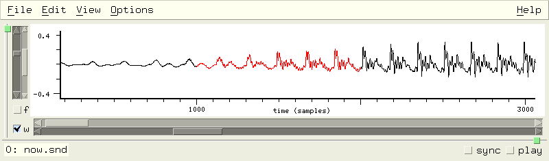

Snd Customization and Extension |
Snd is a highly customizable, extensible program.
The syntax used throughout this documentation is Scheme (a form of lisp) as implemented by the Gnu Guile library.
You can also use Ruby, but need to make the obvious changes.
I've tried to bring out to lisp nearly every portion
of Snd, both the signal-processing functions, and
much of the user interface. You can, for example,
add your own menu choices, editing operations,
or graphing alternatives.
Nearly everything in Snd can be set in an initialization
file, loaded at any time from a file of scheme code or a saved state file,
specified via inter-process communication or from stdin
from any other program (CLM and Emacs in particular),
imbedded in a keyboard macro, or accessed in the
lisp listener. The easiest way to get acquainted
with this aspect of Snd is to open the listener
(via the View:Open listener menu option), and type
experiments in its window. Its prompt is ">". So,
say we've opened the listener (my typing is
in this font and Snd's responses
are in this font):
>(+ 1 2)
3
If the listener is active, and some sound
is selected, any characters typed while in the sound
graph which it can't handle are passed to the
listener; to exit the listener without using the
mouse, type C-g. This is also the way to get back to
the listener prompt if it appears to be hung; normally
in this situation,
it's actually waiting for a close paren; if you put the
cursor just past the close paren you're interested in
and type return,
Snd will flash the unbalanced open paren (if any) briefly.
In any case, whenever the cursor is just past a close paren,
the matching open paren is underlined.
Snd is organized as a list of sounds, each with a list of channels,
each channel containing lists of edits, marks, mixes, etc.
There are other objects such as colors, vcts (an optimization
of vectors), and regions; the currently active region is
called the selection. I originally presented all the
functions and variables in an enormous alphabetical
list, but that finally became unmanageable. In the following
sections, each of the basic entities is treated in a separate
section with cross-references where needed. The index
provides alphabetical entry.
There are many examples in examp.scm, examp.rb, and snd-test.scm.
Extensions to Snd can be found in:
| autosave.scm | auto-save (edit backup) support |
| bess.scm, bess.rb | FM demo (from bess.cl in CLM) |
| bess1.scm, bess1.rb | FM violin demo (from bess5.cl in CLM) |
| bird.scm, bird.rb | various North-American birds (from bird.clm) |
| clm-ins.scm | various CLM instruments translated to Snd |
| debug.scm | debugging aids |
| dlocsig.rb | CLM's dlocsig in Ruby (Michael Scholz) |
| dlp directory entries | various contributions from Dave Phillips |
| draw.scm | graphics additions |
| dsp.scm | various DSP-related procedures |
| edit-menu.scm | Edit menu additions |
| new-effects.scm, gtk-effects.scm, effects.rb | an Effects menu |
| env.scm | various envelope functions from CLM |
| enved.scm | envelope editor in lisp graph section |
| event.scm | xm module stuff for automatic user-interface tests |
| extensions.scm | extensions of Snd |
| fade.scm | frequency-domain cross-fades |
| fmv.scm | the fm-violin tied to real-time stuff |
| freverb.scm, freeverb.rb | a reverb |
| goopsnd.scm | first look at Goops (Guile Object System) for Snd |
| hooks.scm | functions related to hooks |
| index.scm, index.rb | snd-help locators |
| jcrev.scm | John Chowning's reverb |
| ladspa.scm | Kjetil S. Matheussen's LADSPA GUI-builder and previewer. |
| maraca.scm | Perry Cook's maraca physical model |
| marks.scm | functions related to marks |
| maxf.scm, maxf.rb | Max Mathews resonator |
| mix.scm | functions related to mixes and tracks |
| moog.scm | Moog filter (from CLM) |
| musglyphs.scm | Music notation symbols (from CMN) |
| nb.scm, nb.rb | Popup File info etc |
| noise.scm, noise.rb | CLM's noise.ins |
| peak-env.scm | peak envelope support |
| piano.scm, piano.rb | piano physical model |
| play.scm | play-related functions |
| popup.scm, gtk-popup.scm, popup.rb | Popup menu specializations |
| prc95.scm | Perry Cook's physical model examples (from CLM) |
| pvoc.scm | phase-vocoder examples |
| rgb.scm, rgb.rb | color definitions |
| rtio.scm | real-time stuff |
| rubber.scm, rubber.rb | rubber-sound |
| singer.scm | Perry Cook's vocal-tract physical model |
| snd-motif.scm, snd-gtk.scm | Motif/Gtk modules (xm.c, xg.c) |
| snd-gl.scm | OpenGL examples (gl.c) |
| snd4.scm | backwards compatibility for version 4 |
| snd5.scm | backwards compatibility for version 5 |
| snd6.scm | backwards compatibility for version 6 |
| strad.scm, strad.rb | string physical model (from CLM) |
| v.scm, v.rb | fm-violin (from CLM) |
| ws.scm, ws.rb | with-sound implementation |
| xm-enved.scm, xm-enved.rb | xm-based envelope editor |
| zip.scm | the zipper (a cross-fader, sort of) (from CLM) |
Most of Snd's behavior can be customized. For example,
when a sound is saved, some people want to be warned if
a pre-existing sound is about to be destroyed; others (Snd's
author included) grumble "just do it". There are two ways
this kind of situation is handled in Snd; variables and hooks.
A hook is a list of callbacks invoked whenever the associated
event happens. When Snd exits, for example, any functions found
on the exit-hook list are evaluated; if any of them returns #t,
Snd does not exit.
(define unsaved-edits?
(lambda (lst)
(if (not (null? lst))
(if (> (car (edits (car lst))) 0)
(begin
(report-in-minibuffer "there are unsaved edits")
#t)
(unsaved-edits? (cdr lst)))
#f)))
(add-hook! exit-hook (lambda () (unsaved-edits? (sounds))))
|
Now when Snd is told to exit, it checks exit-hook, runs
unsaved-edits?, and if the latter returns #t, if prints
a worried message in the minibuffer, and refuses to
exit. Similar hooks customize actions such as closing
a sound (close-hook), clicking a mark (mark-click-hook),
pressing a key (key-press-hook), and so on.
The global variables handle various customizations that aren't callback-oriented.
For example,
as panes (sounds) come and go, Snd's overall size may change (this is
partly determined by the window manager, but is also
up to Snd); many people find this distracting -- they would rather that the
overall window stick to one size. The Snd variable associated
with this is "auto-resize"; it can be accessed as follows (we're typing
to the listener here, as described above):
>(auto-resize)
#t
>(set! (auto-resize) #f)
#f
As this illustrates,
variables in Snd are accessed as though each were a function, and set using set!. auto-resize's current
value is accessed via (auto-resize), and set to a
new value via (set! (auto-resize) #f). #t is Scheme for true
(often 1 in C, t in Lisp, true in Ruby), #f is false (0 in C, nil in Lisp, false in Ruby).
The statement (set! (auto-resize) #f) can be placed in your ~/.snd initialization file
to make it the default setting for your version of Snd, or placed
in a separate file of Scheme code and loaded at any time via the load
function.
The variables affecting Snd's overall behavior are:
ask-before-overwrite |
#f |
| should Snd ask before overwriting an existing file. |
|
audio-input-device |
mus-audio-default |
| Audio input device (for the recorder).
|
|
audio-output-device |
mus_audio-default |
| Audio output device (for the play button).
|
|
auto-resize |
#t |
| should Snd window resize upon open/close (see AutoResize and blathering above).
|
|
auto-update |
#f |
| should Snd update a file automatically if it changes on disk due to some other process.
|
|
auto-update-interval |
60 |
| Time (seconds) between background checks for changed file on
disk (see auto-update). If less than 0.0, the auto-update background process
is turned off.
|
|
dac-combines-channels |
#t |
| are channels mixed into available channels upon dac output.
|
|
dac-size |
256 |
| Audio output buffer size (not always meaningful). See play-with-envs in enved.scm or
play-sound in play.scm. When the various control panel controls are changed, the snappiness of the
response is set, to some extent, by the dac-size. The default of 256 gives a stair-case effect in many
cases, whereas 2048 is smoother. This also affects the resampling smoothness of playback while dragging the
mark play triangle. (Some audio choices, ALSA in particular, may ignore dac-size).
|
|
data-clipped |
#f |
| If #t, output values are clipped to fit the current sndlib sample
representation's notion of -1.0 to just less than 1.0. The default
causes wrap-around which makes the out-of-range values very obvious.
|
|
default-output-chans |
1 |
| The default number of channels when a new or temporary file is created,
or a save dialog is opened.
|
|
default-output-format |
mus-bshort |
| The default data format when a new or temporary file is created,
or a save dialog is opened. (mus-bshort is from sndlib, standing for 16-bit big-endian data). Use mus-out-format for fastest IO.
|
|
default-output-srate |
22050 |
| The default srate when a new or temporary file is created,
or a save dialog is opened.
|
|
default-output-type |
mus-next |
| The default header type when a new file is created,
or a save dialog is opened. (mus-next is from sndlib, standing for the NeXT/Sun sound file header).
|
|
emacs-style-save-as |
#f |
| After File:Save-as dialog option, should Snd remain with the current file (#f) or go to the new file (#t).
|
|
eps-bottom-margin |
0.0 |
| bottom margin used in snd.eps, created by the Print command.
PostScript units are 1/72 of an inch (a "point" in printer jargon);
an inch is 2.54 cm:
|
|
(define (inches-to-ps inches)
(* inches 72))
(define (cm-to-ps cm)
(* cm (/ 72.0 2.54)))
|
|
|
In the resulting .eps file, you'll find a concat statement near the
top of the file; the first and fourth numbers are scale factors on
the entire graph, the fifth is the left margin, and the sixth is the
bottom margin.
|
|
eps-file |
"snd.eps" |
| Name of the Postscript file produced by the File Print option.
See also the epsFile resource.
|
|
eps-left-margin |
0.0 |
| left margin used in snd.eps, created by the Print command.
|
|
eps-size |
1.0 |
| scaler used in snd.eps (Print command) for overall picture size.
|
|
filter-env-in-hz |
#f |
| If #t, filter env (sound control panel) x axis is in Hz, otherwise 0 to 1.0 (where 1.0 corresponds to srate/2).
|
|
graph-cursor |
XC_crosshair (34) |
| The kind of cursor displayed following the mouse in the data graph.
The X cursors are declared in /usr/X11R6/include/X11/cursorfont.h or some such file.
|
|
ladspa-dir |
#f |
| Name of directory for LADSPA plugin libraries (can override or replace LADSPA_PATH).
See Snd and LADSPA.
|
|
max-regions |
16 |
| Maximum size of the region list; the number of regions that are accessible. |
|
minibuffer-history-length |
8 |
| Maximum length of minibuffer and listener M-p/M-n history lists.
|
|
optimization |
0 |
| If non-zero, try to optimize simple lambda forms passed to the searches and so forth.
This depends partly on the optargs module (not available in the correct form before Guile 1.5),
only applies to Guile (not Ruby), and is highly experimental.
The actual values of the optimization switch are:
|
|
| 0: | no use of parse trees at all (use the standard Guile parser/evaluator) |
| 1: | allow simple ops (if complex result possible, give up) |
| 2: | assume nothing will return a complex number |
| 3: | if undefined global variable encountered, try to determine eventual type from context |
| 4: | make dangerous assumptions about variable types |
| 5: | make dangerous assumptions about variable locations (for set!) |
| 6: | try to splice in user-defined functions (buggy!) |
|
| Currently, the optimizer is able to speed up Scheme code by factors between
8 and 20; see snd-run.c for what is implemented, what the major limitations are, and so on.
If you set the optimization-hook to print out whatever it's argument is, you can
find out what the optimizer found confusing.
One dangerous assumption involved in local variables (optimization = 5) is that
such a variable might be a continuation set within the run-optimized code, but then
called from outside that block. This (obviously!) won't work, but it's too much trouble to
try to trap it in the context of run.
Here are some representative results;
the first number is the unoptimized time, the second is the optimized time, the third is
the speed-up ratio:
|
|
| singer | 1225 | 55 | 22 |
| abs sin | 447 | 36 | 12 |
| jcrev | 505 | 44 | 11 |
| vct-ref | 413 | 31 | 13 |
| -1 | 269 | 21 | 13 |
| expsnd | 158 | 16 | 10 |
| let if | 372 | 36 | 10 |
| *2 | 274 | 20 | 14 |
| fm vln | 206 | 16 | 13 |
|
save-dir |
#f |
| Name of directory for saved-state files.
If #f, all saved-state is placed (as text) in the saved-snd.scm
file. If you've edited a sound file, this can be unwieldy because each
changed sample is saved as text! By setting
save-dir, Snd instead places the necessary intermediate files in
save-dir, with the file names in the saved-state file. The assumption
here is that you won't mess with the save-dir files until you no
longer want to restart that version of Snd.
(set! (save-dir) "/tmp").
|
|
save-state-file |
"saved-snd.scm" |
| The default saved state file name.
|
|
selection-creates-region |
#t |
| If #t, a region is created whenever a selection is made. If you're editing very large sounds
and using selections, the region temp files can use up a lot of disk space (and the time to write
them); if you're not using regions anyway, this switch can turn them off.
|
|
show-backtrace |
#f |
| If #t, show backtrace automatically upon error.
|
|
show-indices |
#f |
| If #t, each sound's name is preceded by its index (in the sound pane).
|
|
show-selection-transform |
#f |
| If #t, display the transform of the current active selection, if any.
|
|
sinc-width |
10 |
| Width (in samples) of the sampling rate conversion sinc interpolation.
The higher this number, the better the src low-pass filter, but the slower
src runs. If you use too low a setting, you can sometimes hear high
frequency whistles leaking through. To hear these on purpose, make
a sine wave at (say) 55 Hz, then (src-sound '(0 3 1 1)) with sinc-width at 4.
|
|
temp-dir |
#f |
| Name of directory for temporary files. #f usually means "/tmp" or "/var/tmp".
See snd-tempnam, and autosave.scm.
|
|
trap-segfault |
#t |
| If #t, try to catch segfaults and continue anyway.
|
|
window-height |
0 |
| The current Snd window height in pixels.
This is the same as
(cadr (widget-size (cadr (main-widgets))))
except at startup when the window-height function and friends defer the set until after the main widgets
have been created. If Snd becomes confused about screen size, it can make its main window so large that
you can't get at any of the decorations for resizing the window; in this emergency you can
(set! (window-height) 300) or some such number.
|
|
window-width |
0 |
| The current Snd window width in pixels.
|
|
window-x |
-1 |
| The current Snd window left side in pixels.
This is (usually) the same as
(car (widget-position (cadr (main-widgets))))
|
|
window-y |
-1 |
| The current Snd window upper side in pixels (X numbering starts at 0 at the top).
|
|
with-background-processes |
#t |
| Determines whether Snd should use background (idle time) processes for ffts and so forth. (Intended primarily for auto-testing).
|
|
with-relative-panes |
#t |
|
If this flag is set in the Motif
version of Snd, a multichannel sound tries to retain the relative channel graph sizes
when the outer sash (the overall sound size sash) changes.
Mono sounds and the listener are not affected (perhaps they should be?).
|
|
zoom-focus-style |
zoom-focus-active |
| This determines what a zoom action focuses (centers) on. The choices are
zoom-focus-left, zoom-focus-right, zoom-focus-active, and zoom-focus-middle.
See Zoom options. |
When some user-interface action takes place, code is called that responds to that action;
these functions are sometimes called callbacks; in Guile the variable that holds a list of such
callbacks is known as a hook.
A hook provides
a way to customize user-interface
actions.
The hook itself is list of functions. The Guile function add-hook! adds a function to a hook's
list, remove-hook! removes a function, and reset-hook! clears out the list.
For example, the hook that is checked when you click the sound's name in the minibuffer is
name-click-hook. We can cause that action to print "hi" in the listener by:
>(add-hook! name-click-hook (lambda (snd) (snd-print "hi") #t))
If there is more than one function attached to a hook, some of the hooks
"or" the functions together (marked or below); that is they
run through the list of functions, and if any function returns something other than #f, the
hook invocation eventually returns the last such non-#f value. A few hooks are "cascade"
hooks; that is, each function gets the result of the previous function, and
the final function's value is returned.
In the other
cases (named "progn" from Common Lisp), the result returned by the hook is the result of the last function in the list.
Whatever the hook combination choice, all the functions on the hook list are run
on each invocatiion.
In the list below the arguments after the hook name refer to the arguments to the functions invoked by
the hook. That is, after-apply-hook (snd) means that the functions on the
after-apply-hook list each take one argument, a sound index.
In Ruby, the hook is a global variable that holds either a procedure or is false.
after-apply-hook (snd) |
|
|
called when 'Apply' finishes. add-amp-controls in snd-motif.scm uses this hook to
reset any added amplitude sliders to 1.0 when Apply finishes.
|
|
after-graph-hook (snd chn) |
|
|
called after a graph is updated or redisplayed; see display-samps-in-red,
draw-smpte-label in snd-motif.scm, or add-comment.
|
|
after-open-hook (snd) |
|
|
called just before a newly opened sound's window is displayed.
This provides a way to set various sound-specific defaults.
For example, the following causes Snd to default to locally
sync'd channels (that is, each sound's channels are sync'd
together but are independent of any other sound), united channels,
and filled graphs:
|
|
(add-hook! after-open-hook
(lambda (snd)
(if (> (channels snd) 1)
(begin
(set! (sync snd) (1+ snd)) ; 0 = #f
(set! (channel-style snd) channels-combined)
(set! (graph-style snd) graph-filled)))))
|
See also C-x b support in examp.scm, remember-sound-state in extensions.scm, enved.scm, and various
examples in snd-motif.scm.
|
|
after-save-state-hook (filename) |
|
|
called after Snd has saved its state (save-state). 'filename' is the (otherwise complete) saved state
program. See ws-save-state in ws.scm or remember-sound-state in extensions.scm. Both use this sequence:
(lambda (filename)
(let ((fd (open filename (logior O_RDWR O_APPEND)))) ; open to write at the end
(format fd "~%~%;;; save-state stuff here ~%")
...
(close fd)))
|
|
bad-header-hook (filename) | or |
|
called if a file has a bogus-looking header. Return #t to give up on that file.
(add-hook! bad-header-hook (lambda (n) #t))
|
|
before-apply-hook (snd) | or |
|
called when 'Apply' is clicked or apply-controls is called.
If it returns #t, the apply is aborted.
|
|
before-transform-hook (snd chn) | progn |
|
called just before an FFT (or spectrum) is calculated. If it returns
an integer, it is used as the starting point of the fft. The following
somewhat brute-force code shows a way to have the fft reflect the position
of a moving mark:
|
|
(define fft-position #f)
(add-hook! before-transform-hook (lambda (snd chn) fft-position))
(add-hook! mark-drag-hook (lambda (id)
(set! fft-position (mark-sample id))
(update-transform-graph)))
|
|
|
close-hook (snd) | or |
|
called each time a file is closed (before the close).
If it returns #t, the file is not closed.
|
|
(add-hook! close-hook
(lambda (snd)
(system \"sndplay wood16.wav\")
#f))
|
close-hook is used in autosave.scm, examp.scm, extensions.scm, and peak-env.scm; see, for example,
check-for-unsaved-edits or remember-sound-state in extensions.scm.
|
|
color-hook () | progn |
|
called whenever one of the variables associated with the color dialog changes. See start-waterfall in snd-gl.scm.
|
|
dac-hook (data) | progn |
|
called just before data is sent to DAC passing data as sound-data object. See with-level-meters in snd-motif.scm.
|
|
draw-mark-hook (id) | progn |
|
called before a mark is drawn (in XOR mode). If the hook returns #t, the mark is not drawn. mark-sync-color
in snd-motif.scm uses this hook to draw sync'd marks in some other color than the current mark-color.
|
|
drop-hook (filename) | or |
|
called each time Snd receives a drag-and-drop event, passing the hook the filename.
If it returns #t, the file is not opened. If you drag the file icon to the menubar,
Snd opens it as if you had called open-sound. If you drag it to a particular channel,
Snd mixes it at the mouse location in that channel. To get Snd to
mix the dragged file even from the menubar:
(add-hook! drop-hook (lambda (filename) (mix filename) #t))
snd-motif.scm has examples that add a drop callback to an arbitrary widget, or
change an existing callback (to pass the sound index and channel number to the drop callback function, bypassing drop-hook).
|
|
during-open-hook (fd name reason) |
|
|
called after file is opened, but before data has been read.
This provides an opportunity to set sndlib prescaling values:
|
|
(add-hook! during-open-hook
(lambda (fd name reason)
(if (= (mus-sound-header-type name) mus-raw)
((set! (mus-file-prescaler fd) 500.0)))))
|
|
|
The prescaling affects only sound data made up of floats or doubles.
|
|
enved-hook (env pt new-x new-y reason) | cascade
|
|
Each time a breakpoint is changed in the envelope editor, this hook
is called; if it returns a list, that list defines the new envelope,
otherwise the breakpoint is moved (but not beyond the neighboring
breakpoint), leaving other points untouched. The kind of change
is reason which can be enved-move-point, enved-delete-point,
or enved-add-point. This hook makes it possible to define attack
and decay portions in the envelope editor, or use functions such as
stretch-envelope from env.scm:
|
|
(add-hook! enved-hook
(lambda (env pt x y reason)
(if (= reason enved-move-point)
(if (and (> x 0.0) (< x (envelope-last-x env))) ; from env.scm
(let* ((old-x (list-ref env (* pt 2)))
(new-env (stretch-envelope env old-x x)))
(list-set! new-env (+ (* pt 2) 1) y)
new-env)
env)
#f)))
|
|
|
If there are several functions on the hook, each gets the (envelope)
result of the preceding function (if a function returns #f, the envelope
is not changed). A math-type would call this a "function composition"
method combination; a filter-type would say "cascade";
I like the latter.
|
|
exit-hook () | or
|
|
called upon exit.
If it returns #t, Snd does not exit. This can be used to check
for unsaved edits, or to perform cleanup activities (see autosave.scm, extensions.scm, or unsaved-edits?).
|
|
graph-hook (snd chn y0 y1) | or
|
|
called each time a graph is updated or redisplayed.
If it returns #t, the display is not updated.
See examp.scm for many examples.
|
|
(add-hook! graph-hook
(lambda (snd chn y0 y1)
"set the dot size depending on the number of samples being displayed"
(let ((dots (- (right-sample snd chn) (left-sample snd chn))))
(if (> dots 100)
(set! (dot-size snd chn) 1)
(if (> dots 50)
(set! (dot-size snd chn) 2)
(if (> dots 25)
(set! (dot-size snd chn) 3)
(set! (dot-size snd chn) 5))))
#f)))
|
|
|
help-hook (subject help-string) | cascade
|
|
called from snd-help with the current help subject and default help-string. Say we want the index.scm
procedure 'html' called any time snd-help is called (from C-? for example):
(add-hook! help-hook (lambda (subject help) (html subject) #f))
If there is more than one hook function, each function's result is passed as input to the next function.
|
|
initial-graph-hook (snd chn dur) | or
|
|
called the first time a given channel is displayed.
If it returns a list, the list's contents are interpreted as:
'(x0 x1 y0 y1 label ymin ymax)
(all values optional), where these numbers set the
initial axis limits and settings.
The default (empty hook) is equivalent to:
(add-hook! initial-graph-hook (lambda (snd chn dur) (list 0.0 0.1 -1.0 1.0 "time" -1.0 1.0)))
The dur argument is the total length in seconds of the channel, so to cause the
entire sound to be displayed initially:
(add-hook! initial-graph-hook (lambda (snd chn dur) (list 0.0 dur)))
To get the data limits (rather than the default -1.0 to 1.0 as above), you can use mus-sound-maxamp,
but if that sound's maxamp isn't already known, it can require a long process of reading the file. The following hook procedure
uses the maxamp data only if it is already available:
|
|
(add-hook! initial-graph-hook
(lambda (snd chn dur)
(if (mus-sound-maxamp-exists? (file-name snd))
(let* ((amp-vals (mus-sound-maxamp (file-name snd)))
(max-val (list-ref amp-vals (+ (* chn 2) 1))))
(list 0.0 dur (- max-val) max-val))
(list 0.0 dur -1.0 1.0))))
|
|
|
| A similar problem affects the dur argument. If the file is very long, Snd starts
a background process reading its data to get an overall amplitude envelope of the file,
and this envelope is what it actually displays when you zoom out to look at the entire
sound. If you set x1 to dur, you effectively get two such processes
contending for access to the data. One way around this is to save the envelope
(a "peak envelope" in Snd's nomenclature);
load peak-env.scm to make this process automatic.
|
|
just-sounds-hook (filename) | or
|
|
called on each file (after the sound file extension check) if the
just-sounds button is set. Return #f to filter out filename.
|
|
(add-hook! just-sounds-hook
(lambda (name) ;display only stereo files in file selection dialog
(and (not (= (mus-sound-header-type name) mus-raw))
;;any unrecognized file is considered "raw"
(= (mus-sound-chans name) 2))))
|
|
|
This currently only works in Motif; the Gtk file selection dialogs
don't provide a way to specialize the directory read.
|
|
key-press-hook (snd chn key state) | or
|
|
called upon key press while the mouse is in the lisp graph.
If it returns #t, the key press is not passed to the main handler.
state refers to the control, meta, and shift keys.
start-enveloping in enved.scm uses this hook to add C-g and C-. support to the
channel-specific envelope editors.
|
|
lisp-graph-hook (snd chn) | progn
|
|
called just before the lisp graph is updated or redisplayed (see display-db).
If it returns a list of pixels (xm style), these are used in order by the list of graphs (if any), rather than Snd's default set
(this makes it possible to use different colors for the various graphs).
If it returns a function (of no arguments), that function is called rather than the standard graph routine:
|
|
(add-hook! lisp-graph-hook
(lambda (snd chn)
(lambda ()
(draw-string "hi"
(x->position 0.5 snd chn lisp-graph)
(y->position 0.0 snd chn lisp-graph)
snd chn))))
|
|
|
listener-click-hook (textpos) |
|
|
called when a click occurs in the listener; the argument is the position in the text where the click occurred.
See click-for-listener-help in draw.scm.
|
|
mark-click-hook (id) | progn
|
|
called when a mark is clicked; return #t to squelch default minibuffer mark identification. The following
hook function is used in with-marked-sound in ws.scm to display arbitrary info about a note.
|
|
(add-hook! mark-click-hook
(lambda (n)
(if (not (defined? 'mark-properties)) (load "marks.scm"))
(help-dialog "Mark Help"
(format #f "Mark ~D~A:~% sample: ~D = ~,3F secs~A~A"
n
(let ((name (mark-name n)))
(if (> (string-length name) 0)
(format #f " (~S)" name)
""))
(mark-sample n)
(/ (mark-sample n) (srate (car (mark-home n))))
(if (not (= (mark-sync n) 0))
(format #f "~% sync: ~A" (mark-sync n))
"")
(let ((props (mark-properties n)))
(if (and (list? props)
(not (null? props)))
(format #f "~% properties: '~A" props)
""))))
#t))
|
|
|
mark-drag-hook (id) |
|
|
called when a mark is dragged.
|
|
(define (report-mark-location id)
;; print current mark location in minibuffer
(let ((samp (mark-sample id))
(sndchn (mark-home id)))
(report-in-minibuffer
(format #f "mark ~D: sample: ~D (~,3F) ~A[~D]: ~,3F"
id samp
(/ samp (srate (car sndchn)))
(short-file-name (car sndchn))
(cadr sndchn)
(sample samp (car sndchn) (cadr sndchn))))))
(add-hook! mark-drag-hook report-mark-location)
|
|
|
mark-drag-triangle-hook (id x time dragged-before) | progn
|
|
called when a mark play triangle is dragged. The smoothness of the response to the drag motion is
largely determined by dac-size.
dragged-before is #f when the drag starts and #t thereafter. x is the mouse x location in the current
graph. time is the uninterpreted time at which the drag event was reported. id is the mark id. If the hook returns #t,
Snd takes no further action. To set up to play, then interpret the motion yourself, return #f on the first call,
and #t thereafter:
|
|
(let ((first-x 0))
(add-hook! mark-drag-triangle-hook
(lambda (id x time dragged-before)
(if (not dragged-before)
(set! first-x x)
(set! (speed-control) (/ (- x first-x) 16.0)))
dragged-before)))
|
|
|
mark-hook (id snd chn reason) |
|
|
called when a mark is added, deleted, or moved (but not while moving). 'id' can be -1 (i.e. no specific mark).
'Reason' can be 0: add, 1: delete, 2: move (via set! mark-sample), 3: delete all marks, 4: release (after drag).
In the "release" case, the hook is called upon button release before any edits (control-drag of mark) or sorting (simple drag),
and if the mark-sync is active, the hook is called on each syncd mark.
|
|
(define (snap-mark-to-beat)
;; when a mark is dragged, its end position is always on a beat
(let ((mark-release 4))
(add-hook! mark-hook
(lambda (mrk snd chn reason)
(if (= reason mark-release)
(let* ((samp (mark-sample mrk))
(bps (/ (beats-per-minute snd chn) 60.0))
(sr (srate snd))
(beat (floor (/ (* samp bps) sr)))
(lower (inexact->exact (/ (* beat sr) bps)))
(higher (inexact->exact (/ (* (1+ beat) sr) bps))))
(set! (mark-sample mrk)
(if (< (- samp lower) (- higher samp))
lower
higher))))))))
|
|
|
mix-amp-changed-hook (id chan) | progn
|
|
called when a mix's amp changes via the mouse (id = mix id, chan = which channel's slider moved in the Mix Panel).
If it returns #t, the actual remix is the hook's responsibility.
With this hook and the parallel mix-dragged-hook,
mix-amp-env-changed-hook, and
mix-speed-changed-hook,
the intent is that user-interface changes will go through the hooks, but programmatic changes
(setting mix-amp from code, for example) will handle the sync's effects and what not explicitly.
The pan-mix function in mix.scm uses all four to make sure
that all the mixes and their channels related to a given panning event can be handled
as a unit through the user interface.
|
|
mix-amp-env-changed-hook (id chan) | progn
|
|
called when a mix's amp env changes via the mouse (id = mix id, chan = which channel's amp env in the Mix Panel); this can happen either through
the Mix Panel amp envs, or through the Envelope Editor if it is applied to a mix's amp env.
If it returns #t, the actual remix is the hook's responsibility.
|
|
mix-click-hook (id) | progn
|
|
called when a mix tag is clicked; return #t to omit the default action which is to print the mix id in
the minibuffer. Here's an example that sets the mix amps to 0 if you click it (see mix-click-sets-amp
in mix.scm for a fancier version):
|
|
(add-hook! mix-click-hook
(lambda (n)
(do ((i 0 (1+ i)))
((= i (mix-chans n)))
(set! (mix-amp n i) 0.0))
#t))
|
|
|
mix-drag-hook (id) |
|
|
called when a mix is dragged.
|
|
(add-hook! mix-drag-hook
(lambda (n)
(report-in-minibuffer
(format #f "mix ~A at ~D: ~,3F" n (mix-position n) (/ (mix-position n) (srate))))))
|
|
|
mix-dragged-hook (id samps) | progn
|
|
called after a mix has been dragged by the mouse to a new position (id = mix id,
samps = total samples moved during the drag). If it returns #t, the actual remix is the
hook's responsibility.
|
|
mix-speed-changed-hook (id) | progn
|
|
called when a mix's speed changes via the mouse (id = mix id).
If it returns #t, the actual remix is the hook's responsibility (see respeed-track in mix.scm).
|
|
mouse-click-hook (snd chn button state x y axis) | or
|
|
called upon a mouse button click (press and release without drag). If it returns #t, the click is ignored by Snd.
See the current-window-location procedures in draw.scm. Here's a simpler example: |
|
(define (click-to-center snd chn button state x y axis)
;; if mouse click in time domain graph, set cursor as normally, but also center the window
(if (= axis time-graph)
(let ((samp (inexact->exact (* (srate snd) (position->x x snd chn)))))
(set! (cursor snd chn) samp)
(set! (right-sample snd chn)
(- samp (inexact->exact (* .5 (- (left-sample snd chn) (right-sample snd chn))))))
(update-time-graph)
#t)
#f))
(add-hook! mouse-click-hook click-to-center)
|
|
|
mouse-drag-hook (snd chn button state x y) |
|
|
called when the mouse is dragged within the lisp graph (see enved.scm or rtio.scm).
|
|
mouse-enter-graph-hook (snd chn) |
|
|
called when the mouse enters a channel's drawing area (graph pane).
|
|
(add-hook! mouse-enter-graph-hook
(lambda (snd chn)
(snd-print (format #f "~A[~A]" (short-file-name snd) chn))))
|
|
|
mouse-enter-label-hook (type position name) |
|
|
called when a file viewer or region label
is entered by the mouse. The 'type' is 0 for the current files list, 1 for previous files, and 2 for regions.
The 'position' is the scrolled list position of the label.
The label itself is 'label'. We could use the finfo procedure in examp.scm
to popup file info as follows:
|
|
(add-hook! mouse-enter-label-hook
(lambda (type position name)
(if (not (= type 2))
(help-dialog name (finfo name)))))
|
|
| See also files-popup-buffer in examp.scm |
|
mouse-enter-listener-hook (widget) |
|
|
called when the mouse enters the lisp listener pane. This hook, along with the parallel graph hook
makes it possible to set up Snd to behave internally like a window manager with pointer-focus. That is, to
ensure that the pane under the mouse is the one that receives keyboard input, we could define the following
hook procedures:
|
|
|
(add-hook! mouse-enter-graph-hook
(lambda (snd chn)
(if (sound? snd) (focus-widget (car (channel-widgets snd chn))))))
(add-hook! mouse-enter-listener-hook
(lambda (widget)
(focus-widget widget)))
|
|
|
I much prefer this style of operation.
|
|
mouse-enter-text-hook (widget) |
|
|
called when the mouse enters a text widget (this is the third of the pointer-focus hooks).
|
|
(add-hook! mouse-enter-text-hook
(lambda (w)
(focus-widget w)))
|
|
|
mouse-leave-graph-hook (snd chn) |
|
|
called when the mouse leaves a channel's drawing area (graph pane).
|
|
mouse-leave-label-hook (type position name) |
|
|
called when the mouse exits one of the labels covered by mouse-enter-label-hook. (See nb.scm)
|
|
mouse-leave-listener-hook (widget) |
|
|
called when the mouse leaves the lisp listener pane.
|
|
mouse-leave-text-hook (widget) |
|
|
called when the mouse leaves a text widget.
|
|
mouse-press-hook (snd chn button state x y) |
|
|
called upon a mouse button press within the lisp graph (see enved.scm). The x and y values are
relative to the lisp graph axis (as if the raw mouse pixel position was passed through
position->x and position->y).
|
|
mouse-release-hook (snd chn button state x y) |
|
|
called upon a mouse button release within the lisp graph (see enved.scm).
|
|
multichannel-mix-hook (ids) |
|
|
called when a multichannel sound is mixed into a sync'd sound.
ids is a list of mix id numbers. sync-multichannel-mixes in mix.scm uses
this hook to sync together the members of a multichannel mix.
|
|
mus-error-hook (error-type error-message) | or |
|
called upon mus_error.
If it returns #t, Snd ignores the error (it assumes you've handled it via the hook).
This hook is used in play-sound in play.scm to flush an error message that the Snd ALSA support code generates (or used to generate).
|
|
name-click-hook (snd) | or
|
|
called when the sound name is clicked.
If it returns #t, the usual informative minibuffer babbling is squelched.
|
|
(add-hook! name-click-hook
(lambda (snd) ; toggle read-only
(set! (read-only snd) (not (read-only snd)))
#t))
|
|
|
new-sound-hook (filename) |
|
|
called whenever a new sound file is being created. sound-let in ws.scm uses
this hook to keep track of newly created temporary sounds so that it can delete them once they are no longer needed.
|
|
new-widget-hook (widget) |
|
|
called each time a dialog or a new set of channel or sound widgets is created. This is used in snd-motif.scm (paint-all) to
make sure all newly created widgets have the same background pixmaps.
|
|
open-hook (filename) | or
|
|
called each time a file is opened (before the actual open).
If it returns #t, the file is not opened.
If it returns a string (a filename), that file is opened instead of the original one.
|
|
(add-hook! open-hook
(lambda (filename)
(if (= (mus-sound-header-type filename) mus-raw)
;; check for "OggS" first word, if found, translate to something Snd can read
(if (call-with-input-file filename
(lambda (fd)
(and (char=? (read-char fd) #\O)
(char=? (read-char fd) #\g)
(char=? (read-char fd) #\g)
(char=? (read-char fd) #\S))))
(let ((aufile (string-append filename ".au")))
(if (file-exists? aufile) (delete-file aufile))
(system (format #f "ogg123 -d au -f ~A ~A" aufile filename))
aufile)
#f)
#f)))
|
See also open-buffer in examp.scm.
|
|
open-raw-sound-hook (filename current-choices) | progn
|
|
called each time open-sound encounters a headerless file.
Its result can be a list describing the raw file's attributes (thereby bypassing the Raw File Dialog and so on):
(list chans srate data-format data-location data-length) where trailing elements can
be omitted (location defaults to 0, and length defaults to the file length in bytes).
If there is more than one function on the hook list, functions after the first get the
on-going list result (if any) as the current-choices argument (the empty list is the default).
(add-hook! open-raw-sound-hook (lambda (file choices) (list 1 44100 mus-lshort)))
Return '() to accept all the current raw header defaults; return #f to fallback on the Raw File Dialog.
The raw header defaults are stereo, 44100 Hz, big endian short data; these values can be changed in the
Raw File Dialog, or by calling open-raw-sound with explicit arguments.
|
|
optimization-hook (message) |
|
|
called each time the optimizer hits something it can't handle; message tries to give some information about the situation.
(add-hook! optimization-hook (lambda (n) (display (format #f "~A~%" n))))
Normally, if the optimizer fails for some reason, it falls back silently on the Guile evaluator, so
the code simply runs slower. This hook gives you a way to find out why the optimizer gave up.
|
|
orientation-hook () | progn
|
|
called whenever one of the variables associated with the orientation dialog changes. See start-waterfall in snd-gl.scm.
|
|
output-comment-hook (str) | cascade
|
|
called in the Save-As dialog. str is the current sound's comment.
If there is more than one hook function, each function's result is passed as input to the next function in the list.
|
|
(add-hook! output-comment-hook
(lambda (str)
(string-append str ": written "
(strftime "%a %d-%b-%Y %H:%M %Z"
(localtime (current-time))))))
|
|
|
output-name-hook () | progn
|
|
called in the New File dialog, setting the file name in the associated text widget.
|
|
(let ((file-ctr -1))
(add-hook! output-name-hook
(lambda ()
(set! file-ctr (+ file-ctr 1))
(format #f "~A-~D.snd"
(strftime "%b-%d" (localtime (current-time)))
file-ctr))))
|
|
|
play-hook (samps) | progn
|
|
called each time a buffer (size: samps) is about to be
filled for the DAC (see enved.scm and marks.scm).
|
|
previous-files-select-hook (filename) | or
|
|
called each time a file is selected in the View Files dialog's previous files list.
If it returns #t, the file is not opened in Snd (the default action). We can use this
hook to use the previous files list for whatever purpose seems handy.
Say we want to click a file to have it mixed into the currently selected sound at
the cursor:
|
|
(add-hook! previous-files-select-hook
(lambda (file)
(mix file (cursor))
#t))
|
|
|
print-hook (text) | progn
|
|
called each time some Snd-generated response (text) is about to be appended to the listener.
If it returns some non-#f result, Snd assumes you've sent the text out yourself, as well as any needed prompt.
The prompt is important! Snd uses it to find the current form to evaluate, so if your print hook
forgets to include it, you can end up with a comatose listener. To get out of this state, include
the prompt by hand (i.e. type ">(reset-hook! print-hook)").
This is intended to make it possible to
distinguish Snd responses from user-typing, or add arbitrarily fancy prompts, etc. Here are two
examples, the first adds a timestamp, the second (in Gtk) displays Snd's responses in red:
|
|
(add-hook! print-hook
(lambda (msg)
(if (char=? (string-ref msg 0) #\newline)
(snd-print msg)
(snd-print (format #f "~A~%[~A]~%~A" ;need newline just before listener-prompt
msg
(strftime "%d-%b %H:%M %Z" (localtime (current-time)))
(listener-prompt))))))
(add-hook! print-hook
(lambda (msg)
(let ((old-color (listener-text-color)))
(set! (listener-text-color) (make-color 1 0 0))
(snd-print msg)
(set! (listener-text-color) old-color))
(snd-print (listener-prompt))))
|
|
|
read-hook (text) | or
|
|
called each time a line is typed into the listener (it is triggered by the carriage return).
If it returns #t, Snd assumes you've dealt the text yourself, and does not try to evaluate it.
This is intended to make it possible to read user-typing in the listener.
|
|
(define (read-listener-line prompt)
"(read-listener-line prompt) prompts for input and returns it in Snd's listener"
(let ((res #f))
(add-hook! read-hook (lambda (str) (set! res str) #t))
(reset-listener-cursor)
(snd-print "\n")
(snd-print prompt)
(do () ((or (c-g?) res)))
(reset-hook! read-hook)
res))
|
|
|
|
save-hook (snd name) | or
|
|
called each time a file is about to be saved.
If it returns #t, the file is not saved. name is #f unless
the file is being saved under a new name (as in save-sound-as). (See the auto-save code in autosave.scm).
|
|
save-state-hook (temp-filename)
|
|
called each time the save-state
mechanism is about to create a new temporary file to save some edit history sample values.
temp-filename is the current temporary file name.
If the hook returns a string, it is treated as the new temp filename. This hook provides a way to
keep track of which files are in a given saved state batch, and a way to rename or redirect those files.
The default naming scheme simply increments a counter and places everything in the save-dir;
without the save-state-hook, if you are saving several states, it can be a pain sometimes to decide which files are no longer needed.
|
|
select-channel-hook (snd chn) |
|
|
called when a channel is selected (after the sound has been selected). The arguments are the sound's index and the channel number.
|
|
select-mix-hook (id) |
|
|
called when a mix is selected. The argument is the newly selected mix's id.
|
|
select-sound-hook (snd) |
|
|
called when a sound is selected. The argument is the about-to-be-selected sound's index.
|
|
snd-error-hook (error-message) | or
|
|
called upon snd_error.
If it returns #t, Snd flushes the error (it assumes you've
reported it via the hook).
|
|
(add-hook! snd-error-hook
(lambda (msg)
(play "bong.snd") ; or if xm is loaded, (XBell (XtDisplay (cadr (main-widgets))) 10)
#f))
|
|
|
snd-warning-hook (warning-message) | or
|
|
called upon snd_warning.
If it returns #t, Snd flushes the warning (it assumes you've
reported it via the hook).
|
|
(define without-warnings
(lambda (thunk)
(define no-warning (lambda (msg) #t))
(add-hook! snd-warning-hook no-warning)
(thunk)
(remove-hook! snd-warning-hook no-warning)))
|
|
|
start-hook (filename) | or
|
|
called when Snd starts.
If it returns #t, Snd exits immediately.
Say we are so annoyed with the X/Motif file browser that we want
Snd to exit back to the shell if its file argument is not
found (this code obviously has to be in the ~/.snd init file):
|
|
(add-hook! start-hook
(lambda (file)
(if (not (file-exists? file))
(begin
(display file) (display " does not exist")
#t))))
|
|
|
start-playing-hook (snd) | or
|
|
called when a sound is about to be played.
If it returns #t, Snd does not play (see report-mark-names in marks.scm).
|
|
start-playing-selection-hook () | or
|
|
called when the selection is about to be played.
If it returns #t, Snd does not play the selection.
|
|
stop-dac-hook () |
|
|
called when Snd stops playing and turns off the DAC, normally upon mus_audio_close. See snd-motif.scm.
|
|
stop-playing-channel-hook (snd chn) |
|
|
called when a sound finishes playing.
|
|
stop-playing-hook (snd) |
|
|
called when a sound finishes playing.
The following code plays a sound over and over until you type C-g:
|
|
(define (play-until-c-g)
(define (play-once snd)
(if (c-g?)
(remove-hook! stop-playing-hook play-once)
(play 0 snd)))
(add-hook! stop-playing-hook play-once)
(play))
|
|
|
Here's somewhat brute-force code to play a sound a given number of times.
|
|
(define (play-often n)
(let ((plays (- n 1)))
(define (play-once snd)
(if (or (= plays 0)
(c-g?))
(remove-hook! stop-playing-hook play-once)
(begin
(set! plays (- plays 1))
(play 0 snd))))
(add-hook! stop-playing-hook play-once)
(play)))
(bind-key (char->integer #\p) 0 (lambda (num) (play-often (max 1 num))))
|
|
|
stop-playing-region-hook (n) |
|
|
called when a region finishes playing. See play.scm.
|
stop-playing-selection-hook () | progn
|
|
called when the selection finishes playing. See popup.scm.
|
transform-hook (snd chn scaler) |
|
|
called just after an FFT (or spectrum) is calculated.
|
|
(define (fft-peak snd chn scale)
(if (and (transform-graph?)
(= (transform-graph-type) graph-once))
(report-in-minibuffer
(number->string (/ (* 2 (vct-peak (transform-samples->vct snd chn)))
(transform-size snd chn))))))
(add-hook! transform-hook fft-peak)
|
|
|
update-hook (snd) | or
|
|
update-hook is called just before a sound is updated (re-read from the disk, flushing the current version; this
is useful if you overwrite a sound file while viewing it in Snd).
The update process can be triggered by a variety of situations, not just by update-sound.
The hook is passed the sound's index. If it returns #t, the update is cancelled (this is not
recommended!); if it returns a procedure of one argument, that procedure is called upon
completion of the update operation; its argument is the (possibly different) sound index.
Snd tries to maintain the index across the update, but if you change the number of channels
the newly updated sound may have a different index. add-mark-pane in snd-motif.scm uses
the returned procedure to make sure the mark pane is reactivated right away when a sound is updated. The basic idea is:
|
|
(add-hook! update-hook
(lambda (snd-about-to-be-udpated)
;; this function called just before update
(lambda (updated-snd)
;; this code executed when update is complete
(snd-print "ok!"))))
|
|
|
window-property-changed-hook (command) | or
|
|
called when Snd sees a SND_COMMAND window property change.
If it returns #t, the command is not evaluated. (This is mostly an internal debugging hook).
|
|
Channel-specific hooks:
edit-hook (snd chn)
undo-hook (snd chn)
after-edit-hook (snd chn)
|
These are functions that return the hooks in question associated with the specified channel.
The functions on these hooks are thunks -- they should take no arguments.
edit-hook is called just before any attempt to edit the channel's data; if it returns #t,
the edit is cancelled. So,
|
(add-hook! (edit-hook) (lambda () #t))
|
halts any attempt to edit the data; this is even more restrictive than setting the read-only
flag because the latter only refuses to overwrite the current data. undo-hook is called
just after any undo, redo, or revert that affects the channel. after-edit-hook is called
after an edit, but before after-graph-hook (add-mark-pane in snd-motif.scm
uses this hook to update a mark list after each edit
so that the displayed mark positions are correct).
You can use edit-hook to set
up protected portions of the edit history:
|
(define protect
"(protect #:optional snd chn) disallows any edits before the current one"
(lambda args
(let* ((edit-pos (apply edit-position args))
(hook (apply edit-hook args)))
(reset-hook! hook)
(add-hook! hook
(lambda ()
(let ((val (< (apply edit-position args) edit-pos)))
(if val (report-in-minibuffer "protected"))
val))))))
(define unprotect
"(unprotect #:optional snd chn) allows edits at any edit history position"
(lambda args
(reset-hook! (apply edit-hook args))))
|
enved.scm uses several of these hooks to implement an envelope editor in lisp.
add-mark-pane in snd-motif.scm uses them to make sure the mark list reflects the current edit history location.
See also menu-hook and autosave.scm.
You can find out what's on a given hook with the following (which is mostly adding carriage returns to the
printout from hook->list):
(define (describe-hook hook)
(for-each
(lambda (n)
(snd-print (format #f "~A~%" n)))
(reverse (hook->list hook))))
|
Say we pile up some random stuff on name-click-hook:
(add-hook! name-click-hook snd-print)
(add-hook! name-click-hook (lambda (n) (snd-print n)))
(add-hook! name-click-hook (let ((ha 32)) (lambda (n) ha)))
Then we go skiing for a week, get home, and can't remember where
we were. Do we panic and dial 911? No! We simply type:
:(describe-hook name-click-hook)
#<primitive-procedure snd-print>
#<procedure (n) (snd-print n)>
#<procedure (n) ha>
#<unspecified>
:
These hooks are extremely easy to add; if there's some user-interface action
you'd like to specialize in some way, send me a note. I'm slowly replacing
many of the global variables with hooks, since the latter are much more
flexible. hooks.scm has snd-hooks and reset-all-hooks, as well as other
useful hook-related functions.
Snd presents its various data structures as a list
of sounds, each with a list of channels, each with lists of edits,
marks, and mixes. The sound data itself is accessed through
a variety of structures and functions, each aimed at a particular
kind of use. One of the most commonly used is the vct.
But before launching into vcts, I need to explain a few things
about the following documentation.
In the following lists, optional arguments are in italics (although
netscape sometimes displays them in bold face for some reason).
Each sound has an
associated index used to refer to it in all the
functions. This arbitrary number is more
or less related to the sound's position in the
display of sounds (if the variable show-indices is #t,
the index is displayed in front of the sound's name).
In the argument lists
below, snd as an argument refers to the sound's index, and defaults to the currently
selected sound. Similarly, chn is the channel number, starting from 0, and defaults
to the currently selected channel. So if there's only one sound active (say it's index is 0), and it has only
one channel, (cursor) (cursor 0), and (cursor 0 0) all refer to the same
thing. If you want to refer to the currently selected sound, either use #f
as the sound index or selected-sound.
If the snd argument is a list, the first element of the list is
taken to be a mix id number, and the reference is to the underlying mix input
sound data. That is, (frames 1) returns the number of frames (samples per channel)
in the sound whose current index is 1; (frames (list 1)) returns the frames in
the sound that underlies the mix whose id is 1. Similarly (scale-by .5) scales
the currently selected sound by .5; (scale-by .5 (list 0) 2) scales the 3rd channel
of mix 0's input sound by .5. I keep saying "underlying" because normally a
mix is viewed after it has gone through its panel of controls (the set of widgets displayed
in the Mix Panel dialog -- these can affect the
amplitude, amplitude envelope, and sampling rate). next-mix-sample, for
example, refers to the processed form of the mix data, whereas next-sample
would refer to the original form. I may extend this to accept a list of mixes (i.e. a "track"
in the terminology of mix.scm).
In many cases, the snd, chn, and reg arguments
can be #t (for backwards compatibility, a few of them default to #t).
#t means "all" in this case; if snd is #t, all sounds are included,
so, for example, (expand-control #t) returns a list of the current
control panel expansion settings of all sounds, and
(set! (transform-graph? #t #t) #t)
turns on the fft display in all channels of all sounds.
When an error occurs, in most cases the function throws a tag such as 'no-such-sound,
'no-active-selection, etc.
All the functions that take sound and channel args (snd chn below) can return the errors
'no-such-sound and 'no-such-channel; all the mix-related functions can return 'no-such-mix;
all the region-related functions can return 'no-such-region; all selection-oriented functions
can return 'no-active-selection. To reduce clutter, I'll omit mention
of these below.
Many of the Snd and CLM functions handle vectors (arrays) of data.
By defining a new vector type, named vct, and providing a package
of old-style array-processing calls upon that type, we can speed up many
operations by a factor of 30. This is enough of a difference to warrant
the added complexity, I think. A vct can be viewed as a vector;
to make one, call make-vct. It is freed by the
garbage collector when it can't be referenced any further. To get
an element of a vct, use vct-ref; similarly vct-set!
sets an element (the "!" appended to the setter functions is standard in Scheme;
another is the use of "?" where Common Lisp is more likely to use "-p").
Once created, a vct can be passed to a variety of built-in
functions:
(define hi (make-vct 100))
(vct-fill! hi 3.14)
(vct-scale! hi -1.0)
Now our vct hi has 100 -3.14's.
list->vct (lst) |
| return vct with elements of list lst |
make-vct (len (initial-element 0.0)) |
| create vct of size len. |
sound-data->vct (sdobj (chan 0) (v #f)) |
| place sound-data channel data in vct, returning v or the new vct. |
vct args... |
| list->vct with args as the list: (vct 1 2 3) = (list->vct '(1 2 3)) |
vct? (v) |
| #t if v is a vct. |
vct-add! (v1 v2 (off 0)) |
| element-wise add: v1[i + off] += v2[i], returns v1. |
vct-copy (v) |
| return a copy of v. |
vct-fill! (v val) |
| set each element of v to val, v[i] = val, returns v. |
vct-length (v) |
| return length of v. |
vct-map (thunk v0 vcts...) |
| map 'thunk' (which should return a frame) into the vcts passed as trailing args. |
vct-map! (v proc) |
| set each element of v to the value returned by (proc); (vct-map! v (lambda () 3.0))
is the same as (vct-fill! v 3.0).
|
vct-move! (v new old (backwards #f)) |
|
| v[new++] = v[old++], returns v (if backwards is #t, v[new--] = v[old--]) |
vct-multiply! (v1 v2) |
| element-wise multiply: v1[i] *= v2[i], returns v1. |
vct-offset! (v val) |
| add val to each element of v: v[i] += val, returns v. |
vct-peak (v) |
| maximum of absolute value of all elements of v |
vct-ref (v pos) |
| element pos in v: v[pos]. |
vct-scale! (v scl) |
| multiply each element of v by scl: v[i] *= scl, returns v. |
vct-set! (v pos val) |
| set element pos of v to val: v[pos] = val. same as (set! (vct-ref v pos) val). |
vct-subtract! (v1 v2) |
| element-wise subtract: v1[i] -= v2[i], returns v1. |
vct-subseq (v start (end len) (nv #f)) |
| return a new vct (or nv if given) with the elements of v between start and end inclusive. end defaults
to the end of v. |
vct->channel (v (beg 0) (dur len) (snd #f) (chn #f) (edpos #f)) |
|
set the samples from beg to beg+dur from the values in v.
This is the regularized version of vct->samples.
|
vct->list (v) |
| return list with elements of v |
vct->samples (samp samps data (snd #f) (chn #f)) |
| A synonym for set-samples, but you can also pass just a vct as the first argument, or a start
sample and a vct as the second argument. This is too confusing! Use vct->channel instead.
(define v (samples->vct))
(vct-scale! v 2.0)
(vct->samples v) |
vct->sound-data (v sd (chan 0)) |
| place vct v data in sound-data sd, returning sd |
vct->sound-file (fd v vals) |
|
write vals floats from v to fd. This is intended for use with open-sound-file |
vct->vector (v) |
| return vector with elements of v |
vector->vct (vect) |
| return vct with elements of vector vect |
Many of the functions described below can take a vct as an argument;
there are also several functions that create and fill vcts with data:
region-samples->vct
samples->vct
transform-samples->vct
channel->vct
mix->vct
sound-data->vct
track->vct
vector->vct
There is one slightly
unusual function in this family: vct-map!.
This is a do-loop (or for-each) over a vct, calling some
function to get the values to assign into the vct. For example
(vct-map! out-data (lambda ()
(convolve cnv (lambda (dir)
(read-sample sf)))))
in the cnvtest function in examp.scm is calling the convolve generator and
assigning the result to each successive member of the out-data vct.
We can use vcts to write new sound files:
open-sound-file (name chans srate comment) ; returns fd
vct->sound-file (fd vct vals) ; writes vals floats to fd
close-sound-file (fd vals)
After opening the file, loop through the data calling samples->vct, deal with the
vct data as desired, write the samples to the file via vct->sound-file, then
when finished, close-sound-file. If the new data is to replace the old,
call (set! (samples...) data) with the new sound file's name; otherwise call insert-samples.
If you have Guile 1.4.1 or later, it's possible to access a vct's
elements with the syntax (v index), equivalent to (vct-ref v index),
but without some of the type checks.
This is using a feature called "applicable smobs" in Guile.
The clm generators also use this syntax:
>(define hi (make-oscil 440.0))
#<unspecified>
>(hi)
0.0
>(oscil hi)
0.125050634145737
It's no accident that the generator's type (i.e. oscil or whatever)
is hidden here. We can make a generator that is either
an oscil or a sawtooth-wave:
>(define sine-or-sawtooth
(lambda (sine)
(let ((gen ((if sine make-oscil make-sawtooth-wave) 440.0)))
(lambda (fm)
(gen fm)))))
#<unspecified>
>(define osc (sine-or-sawtooth #t))
#<unspecified>
>(osc 0.0)
0.0
>(osc 0.0)
0.125050634145737
Another sound data object is the sound-data array used in Sndlib.
make-sound-data (chans frames) |
| return a sound-data object with chans arrays, each of length frames |
sound-data-ref (obj chan frame) |
| return (as a float) the sample in channel chan at location frame |
sound-data-set! (obj chan frame val) |
| set obj's sample at frame in chan to (the float) val |
sound-data? (obj) |
| #t if obj is of type sound-data |
sound-data-length (obj) |
| length (in samples) of each channel of data in obj |
sound-data-maxamp (obj) |
| list of maxamps (one for each channel) of data in obj |
sound-data-chans (obj) |
| number of channels of data in obj |
sound-data->vct (sdobj chan vobj) |
| copy sound-data channel data into vct |
vct->sound-data (vobj sdobj chan) |
| copy vct data into sound-data |
All of the underlying sound library (Sndlib)
functions are available, as well as most of (CLM).
See play.scm and rtio.scm. The most important Sndlib functions for Snd are:
mus-audio-close (line) |
| close audio port line |
mus-audio-describe () |
| describe audio hardware state (in help window) |
mus-audio-error () |
| return error code raised by preceding audio call (much like "errno" in C) |
mus-audio-error-name (er)r |
| string description of error code |
mus-audio-mixer-read (device field channel vals) |
|
read current state of device's field:
|
|
mus-audio-amp mus-audio-srate mus-audio-channel mus-audio-format
mus-audio-imix mus-audio-igain mus-audio-reclev mus-audio-pcm
mus-audio-ogain mus-audio-line mus-audio-synth mus-audio-bass
mus-audio-direction mus-audio-port mus-audio-pcm2 mus-audio-treble
mus-audio-samples-per-channel
|
mus-audio-mixer-write (device field channel vals) |
|
set state of device's field.
|
|
;;; here we get the microphone volume, then set it to .5
(define vals (make-vector 32))
(mus-audio-mixer-read mus-audio-microphone mus-audio-amp 0 vals)
(vector-ref vals 0)
(vector-set! vals 0 .5)
(mus-audio-mixer-write mus-audio-microphone mus-audio-amp 0 vals)
;;; now set the 2 "igain" fields to 1
(vector-set! vals 0 1.0)
(vector-set! vals 1 1.0)
(mus-audio-mixer-write mus-audio-mixer mus-audio-igain 2 vals)
|
|
mus-audio-open-input (device srate chans format bufsize) |
|
open audio port device ready for input. Return -1 if the open failed. device is one of:
|
|
mus-audio-default mus-audio-duplex-default mus-audio-line-out
mus-audio-microphone mus-audio-speakers mus-audio-dac-out
mus-audio-aes-in mus-audio-digital-in mus-audio-digital-out
mus-audio-aes-out mus-audio-dac-filter mus-audio-mixer
mus-audio-line2 mus-audio-line3 mus-audio-aux-input
mus-audio-line-in mus-audio-aux-output mus-audio-adat-in
mus-audio-adat-out mus-audio-line1 mus-audio-cd
mus-audio-spdif-in mus-audio-spdif-out
|
mus-audio-open-output (device srate chans format bufsize) |
|
open audio port device ready for output. Return -1 if the open failed. |
mus-audio-read (line sdata frames) |
| read frames of data into sound-data object sdata from port line. The in-coming data format
is set by the corresponding mus-audio-open-input call and is translated to the sound-data format (internally known as
mus_sample_t) by mus-audio-read. |
mus-audio-restore () |
| restore a previously saved audio hardware state (unimplemented in many cases) |
mus-audio-save () |
| save the current audio hardware state (unimplemented in many cases) |
mus-audio-sun-outputs (speakers headphones line-out) |
|
(Sun only)
set the current Sun audio outputs.
Each entry should be either 0 (turn off device) or 1 (turn it on).
|
mus-audio-write (line sdata frames) |
| write frames of data from sound-data sdata to audio port line. As with mus-audio-read,
the out-going data format is set by mus-audio-open-output, and the sound-data's data is translated to that
format by mus-audio-write. |
mus-data-format-name (format) |
| convert format from an integer to a string, e.g. "16-bit big endian linear". The sndlib data formats are: |
|
mus-bshort mus-lshort mus-mulaw mus-alaw mus-byte
mus-lfloat mus-bint mus-lint mus-b24int mus-l24int
mus-ubshort mus-ulshort mus-ubyte mus-bfloat mus-bdouble
mus-ldouble
|
mus-expand-filename (name) |
| expand name into its 'absolute' pathname; that is, replace '~' with the current home directory,
and whatever else seems appropriate. |
mus-file-prescaler (fd) |
| The prescaling value for reading data from the sndlib file descriptor fd.
If you're reading float data that is extremely soft (i.e. max amp
below .001), the transfer to integer form in sndlib can cause bits
to be lost, resulting in hiss. In this case set the prescaler for
the file to 1000.0 or so to get the data into a more normal
range. Since the set of mus-file-prescaler should come just after opening
the sound file, but before trying to read any data, you need to use it in the context of during-open-hook.
A similar low-level sndlib function is mus-file-data-clipped.
|
mus-header-type-name (type) |
| convert type, an integer, to a string, e.g. "AIFF". Some of the sndlib header types are: |
mus-next mus-aifc mus-riff mus-nist mus-raw mus-ircam mus-aiff mus-bicsf mus-soundfont mus-voc mus-svx
|
mus-sound-chans (filename) |
| number of channels in filename (settable) |
mus-sound-close-input (fd) |
| close sound file |
mus-sound-close-output (fd bytes) |
| close sound file and update its length indication, if any |
mus-sound-comment (filename) |
| header comment, if any |
mus-sound-data-format (filename) |
| data format (e.g. mus-bshort) (settable) |
mus-sound-data-location (filename) |
| location of first sample (bytes) (settable) |
mus-sound-duration (filename) |
| duration of sound in seconds |
mus-sound-forget (filename) |
| remove filename from the sound cache (presumably the file has been deleted or something). |
mus-sound-frames (filename) |
| frames of sound according to header (can be incorrect) |
mus-sound-header-type (filename) |
| header type (e.g. mus-aifc) (settable) |
mus-sound-length (filename) |
| true file length (bytes) |
mus-sound-loop-info (filename) |
| loop info. mark-loops in examp.scm uses this to place a mark at each loop point.
|
mus-sound-maxamp (filename) |
| a list of max amps and locations thereof. The corresponding set!
affects only the sndlib table of sound file info, not the sound file itself. |
mus-sound-maxamp-exists? (filename) |
| #t if the sound's maxamp data is available
in the sound cache; if it isn't, a call on mus-sound-maxamp has to open and read the data to get the maxamp.
|
mus-sound-open-input (filename) |
| open filename (a sound file) returning an integer ("fd" below) |
mus-sound-open-output (filename srate chans data-format header-type comment) |
|
create a new sound file with the indicated attributes, return "fd" |
mus-sound-prune () |
| remove all defunct (non-existent) files from the sound cache. |
mus-sound-read (fd beg end chans sdata) |
|
read data from sound file fd loading the data array from beg
to end. sdata is a sound-data object that should be able to
accommodate the read |
mus-sound-reopen-output (filename chans data-format header-type data-location) |
|
reopen filename, ready to continue output. |
mus-sound-report-cache (file) |
| print the current sound header data table to the file given or stdout if none is specified. |
mus-sound-samples (filename) |
| number of samples in sound according to header (can be incorrect) (settable) |
mus-sound-seek-frame (fd frame) |
| move to frame in sound file fd |
mus-sound-srate (filename) |
| sampling rate (settable) |
mus-sound-write (fd beg end chans sdata) |
|
write data to sound file fd |
mus-sound-write-date (filename) |
| sound's write date:
|
|
:(strftime "%d-%b %H:%M %Z" (localtime (mus-sound-write-date "oboe.snd")))
"18-Oct 06:56 PDT"
|
mus-audio-set-oss-buffers (num size) |
| in Linux (OSS), this sets the number and size of the OSS fragments.
The default (as of 21-May-01) is to accept whatever OSS chooses: I believe this is normally
equivalent to (mus-audio-set-oss-buffers 16 12). This default makes the control panel controls very sluggish.
Snd used to call (mus-audio-set-oss-buffers 4 12) as its default,
but this seems to cause trouble for a variety of new sound cards.
My initialization file includes (mus-audio-set-oss-buffers 2 12). |
See Sndlib for more information on these functions. When called from Snd, these
throw 'mus-error upon encountering an error, rather than returning -1 like the underlying sndlib functions.
The following function uses the sndlib functions to mimic the 'info' popup menu option (see examp.scm for a version that uses format):
The simplest data access function is sample which returns the sample at
a given position in a sound's channel. This simplicity, however, comes at
a price in computation: if the desired sample is not in Snd's
in-core (already loaded) view of the data, it has to go get the sample,
which can sometimes require that it open, read, and close a sound file.
The result is that sample will bring your code
to a grinding halt. There are two alternatives, leaving aside the scanning
and mapping functions mentioned below. One involves keeping the buffer of
data around explicitly (samples->vct), and the other involves the
use of a special object known as a sample-reader. The sample-reader
returns the next sample in its sound each time it is called; this kind
of access is sometimes called an "enumerator".
The buffer approach (samples->vct in expsrc)
is better if you're jumping around in the data, the sample-by-sample approach (examp.scm has examples) if you're treating
the data as a sequence of samples.
To get a sample reader,
you create a reader (via make-sample-reader) giving it the start position, the sound and channel
to read, and the initial read direction, then get data via read-sample (which remembers the
read direction passed to make-sample-reader), or next-sample (read forward) and
previous-sample (read backward); when done, you can close the reader with free-sample-reader,
but it's not necessary; the
garbage collector will take care of it if you forget to.
A standard way to add something to the current
data is:
...
(sf (make-sample-reader start))
...
(vct-map! out-data (lambda () (+ (read-sample sf) <new stuff>)))
(free-sample-reader sf)
(vct->samples start len out-data)
This is equivalent to the clm call
(outa (+ start i) <new-stuff>)
but is applied as an edit to the current state in Snd.
There is a similar set of functions giving access to the mix data.
make-mix-sample-reader returns a mix reader for the desired mix,
mix-sample-reader? returns #t if its argument in a mix sample reader,
next-mix-sample returns the next sample (before it is mixed into
the output), and free-mix-sample-reader releases a reader.
Mixes can be collected into tracks, so there are also make-track-sample-reader, track-sample-reader?,
next-track-sample, and free-track-sample-reader.
As mentioned above, the mix-sample-reader refers to the mix data after
it has been processed through its control panel. The original (possibly
edited) sound can be accessed by a normal sample-reader.
free-mix-sample-reader (obj) |
|
release mix-sample-reader obj. |
free-sample-reader (obj) |
| release sample-reader obj. |
free-track-sample-reader (obj) |
|
release track-sample-reader obj. |
inspect-sample-reader (obj) |
| This is mainly a debugging aid; it returns a string with much internal info about the sample-reader obj. |
make-mix-sample-reader (mix beg) |
|
create a mix-sample-reader reading mix starting (in the mix input) at beg which defaults to 0.
See mix->vct in mix.scm.
|
make-region-sample-reader (start reg chn dir) |
|
create a sample-reader reading region reg's channel chn.
It is not safe to assume this reader will return zeros beyond the region boundaries.
|
make-sample-reader (start snd chn dir pos) |
|
create a sample-reader reading snd's channel chn
starting at sample start with initial read direction dir
(1=forward, -1=backward). pos is the edit history position to read
(defaults to current position). One use of pos is to get the difference
between two edits:
|
|
(define snd-diff
(lambda () ;assume mono, get diff between current state and previous
(let* ((index (selected-sound))
(edit-pos (edit-position index))
(previous-edit (make-sample-reader 0 0 index 1 (1- edit-pos))))
(lambda (x)
(- x (read-sample previous-edit)) #f))))
(map-chan (snd-diff))
|
|
|
snd can also be a filename (a string); in this way a sample-reader
can read external sounds without going to the trouble of loading them into Snd.
(define reader (make-sample-reader 100 "oboe.snd")).
|
|
make-track-sample-reader (track snd chn beg) |
|
create a track-sample-reader reading track. beg is the starting point of the reader within the track.
|
mix-sample-reader? (obj) |
| #t if obj is a mix-sample-reader. |
next-mix-sample (obj) |
| return next sample read by mix-sample-reader obj. |
next-sample (obj) |
| return next sample (reading forward) read by sample-reader obj. |
next-track-sample (obj) |
| return next sample read by track-sample-reader obj. |
previous-sample (obj) |
| return previous sample in stream read by sample-reader obj. |
read-sample (obj) |
| return next sample (reading in the direction set by make-sample-reader) from sample-reader obj. |
read-mix-sample (obj) |
| return next sample read by mix-sample-reader obj. |
read-track-sample (obj) |
| return next sample read by track-sample-reader obj. |
sample-reader-at-end? (obj) |
| #t if sample-reader obj is at the end of the sound (and hence returning 0.0 each time it is called).
See scan-again and find-zero.
|
sample-reader-home (obj) |
| return a list with the sound index and channel number associated with obj. |
sample-reader-position (obj) |
| current (sample-wise) location of sample-reader obj. See scan-again.
|
sample-reader? (obj) |
| #t if obj is a sample-reader. |
track-sample-reader? (obj) |
| #t if obj is a track-sample-reader. |
The read-sample functions can be omitted: (reader) is the same as (read-sample reader).
A mark is an object that refers to a particular sample.
Each mark has an associated sample number (mark-sample), name (mark-name), sync value (mark-sync), and
a globally unique id number (returned by find-mark or add-mark). See Marks
for an overview and key bindings associated with marks.
add-mark (sample snd chn) |
|
add mark at sample, returning mark id. If sample is out-of-range, add-mark throws 'no-such-sample.
|
backward-mark (count snd chn) |
| move the cursor back count marks (C-j), returning mark id, or #f if none.
|
delete-mark (id) |
| delete mark id (- C-m).
|
delete-marks (snd chn) |
| delete all marks in snd's channel chn.
|
draw-mark-hook (id) |
| called before a mark is drawn (discussed in the Hooks section).
|
find-mark (samp snd chn edpos) |
| return identifier of the mark at sample samp or #f if none.
This identifier is used in calls such as mark-sample. Since marks
can move around during editing, a unique 'tag' is needed to refer to a
particular mark. samp can also be a string; in this case find-mark
looks for a mark of that name. mark-name->id in marks.scm finds a named mark in any channel (a global version of find-mark).
|
forward-mark (count snd chn) |
| move the cursor forward count marks (C-j), returning mark id, or #f if none.
|
mark-click-hook (id) |
| called when a mark is clicked (discussed in the Hooks section).
|
mark-color |
| color of mark indicator (default: red).
|
mark-context |
| graphics context to use to draw a mark (XOR mode).
|
mark-home (id) |
| a list with the sound index and channel that hold mark id.
mark-home provides a way to go from a mark to its sound and
channel; the inverse function is marks.
|
mark-hook (id snd chn reason) |
| called when a mark is added, deleted, moved (discussed in the Hooks section).
|
mark-name (id) |
| name of mark id.
|
|
(define* (add-named-mark samp name #:optional snd chn)
(let ((m (add-mark samp snd chn)))
(set! (mark-name m) name)
m))
|
|
mark-sample (id pos) |
| sample (number) marked by mark id at edit history position pos; also (set! (mark-sample id) samp).
It might be more consistent with other Snd names to call this mark-position, but I wanted to emphasize
that a mark follows its sample around as a sound is edited; that is, it marks a sample, not a position in the sound.
|
mark-sync (id) |
| mark id's sync value (default is 0).
The sync value is very similar to
the mix track number or the sound sync field; it provides a way to group marks for simultaneous
changes. Marks that share the same sync value (if not 0), move together when any one of them is
dragged, play together if clicked, etc. To find which marks share a given
sync value, use syncd-marks; to find an unused sync value use mark-sync-max.
Marks that are syncd together can be used for insertions, and deletions, and can
set arbitrary groups of play points. But it's a bit tedious to type (set! (mark-sync ...)...)
for each of the marks you want in the group. The following uses the mark-clicked-hook
instead; you type (start-sync), then click the set of marks to sync, then (stop-sync).
|
|
(define mark-sync-number 0)
(define (start-sync) (set! mark-sync-number (+ (mark-sync-max) 1)))
(define (stop-sync) (set! mark-sync-number 0))
(define (click-to-sync id) (set! (mark-sync id) mark-sync-number) #f)
(add-hook! mark-click-hook click-to-sync)
|
|
|
Now control-click and drag one of them, and all move together deleting data, or
inserting zeros; or click the "play" triangle, and all play together starting from
the respective marks (which need not be in separate channels).
|
mark-sync-max () |
| max mark sync value seen so far (intended as a way to get a unique sync value).
|
marks (snd chn pos) |
| list of mark ids in snd's channel chn at edit history position pos.
If chn and pos are omitted, a list of lists is returned,
each inner list representing a channel of snd. If snd is
also omitted, a list of lists of lists is returned, representing
each sound and its channels.
|
|
(define (how-many-marks-in-channel snd chn)
(length (marks snd chn)))
(define (how-many-marks-in-sound snd)
(apply + (map length (marks snd))))
(define (how-many-marks)
(apply + (map how-many-marks-in-sound (sounds))))
|
|
|
marks
without any argument, or with just a sound index returns a list of lists; each inner list is the list
of current marks (ids) active in that channel, ordered by sample number. If the channel argument is
specified, marks returns just the list of mark ids. If the edit history position is given,
the list of ids reflects the mark list at that time in the edit history. See describe-marks in marks.scm.
|
mark? (id) |
| #t if mark id is active (that is, present in an active channel).
|
save-marks (snd) |
| save snd's marks, writing a file <name>.marks (return file name or #f if no marks).
|
show-marks |
| #t if marks are being (or to be) displayed.
|
syncd-marks (sync) |
| a list of marks (the mark id's) that share the mark-sync value sync.
|
|
(define (move-syncd-marks sync diff)
(for-each
(lambda (m)
(set! (mark-sample m) (+ (mark-sample m) diff)))
(syncd-marks sync)))
|
|
See marks.scm for
more examples including:
Other examples can be found in Dave Phillips' dlp/marks-menu.scm, snd-motif.scm (add-mark-pane),
edit-menu.scm (trim from mark, etc), examp.scm (move window to correspond to mark, looping).
A mix is an object that represents a channel of a sound mix.
Each mix object has a unique identifier called its id that identifies it in the following functions.
Say we have a mix whose id is 123:
>(mix-chans 123)
1
>(set! (mix-amp 123 0) .5)
.5
This
sets mix 123's channel 0 amplitude scaler to .5.
All of the signal-processing functions can be applied to its data.
In the functions that refer to a given sound, the form (list mix-id) refers to the
underlying mix's sound. So, (src-sound 2.0 1.0 (list 0) 0) performs
sampling-rate conversion on mix 0's sound's channel 0; (display-edits (list 0) 0)
shows the edit list of that sound. To undo or redo an edit that actually applied to the underlying
mix sound, call undo or redo on the outer (resultant, mixed-into) sound.
backward-mix (count snd chn) |
| move the cursor back count mix tags (C-x C-j), returning the mix id.
|
find-mix (samp snd chn) |
| return identifier of mix at sample samp (or anywhere in the given channel if samp is not specified) or #f if no mix is found.
|
forward-mix (count snd chn) |
| move the cursor forward count mix tags (C-x C-j), returning the mix id.
|
mix (file samp in-chan snd chn with-mix-tags auto-delet) |
|
mix file's channel in-chan starting at samp in snd's channel chn.
if only the file argument is given, this is equivalent to the File menu's
Mix option; the mix start sample in this case depends on the cursor location.
mix returns the id of the first channel's mix (subsequent channels simply
increment this number). If sync is off, only the first channel is mixed.
If with-mix-tags is #f (default is #t), the data is simply
mixed without creating any mix tags.
|
mixes (snd chn pos) |
| a list of currently active mixes in snd's channel chn at history pos.
|
mix-amp (mix chan) |
| amplitude of mix's channel chan.
|
mix-amp-env (mix chan) |
| amplitude envelope of mix's channel chan.
|
mix-anchor (mix) |
| anchor (tag) position (within the mix) of mix; a sample number.
|
mix-chans (mix) |
| chans in mix.
|
mix-color() |
| color of mix waveforms (defaults to dark-gray).
The set form, (set! (mix-color) ...), has an optional second argument; if you
want to set just a particular mix's color, give the id of the mix
as that argument: (set! (mix-color) red) sets all unselected mixes to
red; but (set! (mix-color 3) red) sets only mix #3 to be red.
|
mix-frames (mix) |
| mix's length in samples.
|
mix-home (mix) |
| a list of the sound index and channel number affected by mix.
|
mix-locked (mix) |
| #t if mix is locked. A mix is automatically locked (i.e. made immovable) if an edit operation
affects some portion of the data that the mix also affects. For example, if you delete a portion of a sound
that has actively mixed data, the associated mix tag goes away until you undo that deletion. This can
be used deliberately to remove a mix:
|
|
(define (delete-mix id)
(if (mix? id)
(as-one-edit
(lambda ()
(do ((i 0 (1+ i)))
((= i (mix-chans id)))
(set! (mix-amp id i) 0.0))
(set! (mix-locked id) #t)))))
|
|
mix-position (mix) |
| position (a sample number) of mix.
|
mix-region (samp reg snd chn) |
|
Mix in region reg at sample samp (defaulting to the cursor sample),
in snd's channel chn. mix-region returns the id of the first channel's
mix (subsequent channels simply increment this number).
|
mix-selection (beg snd chn) |
|
mix (add) selection starting at beg in snd's channel chn. Return new mix id.
|
mix-speed (mix) |
| speed (resampling ratio) of mix; 1.0 (default) means no resampling; 2.0 reads the mix data twice as fast.
|
mix-tag-height (mix) |
| tag height in graph of mix (default 14)
|
mix-tag-width (mix) |
| tag width in graph of mix (default 6)
|
mix-tag-y (mix) |
| tag y offset in graph of mix (default 0). The x offset of the tag is determined by mix-anchor.
|
mix-track (mix) |
| mix track (0 = none). (mix-sync is a synonym for this).
A "track" is a list of associated mixes (see mix.scm).
|
mix-vct (vct beg snd chn with-mix-tags origin) |
|
mix the contents of vct into snd's channel chn starting at frame beg.
Return the id of the new mix, or -1 if some error occurred.
If with-mix-tags is #f (default is #t), the data is simply
mixed without creating any mix tags, and without returning a mix id.
|
mix-waveform-height() |
| Max height (pixels) of mix waveforms; default is 20 (see show-mix-waveforms).
|
mix? (mix) |
| #t if mix is active.
|
play-mix (mix beg) |
| play mix mix. 'beg' is where to start playing within the mix.
|
play-track (track snd chn beg) |
| play track track. If snd is #t, play all associated mixes, even if in different sounds.
'beg' is where to start playing within the track.
|
selected-mix () |
| selected mix (#f if none) -- set to select mix.
|
selected-mix-color() |
| color of selected mix waveform (default is light green).
|
with-mix-tags() |
| If #f (default #t), automatically lock each new mix; the default is to place a tag above each
mix so that it can be easily moved around.
|
See mix.scm for more mix-related (and track-related) functions including:
mix sound file: mix or drag-and-drop it where you want it mixed.
mix channel: see mix-channel in extensions.scm
mix region: mix-region
mix selection: mix-selection
mix vct: mix-vct
enveloped mix: see enveloped-mix in extensions.scm
pan mono into stereo: see place-sound in examp.scm
the mix dialog: Mix Panel
mix menu: see dlp/mix-menu.scm
filter mix (or any other such operation): use list with mix id as 'snd' arg.
read pre-mix samples: make-mix-sample-reader
mix property list: mix-property in mix.scm
cross-fade in frequency: cross-fade and dissolve-fade in fade.scm
zipper cross-fade: zipper.scm
|
A region is a saved portion of sound data. There is a dialog, the View:Region browser, to inspect regions.
As regions are defined, the new ones are pushed on a stack, and if enough regions already
exist, old ones are pushed off (and deleted) to make room.
Each region has a unique id returned by make-region and shown beside the region name in the Region Browser.
Most of the region arguments default to the current region (the top of the regions stack).
forget-region (reg) |
|
"forget" (delete) region reg, removing it from the region stack. To delete all regions, (for-each forget-region (regions)).
I called this forget-region because delete-region seemed ambiguous, especially given delete-selection.
|
insert-region (beg reg snd chn) |
|
insert region reg at sample beg in snd's channel chn.
|
make-region (beg end snd chn) |
|
create a new region spanning samples beg to end in snd's channel chn.
return region's id. If no arguments are given, the
selection is used. If chn is #t, all chans are included, taking the snd sync field into account if it's not 0.
|
make-region-sample-reader (start reg chn dir) |
|
create a sample-reader reading region reg's channel chn.
|
mix-region (samp reg snd chn) |
|
Mix in region reg at sample samp (defaulting to the cursor sample),
in snd's channel chn. mix-region returns the id of the first channel's
mix (subsequent channels simply increment this number).
|
play-region (reg wait) |
|
play region reg; if wait is #t, play to the end before returning. (See play.scm).
|
region-chans (reg) |
|
number of channels in region reg.
|
region-frames (reg) |
|
number of samples (per channel) in region reg.
|
region-graph-style (style) |
|
graph drawing choice for the region dialog's graph.
|
region-maxamp (reg) |
|
maximum amplitude of region reg.
|
region-sample (samp reg chn) |
|
value of sample samp in region reg in channel chn.
|
region-samples->vct (samp samps reg chn v) |
|
return a vct containing samps samples starting at samp in region reg's
channel chn. If v (a vct) is provided, it is filled,
rather than creating a new vct.
|
(define (region-rms n)
(let* ((data (region-samples->vct 0 0 n)) ; len=0 => entire region
(len (vct-length data)))
(sqrt (/ (dot-product data data len) len))))
|
|
region-srate (reg) |
|
original (nominal) sampling rate of region reg.
|
regions () |
|
list of ids of regions currently active. The most recently created region is (car (regions)).
(map region-frames (regions)) returns a list of region lengths.
|
region? (reg) |
|
#t if region reg exists. There is a limit to how many regions Snd tries to
keep track of (max-regions); when necessary, the least-recently created region is
deleted.
|
save-region (reg filename type format comment) |
|
save region reg in filename in data format format (default is mus-bshort), header type type (default
is mus-next), with header comment comment.
|
convolve-selection-with (file amp) |
|
convolve the selection with file.
|
delete-selection () |
|
delete the selection.
|
env-selection (envelope env-base) |
|
apply envelope to the selection.
envelope can also be a CLM env generator (in this case, env-base
is ignored).
|
filter-selection (env order) |
|
apply an FIR filter of order order and frequency response env
to the selection. env can be the filter coefficients
themselves in a vct with at least order elements, or
a CLM filtering generator (see filter-sound).
|
insert-selection (beg snd chn) |
|
insert selection starting at beg in snd's channel chn.
|
mix-selection (beg snd chn) |
|
mix (add) selection starting at beg in snd's channel chn. Return new mix id.
|
play-selection (wait pos) |
|
play the selection. pos sets the edit position. If wait is #t, the function does not return until the play has completed.
|
reverse-selection () |
|
reverse the selection.
|
save-selection (file header-type data-format srate comment chan) |
|
save the selection in file. If chan is given, save only that channel.
See popup.scm for an example.
|
|
(define (brksnd dur base)
"(brksnd dur base) divides the current sound into dur-sized pieces, saving them as base.n"
(let ((hop (inexact->exact (* (srate) dur)))
(len (frames))
(old-sync (sync)))
(set! (sync) 1) ; save all chans
(do ((i 0 (+ i hop))
(j 0 (1+ j)))
((>= i len))
(make-selection i (+ i hop)) ; in extensions.scm
(save-selection (string-append base "." (number->string j))))
(set! (sync) old-sync)))
|
|
scale-selection-by (scalers) |
|
scale the selection by scalers which can be either a float,
a list of floats, or a vector of floats. In a multi-channel selection, each member of the vector or list
is applied to the next channel in the selection. (scale-selection-by '(0.0 2.0)) scales
the first channel by 0.0, the second (if any) by 2.0. (scale-selection-by 2.0) scales
all channels by 2.0. Normally the order of channels follows the order of the sound indices.
|
scale-selection-to (norms) |
|
normalize the selection to norms which can be either a float,
a list of floats, or a vector of floats.
|
select-all (snd chn) |
|
select all samples in snd's channel chn.
If a region is created, return the region's id.
|
selection-chans () |
|
selection channels.
|
selection-frames (snd chn) |
|
selection length in samples. You can set this to move the selection end point.
|
selection-maxamp (snd chn) |
|
maximum amplitude of selection in the given channel.
|
selection-member? (snd chn) |
|
#t if snd's chn is member of active selection. (This is settable). See make-selection in extensions.scm.
If snd is #t and the new value is #f, the entire selection is deactivated.
|
selection-position (snd chn) |
|
sample where selection begins. You can set this to move the selection's starting point to some arbitrary sample.
If changed, the selection end point stays the same, while the length (selection-frames) changes to reflect the
moved origin.
See make-selection in extensions.scm.
|
selection-srate () |
|
selection srate. There's some arbitrariness in this if the sounds that make up the selection have different sampling rates.
|
selection? () |
|
#t if there is a selection.
|
smooth-selection () |
|
apply a smoothing function to the selection. This produces a sinusoid between
the end points. |
src-selection (num-or-env base) |
|
apply sampling rate conversion to the selection;
this is the same as src-sound but applied to selection.
|
The selected portion can be chosen, independent of any region, by setting selection-position and selection-frames.
It's easy to extend the notion of a selection to an arbitrary list of sound portions:
(define (make-section . members)
;; each member is '(beg dur snd chn)
(append (list 'Section) members))
(define (section-for-each func section)
;; call func on each member of the section
(as-one-edit (lambda () (for-each func (cdr section)))))
;; an example that scales each member of the section by .5
(section-for-each
(lambda (sect)
(apply scale-channel (append (list .5) sect)))
(make-section (list 0 10000 0 0) (list 30000 10000 0 0)))
|
This is the heart of Snd; we've waded through all the ancillary junk, and we've
finally reached the functions that actually edit sounds! Most of these functions
take both a sound index and a channel number. To make global operations simpler to achieve,
some of the snd and chan arguments can be #t, referring to all current sounds or all channels of a sound;
of these, some default to the currently selected sound if no argument is given, whereas others
(mainly for historical reasons) default to all sounds and channels;
the former are indicated as snd or snd chn below,
and the latter as snd or snd chn.
Also, in most of the signal-processing functions, the snd argument can also be
a list; in this case it refers to a mix. For example, the cursor function,
which refers to the current cursor location, is listed here as:
cursor (snd chn) cursor location
which indicates that (cursor 0 0) returns the cursor location in sound 0, channel 0,
(cursor) returns the location in the currently selected sound, (cursor #t #t)
returns a list of lists of all the cursor locations, and (set! (cursor) 0) sets (just) the
cursor in the currently selected channel;
on the other hand, the transform-size function
is listed as:
transform-size (snd chn) FFT size.
which means that (transform-size 0 0) returns the fft size used in sound 0, channel 0,
(transform-size) returns the globally effective fft size, (transform-size #t #t)
returns a list of lists of all the fft sizes, and (set! (transform-size) 512) sets all
fft sizes to 512.
The variables are local to each sound or each channel.
That is, (amp-control snd) returns the control-panel amp setting, and (set! (amp-control snd) val)
sets its value to val.
Many of the procedures also have an edpos argument (standing for "edit position").
It always defaults to the current edit history position. If specified, it can be either an edit history position (to which
the operation is applied), the constant current-edit-position (the default), or a function
of two arguments, the sound index and the channel number. The function should return the
desired edit history position. In most cases, you should only refer to edits in the past
(that is, edpos should be less than or equal to the current edit-position); in a few
situations, you can make use of data in the "redo" section of the edit-history list, but
nothing is guaranteed.
For not-very-good historical reasons (it took me awhile to decide how to organize things), some of the procedures here are unnecessarily inconsistent in
what arguments they accept, whether a channel of #f signals application to all channels or just the
selected one, whether the sync field is followed, and so on. Rather than make a bunch of backwards
incompatible changes, I decided to add a bunch of more-or-less synonymous functions that regularize
these calls. The replacements always take arguments in the order begin time, duration (not end sample),
sound index, channel number, and edit position, possibly preceded by one argument, and sometimes followed by
an edit history name or 'ring time' (overlap). The sync field is ignored, an unspecified sound argument applies only to the
current sound, and an unspecified channel argument applies only to the current channel.
The following substitutions can be made:
env-sound env beg dur base s c e env-channel clm-env-gen beg dur s c e
filter-sound env order s c e clm-channel clm-filter-gen beg dur s c e overlap
map-chan func beg end origin s c e map-channel func beg dur s c e origin (or ptree-channel)
scan-chan func beg end s c e scan-channel func beg dur s c e
play beg s c sync end e play-channel beg dur s c e
reverse-sound s c e reverse-channel beg dur s c e
scale-sound-by scl beg dur s c e scale-channel scl beg dur s c e
set-samples beg dur data s c trunc origin fchan vct->channel vct beg dur s c e
smooth-sound beg dur s c smooth-channel beg dur s c e
samples->vct beg dur snd chn v e channel->vct beg dur s c e
vct->samples beg dur vct s c trunc origin fchan vct->channel vct beg dur s c e
insert-silence beg dur s c pad-channel beg dur s c e
src-sound num base s c e src-channel ratio-or-env-gen beg dur s c e
convolve-with file amp s c e clm-channel convolve-gen beg dur s c e
apply-ladspa reader dat dur origin ladspa-channel dat beg dur s c e
mix file beg filechn s c with-tags mix-channel filedat beg dur s c e
insert-sound file beg filechn s c e insert-channel filedat beg dur s c e
redo edits s c redo-channel edits s c
undo edits s c undo-channel edits s c
An equivalent to map-channel might be:
(define* (map-channel func #:optional (beg 0) dur snd chn edpos (edname "map-channel"))
(let* ((end (if dur (+ beg dur) (1- (frames snd chn edpos)))))
(map-chan func beg end edname snd chn edpos)))
Another case that might deserve "regularization" is make-sample-reader which confusingly interpolates
the direction argument between the channel and edit-position:
(define* (read-channel #:optional (beg 0) snd chn edpos (direction 1))
(make-sample-reader beg snd chn direction edpos))
add-player (player start end pos)
|
|
add player to the play-list (see make-player).
If pos is given, play at that edit position. See play-with-envs in enved.scm, play-syncd-marks
in marks.scm, or start-dac in play.scm.
|
|
backward-graph (count snd chn)
|
|
move the selected channel back (up or left) count graphs (C-x C-o), returning a list of the new sound index and channel number.
|
|
beats-per-minute (snd chn)
|
|
The x axis labelling of the time domain waveform can be in beats
(x-axis-style = x-axis-in-beats); this variable sets the number of beats per minute.
The default is 60.0, making it the same as x-axis-in-seconds.
See snap-mark-to-beat, or snap-mix-to-beat.
|
|
bomb (snd on)
|
|
display bomb icon in snd's minibuffer. Set on to #f to erase bomb. Each time bomb
is called, the bomb icon moves to the next image in its sequence (showing the bomb's fuse burning down),
restarting the sequence whenever it reaches the end.
|
|
(define show-bomb
(lambda (n speed)
(if (> n 0)
(begin
(bomb)
(in speed (lambda () (show-bomb (- n 1) speed))))
(bomb 0 #f))))
(show-bomb 20 200)
|
|
|
channel-amp-envs (file chan size peak-file-func work-proc-func)
|
|
This procedure returns two vcts of length 'size' containing y vals (min and max) of file's channel chan's amp envs.
'peak-file-func' if any is used to get the name of the associated peak_env_info file if the file is very large.
'work-proc-func' is called when the amp envs are ready if the amp envs are gathered in the background.
If 'file' is a sound index (an integer), pts is an edit-position, and the current amp envs (if any) are returned.
peak-file-func's args are the file and the channel. If it returns a string, that is treated as the filename
to read to get the peak info. work-proc-func's args are the filename, the channel and the current peak.
make-sound-icon in make-sound-box in snd-motif.scm uses
this function to draw the little thumbnail graph for each sound icon.
|
|
channel-data (snd chn)
|
|
channel-data provides very low-level access to the data currently in the given channel's sample buffers.
It is used by the variable-display mechanism to show graphs
of variable values (normally in an instrument). channel-data only works with sound indices returned
by make-variable-display. See make-variable-display in snd-motif.scm.
|
|
channel-properties (snd chn)
|
|
A property list associated with the given channel. It is set to '() at the time a sound is opened. The accessor
channel-property is provided in extensions.scm. See enved.scm (which uses
the property 'enved-envelope), or draw.scm (the properties 'colored-samples and 'insert-envelope).
Traditionally in Lisp, a property list has been treated as an association list. This is a list
of pairs (made by cons), each inner pair having a key as its first element, and the associated value as the second element.
The function assoc can be used to search the list for a given key's value; a new key-value pair can be
added with:
(cons (cons key value) a-list)
In Common Lisp, property lists have other properties, so to speak, but channel-properties (and
sound-properties) can be handled in any way you like.
|
|
channel-style (snd)
|
|
The state of the 'unite' button in multi-channel files.
Values are channels-separate, channels-combined, and channels-superimposed.
The following code sets the 'unite' button if the current sound has more than 4 channels:
|
|
(add-hook! after-open-hook
(lambda (snd)
(if (> (chans snd) 4)
(set! (channel-style snd) channels-combined))))
|
|
|
channel->vct (beg dur snd chn edpos)
|
|
channel->vct is the regularized version of samples->vct.
|
|
(define* (selection->vct #:optional snd chn)
(if (selection-member? snd chn)
(channel->vct (selection-position snd chn)
(selection-frames snd chn)
snd chn)
(if (selection?)
(throw 'no-such-channel
(list "selection->vct"
(format #f "snd ~D channel ~D is not a member of the selection" snd chn)))
(throw 'no-active-selection (list "selection->vct")))))
|
See also mark-explode in marks.scm.
|
|
channels (snd)
chans (snd)
|
|
number of channels in snd. chans is another name for this procedure.
|
|
clm-channel (clm-gen beg dur snd chn edpos overlap)
|
|
apply clm-gen to snd's channel chn starting
at sample beg for dur samples, and overlap samples of 'ring time'.
This is used by some of the regularized functions, but it can also be used directly:
|
|
(define* (convolve-channel kernel #:optional nbeg ndur nsnd nchn nedpos)
(let* ((beg (or nbeg 0))
(snd (or nsnd (selected-sound) (car (sounds))))
(chn (or nchn (selected-channel)))
(dur (or ndur (- (frames snd chn) beg)))
(edpos (or nedpos current-edit-position))
(reader (make-sample-reader beg snd chn 1 edpos))
(cgen (make-convolve :filter kernel
:input (lambda (dir)
(read-sample reader)))))
(clm-channel cgen beg dur snd chn edpos)
(free-sample-reader reader)))
(define (difference) (clm-channel (make-two-zero 1 -1)))
(define (wobble) (clm-channel (make-sum-of-cosines 3 50)))
(define (hold-nose) (clm-channel (make-sum-of-cosines 3 1)))
(define (bad-reception) (clm-channel (make-sum-of-cosines 5 10)))
|
|
|
close-sound (snd)
|
|
close snd (same as File menu Close). To close all: (for-each close-sound (sounds)).
|
|
comment (snd)
|
|
snd's comment, if any (this refers initially to the file's header which can often contain a comment, identical
to mus-sound-comment). If you set it, the header is not updated until the sound is saved.
If the new comment is the only change you want to make, you can save the new header via the Edit:Edit Header menu option.
|
|
convolve-with (file amp snd chn edpos)
|
|
convolve snd's channel chn (or the currently sync'd data)
with the data in the sound file file. amp is the resultant
peak amplitude (leave amp unset, or set it to #f to get the
unnormalized result).
Convolve-with in conjunction with mix can provide high-quality reverb:
|
|
(define conrev
(lambda (impulse amp)
(convolve-with impulse amp)
(save-sound-as "reverb.snd") ;let mix scalers set reverb amount
(revert-sound)
(mix "reverb.snd")))
|
|
|
count-matches (proc sample snd chn edpos) |
|
return how many samples satisfy the function proc; proc should
take one argument (the current sample value), and return #t for a hit. sample
determines where to start the search.
(count-matches (lambda (y) (> y .1)))
|
|
This function is obviously modelled on Emacs. It could be defined along these lines:
|
|
(define (count-matches proc)
(let ((count 0))
(scan-channel
(lambda (y)
(if (proc y) (set! count (+ count 1)))
#f))
count))
|
|
|
cursor (snd chn edpos)
|
|
cursor location (as a sample number, first sample is numbered 0) in channel chn of snd.
(set! (cursor) 100) moves the cursor to sample 100. The cursor is somewhat similar to a
mark in that it moves if you delete or insert samples in front of it. Many functions apply from the
cursor in the currently selected channel if you don't specify otherwise.
|
|
cursor-follows-play (snd)
|
|
#t if cursor is following along in the sound as it plays. To make this the default:
(add-hook! after-open-hook (lambda (sp) (set! (cursor-follows-play sp) #t))).
A better name for this might be with-tracking-cursor, but the word "track" already has too many meanings in this context;
I wonder whether "track" or "frame" has the most uses.
To play from the current cursor position with a tracking cursor: pfc.
To display tracking cursor as a full height vertical line: cursor-style.
To track play once: control-click 'play'. (You can add a mark at the current tracking cursor location during the play with C-m).
To leave the cursor at the final position after tracking play: if-cursor-follows-play-it-stays-where-play-stopped in examp.scm.
|
|
|
cursor-position (snd chn)
|
|
current cursor position as a list (x y).
These graph-relative values can be turned into axis-relative values with
position->x and position->y:
(position->x (car (cursor-position))) equals (/ (cursor) (srate))
|
|
cursor-size (snd chn)
|
|
cursor size (pixels); defaults to 15.
|
|
cursor-style (snd chn)
|
|
cursor style (cursor-cross or cursor-line)
The normal shape is a "+" sign; the cursor-line is a vertical line.
The following hooks set the cursor-style to cursor-line while playing if
cursor-follows-play is #t:
|
|
(define set-sound-cursor
(lambda (snd shape)
(do ((j 0 (1+ j)))
((= j (channels snd)) #f)
(set! (cursor-style snd j) shape))))
(add-hook! start-playing-hook
(lambda (snd)
(if (cursor-follows-play snd)
(set-sound-cursor snd cursor-line))))
(add-hook! stop-playing-hook
(lambda (snd)
(set-sound-cursor snd cursor-cross)))
|
|
|
The cursor-style can also be a procedure of three arguments, the
sound index, channel number, and graph (always time-graph). The procedure
should draw the cursor at the current cursor position using the
cursor-context whenever it is called. The following
replaces the normal "+" cursor with an "x":
|
|
(define (x-cursor snd chn ax)
(let* ((point (cursor-position))
(x (car point))
(y (cadr point))
(size (inexact->exact (/ (cursor-size) 2))))
(draw-line (- x size) (- y size) (+ x size) (+ y size) snd chn cursor-context)
(draw-line (- x size) (+ y size) (+ x size) (- y size) snd chn cursor-context)))
|
|
|
data-format (snd)
|
|
snd's data format (e.g. mus-bshort).
If you encounter a file
with an unknown format, or a header that has the wrong format,
you can set this field forcing Snd to interpret the data in any
way you like. Similar remarks apply to the srate, data-location,
header-type, and channels fields. There are ambiguities in some header
specifications, usually involving big/little endian or signed/unsigned data confusion.
If you encounter a sound that is clipping crazily, try changing these settings.
Some NeXT/Sun (au) header files using the data format for byte-wide data
assume the byte is unsigned, whereas most others assume it is signed. Sndlib
treats it as signed by default, so to make one of the unsigned-byte files playable,
(set! (data-format) mus-ubyte).
Float data is another source of confusion;
there is apparently no agreement on whether the data is between -1.0 and 1.0, or -32768.0 and 32767.0 or anything else.
In this case, Snd assumes -1.0 to 1.0 (except in one special case involving IRCAM headers), and you may have to set y-bounds to see the actual data.
Yet another: files with 32-bit integers. Some programs (Glame, apparently, and perhaps Ardour) assume the fraction is
31 bits wide, others (Snd) use whatever its sample-width is configured to be; there is no correct or standard
placement of the fixed point, but not to worry! Your data is ok:
(set! (y-bounds) (list -256.0 256.0)). There are several ways you can handle
these files automatically in Snd. Perhaps the simplest is to use one of the open hooks:
|
|
(add-hook! after-open-hook
(lambda (snd)
;; this could also (alternatively) set the y-bounds as above
(if (= (data-format snd) mus-lint)
(set! (data-format snd) mus-lintn))))
|
|
|
or (an alternative that sets the underlying database entry, rather than the current in-Snd choice):
|
|
(add-hook! open-hook
(lambda (name)
(if (= (mus-sound-data-format name) mus-lint)
(set! (mus-sound-data-format name) mus-lintn))
#f))
|
|
|
If you set any of these fields, the sound's index may change (there can be an embedded update-sound).
To deal with MPEG or OGG files, see examp.scm (mpg) or dlp/misc.scm (mpg123 and ogg123).
To turn a data-format number into a string, use mus-data-format-name. To get
the data format of some sound file, use mus-sound-data-format.
The default output (new-sound, save-sound-as) data-format is default-output-format.
|
|
data-location (snd)
|
|
The location of the sound samples (an offset in bytes) in the file represented by snd. In a raw (headerless) file,
this is 0, but normally the data comes after some portion of the header.
To get the data-location of some sound file, use mus-sound-data-location.
If you set this field (you don't want to do this!), the underlying file is immediately rewritten.
|
|
data-size (snd)
|
|
The size of the sound data in bytes in the file represented by snd.
If you set this field, the underlying file is immediately rewritten.
Next/Sun files treat the size field as purely "advisory", so an incorrect data size is often
ignored in that case.
|
|
delete-sample (samp snd chn edpos)
|
|
delete sample samp in snd's channel chn.
|
|
delete-samples (samp samps snd chn edpos)
|
|
delete a block of samples. The deleted portion starts at sample samp and runs for samps samples.
See delete-to-zero or delete-selection-and-smooth in extensions.scm.
|
|
dot-size (snd chn)
|
|
size in pixels of dots when graphing with dots (default: 1); this affects graph-styles such as graph-lollipops. See graph-hook or auto-dot in examp.scm.
|
|
env-channel (clm-env-gen beg dur snd chn edpos)
|
|
env-channel is the regularized version of env-sound. clm-env-gen
can be either a CLM envelope generator or an envelope (a list of breakpoints). (env-channel '(0 0 1 1 2 0))
envelopes in Snd:
Other enveloping functions: ramp-channel, xramp-channel, smooth-channel
The CLM env generator: env, many examples in examp.scm, new-effects.scm, etc
Various operations on envelopes: env.scm
Peak env files: peak-env.scm
The envelope editor: Edit or View and Envelope
Panning: place-sound in examp.scm, Mix Dialog, play-panned in enved.scm, pan-mix
Envelope over mix: enveloped-mix
Envelope over track (a set of mixes): env-track
Local envelope editor: enved.scm, xm-enved.scm
Read sound indexed through envelope: env-sound-interp
Cosine as envelope: cosine-channel, cosine-channel-via-ptree, bell-curve
Customizing the envelope editor: enved-hook
|
|
|
env-sound (envelope samp samps env-base snd chn edpos)
|
|
apply (in amplitude) envelope to snd's channel chn starting
at sample samp for samps samples with connecting segments
based on env-base. env-base defaults to 1.0 (line segments).
samp defaults to 0. samps defaults to the full duration.
envelope is a list containing the breakpoint values
(as in CLM) or an env generator.
(env-sound '(0 0 1 1 2 0))
As mentioned in clm.html,
env-base determines how the break-points are connected. If it is 1.0 (the
default), you get straight line segments. env-base = 0.0 gives a step
function (the envelope changes its value suddenly to the new one without any
interpolation). Any other positive value becomes the exponent of the exponential curve
connecting the points. env-base < 1.0 gives convex curves (i.e. bowed
out), and env-base > 1.0 gives concave curves (i.e. sagging).
If you'd rather think in terms of e^-kt, set env-base to (exp k).
See env.lisp for a CLM instrument that shows the relation between the connecting
curve's exponent and env-base. Here's a brief restatement:
|
|
(define (compare-exp k)
(let ((e (make-env (list 0 1 1 (exp (- k))) :base (exp k) :end 10)))
(do ((i 0 (1+ i )))
((= i 10))
(snd-print (format #f "~A ~A~%" (env e) (exp (* (- k) (/ i 10.0))))))))
|
|
|
If envelope is a CLM env generator, env-base
is ignored.
|
|
fft-log-frequency (snd chn)
|
|
spectrum frequency axis is logarithmic (#t) or linear (#f, the default).
|
|
fft-log-magnitude (snd chn)
|
|
spectrum magnitude axis is in decibels (#t) or linear (#f, the default).
|
|
fft-window (snd chn)
|
|
fft data window (default: blackman2-window)
rectangular-window hann(ing)-window welch-window parzen-window
bartlett-window hamming-window blackman2-window blackman3-window
blackman4-window exponential-window riemann-window kaiser-window
cauchy-window poisson-window gaussian-window tukey-window
dolph-chebyshev-window (this only if GSL is loaded)
|
|
fft-window-beta (snd chn)
|
|
Some fft windows have a parameter, often named alpha or beta, that chooses one from a family of possible windows.
The actual (underlying) beta values are dependent on the window choice, but
in Snd, fft-window-beta is scaled to fit the current window's range of values, so
its value here should fall between 0.0 and 1.0.
|
|
file-name (snd)
|
|
snd's complete (or "absolute") file name (that is, the directory is included; see short-file-name
if you don't want all the directory junk). See examp.scm for many examples.
|
|
filter-sound (env order snd chn edpos)
|
|
apply an FIR filter of order order (actually one more than the nominal order)
and frequency response env
to snd's channel chn. env can be the filter coefficients
themselves, in a vct with at least order elements.
It can also be any CLM filtering generator
(e.g. comb, formant, one-pole, iir-filter, etc). The generator
is called in C, not Scheme, so this is the fastest way to apply
CLM filtering to a sound. (The regularized version of this is clm-channel).
|
|
(filter-sound '(0 1 1 0) 1024) ;FIR filter given frequency response
(filter-sound (list->vct '(.1 .2 .3 .3 .2 .1)) 6) ;FIR filter given actual coefficients
(filter-sound (make-fir-filter 6 (list->vct '(.1 .2 .3 .3 .2 .1)))) ;CLM FIR filter
(filter-sound (make-delay 120)) ;CLM delay (same as insert-silence)
(filter-sound (make-formant .99 1200)) ;CLM formant
|
If you want to use the cascade filter structure, rather than the canonical
form of CLM's filter generator:
(define (make-biquad a0 a1 a2 b1 b2)
(make-filter 3 (vct a0 a1 a2) (vct 0.0 b1 b2)))
If you have coefficients for the cascade form, but have no scruples about using
some other form, see cascade->canonical in dsp.scm, and the examples that follow.
Filters in Snd:
CLM filter generators: filter, one-pole, formant, comb, notch, all-pass, etc, many examples in examp.scm, new-effects.scm
lowpass filter: make-lowpass in dsp.scm
highpass filter: make-highpass in dsp.scm
bandpass filter: make-bandpass in dsp.scm
bandstop filter: make-bandstop in dsp.scm
Butterworth filters: make-butter-high-pass, make-butter-low etc in dsp.scm, used in new-effects.scm
IIR filters of various orders/kinds: dsp.scm
Hilbert transform: make-hilbert-transform in dsp.scm
differentiator: make-differentiator in dsp.scm
block DC: see dc-block in prc95.scm, also stereo-flute in clm-ins.scm.
hum elimination: see eliminate-hum in dsp.scm
arbitrary spectrum via FIR filter: spectrum->coeffs in dsp.scm
filtered echo sound effect: flecho in examp.scm
time varying filter: fltit in examp.scm
draw frequency response: use envelope editor or filter control in control panel
Moog filter: moog.scm
Click reduction: remove-click
Filter a track: filter-track
LADSPA-based filter effects: see dlp/plugins-menu.scm
Max Mathews resonator: maxf.scm, maxf.rb
Spectral edit dialog: Envelope Editor
graphical equalizer filter bank: graphEq
see also convolution, physical modeling, reverb, and fft-based filtering
|
|
|
find (proc sample snd chn edpos) |
|
find the sample that satisfies the function proc. sample
determines where to start the search.
If 'proc' returns some non-#f value, find itself returns a list with that value and the sample number.
In the find dialog and in C-s or C-r searches, if the value returned is an integer, the cursor is offset by that number of samples.
(find (lambda (y) (> y .1)))
(find (lambda (y) (and (> y .1) -2)))
|
|
find-sound (filename nth)
|
|
return the index of filename or
#f if no sound is found that matches filename. If there is (or might be) more than one file
open with the given filename, the 'nth' parameter (which defaults to 0) chooses which to return.
Leaving aside the 'nth' parameter, find-sound could be defined as:
|
|
(define (find-sound name)
(call-with-current-continuation
(lambda (return)
(for-each
(lambda (snd)
(if (or (string=? (short-file-name snd) name)
(string=? (file-name snd) name))
(return snd)))
(sounds))
#f)))
|
See popup.scm, and files-popup-buffer, open-next-file-in-directory and the "Buffer Menu" code in examp.scm.
|
|
finish-progress-report (snd)
|
|
End an on-going progress report (a visual indication of how far along some time-consuming process is).
See progress-report.
|
|
forward-graph (count snd chn)
|
|
move the selected channel forward (down or right) count graphs (C-x C-o), returning a list of the new sound index and channel number.
|
|
frames (snd chn edpos)
|
|
chn's current length in samples. Used with set!, this either truncates
the sound or pads it with zeros at the end.
|
|
graph (data xlabel x0 x1 y0 y1 snd chn force-display)
|
|
Display a graph of data in a separate display per channel. The x axis
is labelled xlabel, the x axis units go from x0 to x1 (default 0 to 1.0),
the y axis goes from y0 to y1 (default fits the data), and the display is
associated with channel chn in snd.
(graph '#(0 .1 .2 .3 .4 .3 .2 .1 0) "roof")
The current slider values can be read from x-position-slider,
x-zoom-slider, etc. The data argument can be a list of vectors or
vcts; each is graphed at the same time, following the sequence of
colors used when channels are superimposed. See examp.scm. If data
is a list of numbers, it is assumed to be an envelope (a list of breakpoints).
If force-display is #f (default is #t), the graph is not
explicitly drawn; this is useful when you're calling graph from
the lisp-graph-hook, where the redisplay is automatic.
|
|
(define display-energy
;; y-zoom-slider controls the graph amp
(lambda (snd chn)
"display time domain data as energy"
(let* ((ls (left-sample))
(rs (right-sample))
(datal (make-graph-data snd chn))
(data (if (vct? datal) datal (cadr datal)))
(len (vct-length data))
(sr (srate snd))
(y-max (y-zoom-slider snd chn)))
(vct-multiply! data data)
(graph data "energy" (/ ls sr) (/ rs sr) 0.0 (* y-max y-max) snd chn #f))))
(add-hook! lisp-graph-hook display-energy)
|

|
|
graph-style (snd chn)
|
|
how sound data is displayed by default (default: graph-lines)
The choices are:
graph-lines graph-dots graph-filled graph-lollipops graph-dots-and-lines
In the set! case, if no snd is specified, all graph-styles are set to the
new value. If snd is given, the three graph styles for that sound's channels (or channel chn) are
set. See time-graph-style, lisp-graph-style, and
transform-graph-style to override the default for a specific graph.
|
|
graphs-horizontal (snd chn)
|
|
determines whether channel graphs (time domain, spectrum, lisp graph)
are arranged vertically or horizontally.
|
|
header-type (snd)
|
|
The header type (e.g. mus-aiff) of the file that underlies snd. Snd can read about 60 header types, and write 7 or so.
Each header type has its own peculiarities; if in doubt, use mus-next because it is simple,
and can handle any data format that Snd can write (whereas each of the others is restricted in this regard).
The writable header types are mus-next (also named mus-sun), mus-nist (NIST Sphere), mus-aiff (obsolete, rarely needed), mus-aifc, mus-riff (MS wave),
mus-ircam, and mus-raw (no header -- it's up to you to remember what's in the file). For descriptions of the headers,
see headers.c; for actual sound files, see sf.tar.gz at ccrma-ftp.
To turn a type number into a string, use mus-header-type-name. To get
the header type of some sound file, use mus-sound-header-type.
If you set the header-type, the sound file is rewritten with the new header. The default output
(new-sound, save-sound-as) header type is default-output-type.
To read or write your own headers (or some header that isn't built-in),
I recommend using either open-hook or open-raw-sound-hook:
in the latter case, when you open the file with the unsupported header,
Snd will throw up its hands and say "maybe it's a raw (headerless)
sound"; it will then look at open-raw-sound-hook before trying
other fallbacks (such as the Raw File Dialog).
See examp.scm or dlp/misc.scm (MPEG and OGG).
|
|
insert-sample (samp value snd chn edpos)
|
|
insert sample value at sample samp in snd's channel chn
|
|
insert-samples (samp samps data snd chn edpos auto-delete)
|
|
insert samps samples of data (normally a vct) starting at sample samp in snd's channel chn.
data can be a filename.
The regularized version of this might be:
(define* (insert-channel data #:optional beg dur snd chn edpos)
(insert-samples beg dur data snd chn edpos))
To insert a block of samples of a given value: (insert-samples beg dur (make-vct dur val))
|
|
insert-silence (beg num snd chn)
|
|
insert num zeros at beg in snd's channel chn. pad-channel is the regularized version,
with one small change: insert-silence forces beg to be within the current sound, but pad-channel pads out to beg if
beg is past the end of the sound.
|
|
insert-sound (file beg in-chan snd chn edpos auto-delete)
|
|
insert channel in-chan of file at sample beg in snd's channel chn.
beg defaults to the cursor position; if in-chan is not given, all
channels are inserted.
|
|
left-sample (snd chn)
|
|
return the position in samples of the left edge of the time domain
waveform for snd's channel chn.
To get the data currently displayed in the time domain window:
|
|
(define (window-samples)
(let ((wl (left-sample))
(wr (right-sample)))
(samples wl (+ 1 (- wr wl)))))
|
|
|
lisp-graph? (snd chn)
|
|
#t if lisp-generated graph is currently displayed. This graph section is also active if there's an active function
on the lisp-graph-hook.
|
|
lisp-graph-style (snd chn)
|
|
how lisp-generated data is displayed.
The choices are:
graph-lines graph-dots graph-filled graph-lollipops graph-dots-and-lines
|
|
make-player (snd chn)
|
|
make a new player associated with snd's channel chn.
A player is a sort of wrapper for a channel of a sound that supports
all the control-panel functions. Once created, you can set these
fields, then call add-player to add this channel to the list of
channels either being played (if a play is in progress) or about
to be played. Once some player is in the play-list, you can start
the play with start-playing, and stop it prematurely with either
stop-player or stop-playing. These functions make it possible
to build custom control panels. Here's a simple example that plays a
sound with individual amplitudes for the channels:
|
|
(define play-with-amps
(lambda (sound . amps)
(let ((chans (chans sound)))
(do ((chan 0 (1+ chan)))
((= chan chans))
(let ((player (make-player sound chan)))
(set! (amp-control player) (list-ref amps chan))
(add-player player)))
(start-playing chans (srate sound)))))
(play-with-amps 0 1.0 0.5) ;plays channel 2 of stereo sound at half amplitude
|
|
|
See play-with-envs in enved.scm,
play-syncd-marks in marks.scm, start-dac in play.scm,
and add-amp-controls in snd-motif.scm.
|
|
make-variable-graph (container name length srate)
|
|
make-variable-graph is a part of the variable-display mechanism in snd-motif.scm. It creates the
sound/channel pair that displays a graph of spectrum of the arbitrary data accessed via channel-data.
|
|
map-chan (func start end edname snd chn edpos)
|
|
map-chan applies func to samples in the specified channel.
As opposed to scan-chan, map-chan can change the data.
An optional subsequence of the data can be requested via
'start' and 'end' points. If beg is #f, it defaults to 0; if end is #f,
it defaults to the end of the channel.
The fourth argument edname is the
name of the editing operation that will be reported by the
edit history mechanism.
func, a procedure of one argument (the current sample),
can return #f, which means that the data passed in is
deleted (replaced by nothing), or a number which replaces the
current sample,
or #t which halts the mapping operation, leaving trailing samples
unaffected, or a list, vct, or vector of numbers;
the numbers are spliced into the edited version, effectively
replacing the current sample with any number of samples. This sounds
more complicated than it is! Basically, a map-chan function receives
each sample and returns either #f (no corresponding output), a number
(the new output), or a bunch of numbers.
If every value returned for a given channel is #f, the data is not edited.
>(map-chan (lambda (y) (+ y .2)))
#f
>(map-chan (lambda (y) (cos y)) #f #f "(cos y)")
#f
>(map-chan (lambda (y) (if (> y .1) (list .1 .2 .3) y)))
#f
Here's a slightly more involved example;
we define a function that finds silences and replaces them with
something:
(define map-silence
;; see squelch in new-effects.scm for a better version
(lambda (silence replacement)
(let ((sum-of-squares 0.0)
(buffer (make-vector 128 0.0))
(position 0)
(current-sample 0)
(chan-samples (frames)))
(lambda (y)
(let ((old-y (vector-ref buffer position)))
(set! sum-of-squares (- (+ sum-of-squares (* y y)) (* old-y old-y)))
(vector-set! buffer position y)
(set! position (1+ position))
(if (= position 128) (set! position 0))
(set! current-sample (1+ current-sample))
(if (> sum-of-squares silence)
(if (= current-sample chan-samples)
;; at end return trailing samples as long as it looks like sound
(let ((temp-buffer (make-vector 128 0.0)))
(do ((i 0 (1+ i)))
((= i 128) temp-buffer)
(let ((final-y (vector-ref buffer position)))
(vector-set! temp-buffer i (if (> sum-of-squares silence) final-y 0.0))
(set! sum-of-squares (- sum-of-squares (* final-y final-y)))
(set! position (1+ position))
(if (= position 128) (set! position 0)))))
old-y)
replacement))))))
(map-chan (map-silence .01 0.0)) ; squelch background noise
(map-chan (map-silence .001 #f)) ; remove silences altogether
|
In case it isn't obvious, we're using buffer to hold a running
portion of the sound, and sum-of-squares to hold the sum of the squares
of all the samples in that portion. When the portion's sum falls below
the argument silence, we replace the current sample with replacement.
At the end, we flush out all the remaining samples awaiting output in buffer.
It is possible to break out of a map, flushing any edits, via call-with-current-continuation:
(define ctr 0)
(call-with-current-continuation
(lambda (return)
(map-chan (lambda (val)
(set! ctr (1+ ctr))
(if (> ctr 100)
(return "quitting!")
val)))))
|
It is also possible to stop, then continue map-chan:
(define go-on #f)
(map-chan (lambda (y)
(call-with-current-continuation
(lambda (stop)
(if (> y 1.0)
(begin
(set! go-on stop)
(throw 'oops)))))
.2))
|
If this hits a sample > 1.0, it will print 'oops and put the continuation in the variable go-on.
(go-on) will continue where you left off. (I'm not sure how far this can be pushed, or
whether it's a good idea -- you may end up with unclosed files and so on).
If the editing action is not mapping something over the current sound, it is
safest to write a temp file with the new data, then pass that to set-samples
with the trunc argument set to #t. This way you don't assume the new sound
will fit in memory (as in using vct->samples for example).
Use snd-tempnam to get a temporary filename that reflects the current
temp-dir setting (if any). The env-sound-interp function in examp.scm
is an example of this. snd4.scm has Snd-4 style mapping functions such as
map-sound-chans, map-all-chans, etc.
(define* (map-sound-chans proc #:optional (beg 0) end edname snd edpos)
(do ((i 0 (1+ i)))
((= i (chans snd)))
(map-chan proc beg end edname snd i edpos)))
(define* (map-all-chans proc #:optional (beg 0) end edname edpos)
(apply for-each
(lambda (snd chn)
(map-chan proc beg end edname snd chn edpos))
(all-chans)))
|
An esoteric aside: map-chan sets up the sample reader before calling the procedure, so if that procedure edits
the sound itself (independent of map-chan), the result will be all such edits after the current edit, then the map-chan result
applied to the original (not the newly edited) data. That is,
(let ((first #t))
(map-chan (lambda (y)
(if first (set! (sample 0) 1.0))
(set! first #f)
(* y 2))))
will return with two edits registered in the edit history list; the map-chan result will be the original data doubled;
the preceding edit in the list will be the (set! (sample 0) 1.0) which the map-chan ignores.
|
|
map-channel (func beg dur snd chn edpos edname)
|
|
map-channel is the regularized version of map-chan.
(define* (cosine-channel #:optional (beg 0) (dur #f) (snd #f) (chn #f) (edpos #f))
(map-channel
(let* ((samps (or dur (frames snd chn)))
(incr (/ pi samps))
(angle (* -0.5 pi)))
(lambda (y)
(let ((val (* y (cos angle))))
(set! angle (+ angle incr))
val)))
beg dur snd chn edpos))
|
|
|
maxamp (snd chn edpos)
|
|
max amp of snd's channel chn. Used with set!, this is equivalent to scale-to.
(define (maxamp-all)
"(maxamp-all) returns the current maxamp of all currently open sounds"
(apply max (map (lambda (snd) (apply max (maxamp snd #t))) (sounds))))
|
|
|
max-transform-peaks (snd chn)
|
|
max number of transform peaks reported (default: 100).
|
|
min-dB (snd chn)
|
|
Sets the minimum dB value displayed in various graphs (default: -60.0).
Due to problems with arithmetic underflows in sqrt, the spectrum functions set the lowest
actual dB value calculated to -140.0 or -180.0 (depending on which function is called and so on).
|
|
new-sound (name header-type data-format srate chans comment initial-length)
|
|
create a new (empty) sound named name. The following function opens a new (blank) sound,
extends it to 'dur' samples, and initializes all samples to 'val':
(define (init-sound val dur)
(let ((ind (new-sound "test.snd")))
(insert-silence 0 dur)
(map-chan (lambda (y) val))
ind))
If the type and other
arguments are not specified, they
default to the current default-output-type and
related settings. Data formats are (b=big-endian, l=little, u=unsigned):
mus-bshort mus-lshort mus-mulaw mus-alaw mus-byte mus-ubyte mus-bfloat
mus-lfloat mus-bint mus-lint mus-b24int mus-l24int mus-bdouble mus-ldouble
mus-ubshort mus-ulshort
Header-types are:
mus-next mus-aifc mus-riff mus-nist mus-raw mus-ircam mus-aiff mus-soundfont mus-bicsf mus-voc mus-svx
To be informed whenever a new sound is created, use new-sound-hook (see ws.scm).
|
|
open-raw-sound (name chans srate format)
|
|
open name as a raw (no header) sound in the layout specified.
If the file has a header, it is not ignored (use (set! (data-format ...))
and friends if you want to ignore the header).
(define mpg
(lambda (mpgfile rawfile chans)
"(mpg file tmpname chans) converts file from MPEG-3 to raw 16-bit samples using mpg123"
(system (format #f "mpg123 -s ~A > ~A" mpgfile rawfile))
(open-raw-sound rawfile 1 44100 (if (little-endian?) mus-lshort mus-bshort))))
|
There's a more elaborate version of this function in examp.scm. See also open-raw-sound-hook.
|
|
open-sound (name)
|
|
open name and return its index; this is equivalent to the File:Open option. view-sound
opens a sound read-only, or you can set read-only by hand. close-sound
closes a file opened by open-sound. There are a variety of hooks that are invoked during the sound opening process:
during-open-hook, open-hook, after-open-hook,
initial-graph-hook, open-raw-sound-hook. There are
other ways to get at sound file data: make-sample-reader can be given a filename,
rather than a sound index; file->vct in examp.scm;
mus-sound-open-input and
open-sound-file are low-level sndlib functions;
and there are a variety of CLM-based functions such as
file->sample and
file->array.
|
|
pad-channel (beg dur snd chn edpos)
|
|
insert dur zeros at beg in snd's channel chn. This is the regularized
version of insert-silence. To set a block of samples to zero, use
scale-channel with a scaler of 0.0.
To insert a block of arbitrary-valued samples:
(define* (block-channel value #:optional beg dur snd chn edpos)
(let ((val value)) ; this for the run macro's benefit
(pad-channel beg dur snd chn edpos)
(ptree-channel (lambda (y) val) beg dur snd chn)))
|
We could also use map-channel here (rather than ptree-channel), but this version
uses only virtual edits, so no matter how big the block of samples we insert,
no disk space or memory is needed.
|
|
peak-env-info (snd chn pos)
|
|
return some of the overall amplitude envelope data for the given channel
at the given edit list position. The data currently returned are whether
the envelopes are complete (they are the result of a background process), and the min and max data values.
See initial-graph-hook and peak-env.scm.
|
|
peaks (file snd chn)
|
|
display fft peak information. If file is not null, write
the information to that file, else post it in a help window
(where it can be selected and pasted elsewhere).
|
|
play (samp snd chn sync end pos)
|
|
play snd's channel chn starting from sample samp.
If 'sync' is #t, play all sounds syncd to snd. If 'end' is not given or #f,
play until end of sound. If 'end' is given (as a sample number), the
actual end point may be off by a few samples; Snd only checks on
dac-buffer boundaries (normally around 256 samples). samp can
also be a filename (a string). In this case, snd can be the start
sample (default 0), and chn can be the end sample (default end-of-file).
If 'chn' is not given, or is a boolean, play all channels together.
If pos is given, play at that edit position.
The pos argument makes it easier to try "A:B" comparisons.
(play 0 #f #f #f #f (1- (edit-position)))
plays the version before the latest edit.
This code binds the "p" key to play all channels of the current sound from the cursor:
(bind-key (char->integer #\p) 0
(lambda ()
(play (cursor))
keyboard-no-action))
|
The following code plays from the cursor with a moving ("tracking") cursor:
(define (pfc)
(let ((old-tracking (cursor-follows-play)))
(set! (cursor-follows-play) #t)
(add-hook! stop-playing-hook
(lambda (snd)
(set! (cursor-follows-play) old-tracking)))
(play (cursor))))
|
To play one channel: play-channel, play button in control panel or files dialog
To play from cursor: C-q and example above
To play from cursor with tracking cursor: pfc above
To play the selection: play-selection, C-x p
To play a region: play-region, C-x p, play button in Region dialog
To play a mix: play-mix, play button in Mix dialog
To play a track: play-track
To play from mark: click or drag triangle (control-click for all chans)
To play continuously between two marks: loop-it
To stop playing: C-g, C-t, stop-playing
To pause or resume playback: space
To play repeatedly: play-often
To play repeatedly until C-g: play-until-c-g
To play region repeatedly: play-region-forever
To play a file upon a keystroke: bind-key
To play using an external program: (shell "sndplay wood16.wav")
To play arbitrary mixtures of things: make-player and related functions, play-syncd-marks
To send arbitrary data to the DAC: mus-audio-write, start-dac
To play after sending the data through some function: play-sound
To play with applied amplitude envelope: play-with-envs, play-panned
To play an external file: (play "file")
|
|
|
play-and-wait (samp snd chn sync end pos)
|
|
play snd's channel chn starting from sample samp and wait
for it to finish. (play on the other hand returns immediately so subsequent calls on play
mix multiple sample streams together, rather than playing them one after the other).
If pos is given, play at that edit position.
|
|
play-channel (beg dur snd chn edpos)
|
|
play-channel is the regularized version of play.
|
|
player-home (player)
|
|
return a list of the sound index and channel number associated with player.
|
|
player? (obj)
|
|
#t is obj is an active player.
|
|
position->x (xpos snd chn axis)
|
|
return the X axis value that corresponds to the graph position xpos.
|
|
position->y (ypos snd chn axis)
|
|
return the Y axis value that corresponds to the graph position ypos.
|
|
progress-report (pct name current-channel channels snd)
|
|
The functions start-progress-report, progress-report, and
finish-progress-report handle the animated hour-glass icon used
to amuse the idle user while some long computation is in progress.
The pct argument is a float between 0.0 and 1.0 which indicates how
far along we are in the computation (there are only 20 separate
icons, so there's no point in calling this more often than that).
start-progress-report posts the initial icon, and finish-progress-report
removes it. If the icons are not available, a message is posted in
snd's minibuffer using name and so on to identify itself.
See new-effects.scm.
|
|
prompt-in-minibuffer (msg callback snd (raw #f))
|
|
Post msg in snd's minibuffer, and when you respond,
call callback with the response as the callback's argument.
If callback is specified it should be either #f or a function of
one argument. If 'raw' is #t, the response is returned as a string; otherwise it is evaluated first.
|
|
(prompt-in-minibuffer "sample 0 via func:"
(lambda (func)
(set! (sample 0) (func (sample 0)))))
;; here we're assuming you will type a function in response to the prompt
;; the value returned by the function will be the new sample 0 value
;; the function should take one argument, the current sample 0 value
;; now if you respond: (lambda (y) (+ y .5))
;; sample 0 will be set to itself + .5
|
|
|
See eval-over-selection in extensions.scm for a more useful example.
We could also use a continuation here:
|
|
(define (prompt msg default)
(call-with-current-continuation
(lambda (rsvp)
(prompt-in-minibuffer msg rsvp)
default)))
|
|
|
The 'raw' argument is useful when we want to prompt for yes or no, without forcing the
user to put the answer in double quotes. In the next example, we replace Snd's
built-in C-x k action (which immediately closes the sound) with one that is
more like Emacs (which prompts for confirmation first):
|
|
(bind-key (char->integer #\k) 0
(lambda ()
(prompt-in-minibuffer
(format #f "close ~S (cr=yes)?" (short-file-name))
(lambda (response)
(if (and (not (c-g?)) ; C-g => no
(or (not (string? response))
(= (string-length response) 0)
(char=? (string-ref response 0) #\y)))
(close-sound)))
#f ; selected sound
#t)) ; treat as string (i.e. don't require double quotes)
#t) ; C-x ...
|
|
|
ptree-channel (proc beg dur snd chn edpos env-too init-func (map-fallback #t))
|
|
ptree-channel (only in Guile currently, unless map-fallback is #f)
applies 'proc' as a 'virtual edit'; that is, the effect of 'proc' (a function of one argument, the
current sample), comes about as an implicit change in the way the data is read.
To be less Orphic:
all the data accesses in Snd go through the edit-history list. The currently
active member of that list
chooses an accessor based on the type of edit. A multiply by 2, for
example, does not multiply anything by 2 internally; it just sets up
the data accessor to multiply by 2 on any read. From any other
point of view, the data has been multiplied. These accessors make it
unnecessary to save any data in temp files (so that undo will still
work) or internal arrays, and editing the edit-history list is very
fast (we just tack a new accessor choice onto the edit-history list), so the edit operation
appears to be instantaneous and memory-less. Lots of other operations
are already being done this way in Snd (deletions, scaling, most
envelopes, some channel swaps, etc). ptree-channel extends the idea to (nearly) arbitrary
functions. When you call
(ptree-channel (lambda (y) (* y 2)))
which has the same effect as
(map-channel (lambda (y) (* y 2)))
the
optimizer makes the parse-tree that represents (lambda (y) (* y 2)), then the
edit-history accessor function uses that tree every time the data is
read.
If the argument 'env-too' is #t,
the same function is applied to the peak env values to get the new version of the peak env data.
The default is #f, and should be #t only if the old max and min values as processed through 'proc'
will be the new max and min values.
Snd uses the peak env values when the graph of the sound covers very large amounts of data.
If 'env-too' is #f, a background process is launched reading all the sound data through
'proc'; this can be time-consuming, so if you're viewing a half-hour of sound data,
it can take awhile for the ptree-channel results to be displayed if 'env-too' is #f.
If the underlying data
has too many previous ptree operations, map-channel is called instead and the new
data is saved in the normal manner (that is, I don't currently try to chain any number of these operations
together). Envelopes have a similar limitation (currently 2 ptrees and 3 envs).
If no 'init-func' is specified, the editing procedure ('proc') should not assume anything about
the context in which it is called; in this case, there's no way for 'proc' to know where it starts, or when it is being restarted,
or which direction it is running, so,
the following call:
(let ((ctr 0))
(ptree-channel (lambda (y)
(set! ctr (1+ ctr))
(* ctr .0001))))
will never reset ctr to 0! Every time a portion of the data is read by Snd, the samples will be
higher. But, the notion of an accessor that returns a different thing each time a sample
is accessed is not foolish:
(ptree-channel (lambda (y) (+ y (random .01))))
This gives a slightly different take on the sound on each change
of view or redisplay. But if the details of the noise don't
matter, this change is also ok -- you're editing a sort
of mobile in sound (analogous to mobile sculpture).
However, not everyone wants his samples floating around randomly beneath his gaze.
'init-func' provides a way to include state with the 'proc', as in
this version of cosine-channel given under
map-channel:
|
|
(define* (cosine-channel-via-ptree #:optional (beg 0) (dur #f) (snd #f) (chn #f) (edpos #f))
;; vct: angle increment
(ptree-channel
(lambda (y data forward)
(declare (y real) (data vct) (forward boolean))
(let* ((angle (vct-ref data 0))
(incr (vct-ref data 1))
(val (* y (cos angle))))
(if forward
(vct-set! data 0 (+ angle incr))
(vct-set! data 0 (- angle incr)))
val))
beg dur snd chn edpos #t
(lambda (frag-beg frag-dur)
(let ((incr (/ pi frag-dur)))
(vct (+ (* -0.5 pi) (* frag-beg incr))
incr)))))
|
|
|
Since the ptree-channel function (the first argument, 'proc') is optimized
via the run macro, all normal closure references are packaged up into the parse tree and never
seen again (in this context anyway), so we need a way to pass in the initial value of 'angle'
each time ptree-channel is run over the segment that owns this operation. So, the 'init-func'
returns a vct that is then passed to 'proc' on each call. Since a read operation can start
anywhere in a given fragment, and change read direction unpredictably, the 'init-func' is
passed the fragment-relative begin time, and the main 'proc' takes the current (sample-wise)
read direction as well as the vct returned by 'init-func'. The sequence of operations is:
a read is requested, 'init-func' is called with the read start point (relative to the
original segment start),
it returns in a vct any state that 'proc' may need
to refer to, then each time a sample is needed from the current sample
reader, 'proc' is called passing it the current underlying sample, the vct of 'init-func',
and the read direction.
The second argument to the init-func only comes into play when 'env-too' is #t.
In this case, 'proc' is being evaluated over the peak env data, rather than the
original data, so the duration is the envelope size.
One major limitation of ptree-channel with an 'init-func' is that save-state
currently doesn't know how to save the enclosing environment along with the init-func. So,
(let ((outer 0.5))
(ptree-channel (lambda (y data forward)
(declare (y real) (data vct) (forward boolean))
(* y (vct-ref data 0)))
0 #f ind 0 #f #f
(lambda (pos dur)
(vct outer))))
will not save the "outer" declaration in the saved state file.
This is a general problem with save-state; there's no obvious way in Guile to
save the current closure as text.
You can fix the saved state file by hand (it is just Scheme or Ruby code, of course),
but that's not a very elegant solution.
Another limitation is that Guile may garbage collect the enclosing environment.
Only the vct returned by 'init-func' and 'init-func' itself are protected from the GC (this may change -- it seems
counterintuitive and unnecessary).
In compand-channel (examp.scm), the table of companding data is declared globally
to protect against this. We could also, in this case, place the companding table in the vct.
The real limitation in using ptree-channel, however, is that the read direction
can not only be backwards, but it can also change at any time. This makes it
hard to use CLM generators, or anything that depends on previous samples.
Since the run macro (on which ptree-channel depends) is currently limited in
the kinds of vector or list elements it can decipher, you're pretty tightly
constricted in this context.
The read direction argument can be ignored if you know you're not going to read backwards.
The only hidden reverse read is in the src generator where a negative increment can be
generated in a variety of ways (for example, src driven by oscil). A one-zero filter
could in this case be:
(ptree-channel (lambda (y data forward)
(declare (y real) (data vct) (forward boolean))
(let ((val (* 0.5 (+ y (vct-ref data 0)))))
(vct-set! data 0 y)
val))
0 (frames) ind 0 #f #f ; "ind" is the sound index
(let ((edpos (edit-position ind 0)))
(lambda (pos dur)
(vct (if (= pos 0) 0.0
(sample (1- pos) ind 0 edpos))))))
The last (highly experimental) argument to ptree-channel, 'map-fallback', can be set
to #f if you want to try out a more general virtual operator: 'proc' and 'init-func' can
be anything legal in Snd, and the actual forms will be evaluated as virtual ops
at run-time. This should also work in Ruby, whereas the optimized cases (those that
depend on the run macro) will work only in Guile. We could define xen-channel:
(define* (xen-channel proc #:optional (beg 0) (dur #f) (snd #f) (chn #f) (edpos #f) (env-too #f) (init-func #f))
(ptree-channel proc beg dur snd chn edpos env-too init-func #f))
Then reverse-channel as a virtual op could be:
(xen-channel (lambda (y data forward)
(if forward
(previous-sample data)
(next-sample data)))
0 (frames) ind 0 #f #f
(let ((edpos (edit-position ind 0))
(orig-last (1- (frames))))
(lambda (pos dur)
(make-sample-reader (- orig-last pos) ind 0 -1 edpos))))
Here are a couple more examples:
|
|
(define* (ptree-scale scl #:optional (beg 0) (dur #f) (snd #f) (chn #f) (edpos #f))
"ptree-channel version of scale-channel"
(let ((local-scl scl)) ; needed by the run macro -- it can't find define* args
(ptree-channel
(lambda (y)
(* local-scl y))
beg dur snd chn edpos #t)))
(define* (ptree-xramp r0 r1 ubase #:optional (beg 0) (dur #f) (snd #f) (chn #f) (edpos #f))
"exponential version of ramp-channel"
;; this is essentially what CLM's exponential envelope generator is doing
;; to accommodate C, it uses (exp (* power (log base))) prescaling power by (log base)
(let* ((base (if (> r0 r1) (/ 1.0 ubase) ubase)))
(ptree-channel
(lambda (y data forward)
(declare (y real) (data vct) (forward boolean))
(let* ((lr0 (vct-ref data 0))
(lbase (vct-ref data 1))
(incr (vct-ref data 2))
(scl (vct-ref data 3))
(power (vct-ref data 4))
(val (* y (+ lr0 (* scl (- (expt lbase power) 1.0))))))
(if forward
(vct-set! data 4 (+ power incr))
(vct-set! data 4 (- power incr)))
val))
beg dur snd chn edpos #t
(lambda (frag-beg frag-dur)
;; r0, base, incr, (/ (- r1 r0) (- base 1.0)), current power
(vct r0
base
(/ 1.0 frag-dur)
(/ (- r1 r0) (- base 1.0))
(/ frag-beg frag-dur))))))
|
See also smooth-channel-via-ptree and compand-channel in examp.scm, and
block-channel above.
|
|
ramp-channel (rmp0 rmp1 beg dur snd chn edpos)
|
|
ramp-channel is a slight extension of scale-channel. It scales samples in the given sound/channel
between beg and beg + dur by a ramp going from rmp0 to rmp1. (ramp-channel underlies the virtual envelope operations).
|
|
read-only (snd)
|
|
#t if snd is read-only, #f otherwise. view-sound sets this field to #t.
This can be set at any time. If it is #t, a lock icon is displayed beside the file name.
|
|
read-peak-env-info-file (snd chn filename)
|
|
opens filename, assumed to be the peak-env amp info written by write-peak-env-info-file
for the given channel. This should be called only within initial-graph-hook. See peak-env.scm.
|
|
redo (edits snd chn)
|
|
redo edits edits (default is 1) in snd's channel chn. Redo follows the sync field if it
is not 0, which sometimes means that the channel arg is simply ignored. The following might be a more reasonable redo function:
(define* (redo-channel #:optional (edits 1) snd chn)
(if (and snd (not (= (sync snd) 0)) chn)
(set! (edit-position snd chn) (+ (edit-position snd chn) edits))
(redo edits snd)))
redo simply moves forward in the edit history list, whereas
undo backs up, and revert-sound resets the current
edit position to the start of the list.
For more about the edit history list, see Edit Lists.
In Ruby, redo is a part of the loop handling, so Snd's redo is renamed redo_edit.
redo-edit also exists in Scheme, for consistency.
|
|
report-in-minibuffer (msg snd)
|
|
post msg in snd's minibuffer. This is the text widget between the sound's filename and the buttons
on the right, beneath the graph. It is intended to mimic Emacs' minibuffer, being useful mainly for short,
temporary messages. C-g clears it.
|
|
reverse-channel (beg dur snd chn edpos)
|
|
reverse-channel is the regularized version of reverse-sound.
|
|
reverse-sound (snd chn edpos)
|
|
reverse data. There are some interesting non-causal effects you can get with this:
take a voice sound, reverse it, reverberate it, reverse it again, and you get the original with
reversed reverb.
|
|
revert-sound (snd)
|
|
revert snd to saved state (undo all edits).
|
|
right-sample (snd chn)
|
|
position (samples) of right edge of time domain waveform. See left-sample and many examples in examp.scm.
|
|
run (thunk)
|
|
run is the Snd equivalent of the CL/CLM run macro. You can wrap it around any numerically-intensive
block of code, and the result will usually run 10 to 20 times faster. In the context of with-sound, run is used
to speed up instrument bodies. My timing tests indicate that Snd+Run instruments are within a factor of two to four
of the speed of CL+run+C in CLM.
(define (ws-sine freq)
(let ((o (make-oscil freq)))
(run
(lambda ()
(do ((i 0 (1+ i)))
((= i 100))
(outa i (oscil o) *output*))))))
|
|
This optimization is also hidden in many contexts (map-channel, find, etc). Internally the Snd run macro
uses 64-bit ints and doubles, so large sounds should not present any numerical problems.
See optimization
for some timings. In Ruby, it's possible to use the RubyInline module instead.
|
|
sample (samp snd chn edpos)
|
|
value of sample samp in snd's channel chn.
If the desired sample happens to fall outside the current buffer
for the indicated channel, this function grinds to a halt -- if you're
running a loop through a bunch of samples, use the sample-readers
or samples->vct instead. samp defaults to the current cursor location.
|
|
samples (samp samps snd chn edpos)
|
|
return vct of samps samples starting at samp in snd's channel chn.
samp defaults to 0. samps defaults to frames - samp.
pos is the edit history position to read (defaults to current position).
This is settable (as is sample) -- see set-samples.
(samples is basically another name for channel->vct and samples->vct).
|
|
samples->sound-data (samp samps snd chn sdobj edpos sdchan)
|
|
similar to samples->vct, but fill a sound-data object. This is an optimization
for real-time audio applications; see play.scm.
|
|
samples->vct (samp samps snd chn v edpos)
|
|
return vct struct with same data as in samples call above.
If v (a vct) is provided, it is filled, rather than creating
a new vct. pos is the edit history position to read.
The regularized version of this function is channel->vct.
There are many examples in examp.scm and dsp.scm.
|
|
save-sound (snd)
|
|
save snd; same as File menu's Save option. save-hook is invoked upon save-sound.
|
|
save-sound-as (filename snd header-type data-format srate channel edpos)
|
|
save snd as filename (same as File Save as option). If channel is specified,
only that channel is saved (extracted). edpos, if given, specifies which edit history position to save.
Any argument can be #f (the default for an optional argument)
which causes its value to be taken from the sound being saved.
To start a parallel editing branch on a given file, you could (save-sound-as "test.snd") (open-sound "test.snd").
|
|
scale-by (scalers snd chn)
|
|
scale amplitude of snd by scalers. Unlike most of these functions,
scale-by follows the 'sync' buttons and affects all currently sync'd
channels. scalers can be either a float or a vector of floats.
In the latter case, the values are used one by one, applying each as
scale-by moves through the channels. If 'sync' is off, channel chn
is scaled (defaults to the currently selected channel). (scale-by 2.0) doubles all samples.
|
|
scale-channel (scl beg dur snd chn edpos)
|
|
scale-channel is the regularized version of scale-sound-by.
There are approximately a bazillion ways to scale samples in Snd; here's a potpourri of increasingly silly choices:
(scale-by 2.0)
(scale-channel 2.0)
(map-chan (lambda (val) (* val 2.0)))
(set! (maxamp) (* 2 (maxamp)))
(env-sound '(0 2 1 2))
(env-channel (make-env '(0 1 1 1) :scaler 2.0) :end (1- (frames)))
(clm-channel (make-one-zero :a0 2.0 :a1 0.0))
(vct->samples 0 (frames) (vct-scale! (samples->vct) 2.0))
(begin (select-all) (mix-selection 0))
(begin (select-all) (scale-selection-by 2.0))
(begin (save-sound-as "temp.snd") (mix "temp.snd" 0) (delete-file "temp.snd"))
(ptree-channel (lambda (y data forward) (data y)) 0 (frames) 0 0 #f #t
(lambda (pos dur) (lambda (y) (* 2.0 y))) #f)
(let ((sd (samples->sound-data)))
(do ((i 0 (1+ i)))
((= i (frames)))
(sound-data-set! sd 0 i (* 2.0 (sound-data-ref sd 0 i))))
(set! (samples 0 (frames)) (sound-data->vct sd)))
(let ((flt (make-vct 8)))
(vct-set! flt 0 2.0)
(let ((cnv (make-convolve :filter flt))
(sf (make-sample-reader 0)))
(map-channel
(lambda (val)
(convolve cnv (lambda (dir)
(read-sample sf)))))))
(do ((i 0 (1+ i)))
((= i (frames)))
;; don't actually do this! -- it involves a separate edit on each sample
(set! (sample i) (* 2 (sample i))))
(let ((make-scaler
(lambda (start end)
(letrec ((ctr start)
(us (lambda (them)
(set! (sample ctr) (* 2.0 (sample ctr)))
(set! ctr (+ ctr 2))
(if (<= ctr end)
(them us)))))
us))))
((make-scaler 0 (frames))
(make-scaler 1 (frames))))
|
|
|
scale-sound-by (scaler beg num snd chn edpos)
|
|
scales the samples in the given channel between beg and beg + num by scaler. If the channel argument is omitted,
scale-sound-by scales the entire sound. beg defaults to 0; num defaults to the length of the channel.
snd defaults to the selected sound, and chn to the selected channel. Unlike scale-by, this ignores the sync setting.
|
|
scale-sound-to (norm beg num snd chn)
|
|
normalizes the samples in the given channel between beg and beg + num to norm. If the channel argument is omitted,
scale-sound-to normalizes the entire sound. beg defaults to 0; num defaults to the length of the channel.
snd defaults to the selected sound, and chn to the selected channel. Unlike scale-to, this ignores the sync setting.
|
|
scale-to (scalers snd chn)
|
|
(see scale-by) -- normalize snd to scalers (following sync as in scale-by).
(scale-to 0.5) scales the current channel so that it's maxamp is 0.5.
|
|
scan-chan (func start end snd chn edpos)
|
|
scan-chan applies func to samples in the specified channel.
A subsequence of the data can be requested via
'start' and 'end' points. 'start' defaults to 0; 'end'
defaults to the end of the channel.
The function is passed the current sample as its argument.
If it returns something other than #f, the scan is stopped and a list is returned
containing that value and the current sample position of the
scan. The following call scans the
current channel from sample 0 to the end looking for any sample greater than
.1:
>(scan-chan (lambda (y) (> y .1)))
(#t 4423)
In this case, we found such a sample at position 4423.
(define every-sample?
(lambda (proc)
(let ((baddy (scan-chan (lambda (y)
(not (proc y))))))
(if baddy (set! (cursor) (cadr baddy)))
(not baddy))))
>(every-sample? (lambda (y) (< y .5)))
#t
scan-chan could be defined in terms of make-sample-reader:
(define (scan-chan . args)
(let* ((func (car args))
(len (length args))
(start (if (> len 1) (cadr args) 0))
(snd (if (> len 3) (cadddr args) (or (selected-sound) (car sounds))))
(chn (if (> len 4) (caddddr args) (selected-channel snd)))
(end (if (> len 2) (caddr args) (frames snd chn)))
(reader (make-sample-reader start snd chn))
(result #f))
(do ((i start (1+ i)))
((or result (= i end))
(let ((val (if result
(list result (- i 1))
#f)))
(free-sample-reader reader)
val))
(set! result (func (read-sample reader))))))
|
snd4.scm has Snd-4 style scanning functions:
(define* (scan-all-chans proc #:optional (beg 0) end edpos)
(catch 'done
(lambda ()
(apply for-each
(lambda (snd chn)
(let ((result (scan-chan proc beg end snd chn edpos)))
(if result (throw 'done (append result (list snd chn))))))
(all-chans)))
(lambda args (cadr args))))
|
|
|
scan-channel (func beg dur snd chn edpos)
|
|
scan-channel is the regularized version of scan-chan.
In scan-chan, scan-channel, find, and count-matches (all the same underlying procedure), an attempt to jump back
into a previous call will not work. That is,
(let ((not-a-good-idea #f))
(scan-channel (lambda (y)
(call-with-current-continuation
(lambda (call)
(set! not-a-good-idea call)))
(> y .001)))
(not-a-good-idea))
|
will die with a segfault (this is fixable, with much effort and grumbling). If you want a continuable search, use a sample-reader:
(define reader #f)
(define last-proc #f)
(define (scan-again)
(if (sample-reader-at-end? reader)
#f
(let ((val (last-proc (reader))))
(if val
(list val (1- (sample-reader-position reader)))
(scan-again)))))
(define (my-scan-chan proc)
(set! last-proc proc)
(set! reader (make-sample-reader 0))
(scan-again))
|
Now (my-scan-chan (lambda (y) (> y .1))) finds the first such sample, and
subsequent (scan-again) calls continue the search where the last call left off.
|
|
search-procedure (snd)
|
|
the current global or sound-local (if snd is specified) search procedure.
(set! (search-procedure) (lambda (y) (> y .1)))
|
|
selected-channel (snd)
|
|
selected channel in snd (set it to select a channel). Return #f is no channel is selected in snd.
|
|
selected-sound ()
|
|
selected sound (index) (set it to select a sound). Return #f is there is no selected sound.
|
|
select-channel (chn)
|
|
select channel chn. This is the same as (set! (selected-channel) chn).
See also select-channel-hook.
|
|
select-sound (snd)
|
|
select sound snd (an index). This is the same as (set! (selected-sound) snd).
See also select-sound-hook.
|
|
set-samples (samp samps data snd chn trunc edname infile-chan edpos auto-delete)
|
|
set snd's channel chn's samples starting from
sample samp for samps samples to the values in data.
(If samp is beyond the end of the file, the file is first zero-padded to reach it).
data can be a filename. If data is a vct, this is identical to vct->channel.
If trunc is #t and samp is 0, the
sound is truncated (if necessary) to reflect the end of data.
The form (set! (samples samp samps snd chn trunc edname infile-chan) data) can also be used.
|
|
short-file-name (snd)
|
|
return the brief (no directory) form of snd's filename.
|
|
show-axes (snd chn)
|
|
(default: show-all-axes)
If show-axes is show-all-axes, display x and y axes; if show-x-axis,
just one (bottom) x axis is displayed, reducing screen clutter.
The other choice is show-no-axes.
|
|
show-marks (snd chn)
|
|
If #t, marks are displayed. This is the 'Show marks' View menu option.
|
|
show-mix-waveforms (snd chn)
|
|
If #t (default is #t), a mixed sound is displayed as a separate waveform above the main data. The rectangular tag
at the start of the waveform can be dragged to move the mix, or clicked to select it for the mix panel.
|
|
show-transform-peaks (snd chn)
|
|
If #t, transform peak information is included in the transform display (default: #f).
This is the 'peaks' button in the Transform options dialog.
|
|
show-y-zero (snd chn)
|
|
If #t, the y=0 axis is displayed. This is the 'Show Y=0' View menu option.
|
|
smooth-channel (beg dur snd chn edpos)
|
|
smooth-channel is the regularized version of smooth-sound.
smooth-channel-via-ptree in examp.scm is the virtual form.
|
|
smooth-sound (beg num snd chn)
|
|
apply a smoothing function to the indicated data. This produces a sinusoid between
the end points: |
|
(define (smoother y0 y1 num)
"go sinusoidally from y0 to y1 over num samps"
(let ((v (make-vct (1+ num)))
(angle (if (> y1 y0) pi 0.0))
(off (* .5 (+ y0 y1)))
(scale (* 0.5 (abs (- y1 y0)))))
(do ((i 0 (1+ i)))
((= i num) v)
(vct-set! v i (+ off (* scale (cos (+ angle (* i (/ pi num))))))))))
|
|
| For a fancier version, see fft-smoother in examp.scm. See also remove-clicks in examp.scm. |
sound? (snd)
|
|
#t if snd (an index) points to an open sound. (After update-sound, it is possible, though unlikely
for the updated sound's index to change; a better way to deal with this problem is via update-hook).
|
|
soundfont-info (snd)
|
|
return a list of lists describing snd as a soundfont. Each inner list
consists of the sound name, start point, loop start, and loop end.
To set a named mark at the start of each sound with un-named marks
at the loop points:
|
|
(define (mark-sf2)
(letrec ((sf2it (lambda (lst)
(if (not (null? lst))
(let ((vals (car lst)))
(let ((m1 (add-mark (cadr vals))))
(set! (mark-name m1) (car vals)))
(add-mark (caddr vals))
(add-mark (cadddr vals))
(sf2it (cdr lst)))))))
(sf2it (soundfont-info))))
|
|
| See also explode-sf2 in examp.scm. |
sound-loop-info (snd) |
|
return or set loop points in header. In each case, the loop info is a list of
up to 4 points, the first two (start, end) refer to the sustain loop,
the second two to the release. The 5th and 6th list entries are the base note and detune values.
For historical reasons, the 7th and 8th entries are the sustain and release modes.
This is similar to mus-sound-loop-info (but it's settable). See explode-sf2 in examp.scm.
|
sound-properties (snd)
|
|
A property list associated with the given sound. It is set to '() at the time a sound is opened. The accessor
sound-property is provided in extensions.scm.
|
|
sounds ()
|
|
list of currently active sounds (id numbers).
A common Snd trope is (map func (sounds)): (map maxamp (sounds)). Or, if
the return value is not needed: (for-each (lambda (snd) (display (short-file-name snd))) (sounds)).
This can be
extended to provide a complete list of sounds and channels (since many Snd functions
take the "snd chn" arguments):
|
|
(define (all-chans)
(let ((sndlist '())
(chnlist '()))
(for-each (lambda (snd)
(do ((i (1- (channels snd)) (1- i)))
((< i 0))
(set! sndlist (cons snd sndlist))
(set! chnlist (cons i chnlist))))
(sounds))
(list sndlist chnlist)))
(apply map maxamp (all-chans))
|
|
|
spectro-cutoff (snd chn)
|
|
The amount of the frequency domain to include in the spectrum
display (default: 1.0). This number changes as you drag the frequency
axis. This is the slider labelled '% of spectrum' in the View
Orientation dialog. See zoom-fft in examp.scm.
|
|
spectro-hop (snd chn)
|
|
The distance (pixels) moved between successive spectrogram traces
(default = 4). This is the 'hop' slider in the Orientation dialog.
|
|
spectro-start (snd chn)
|
|
The start point of the frequency domain to include in the spectrum
display (default 0.0). See zoom-fft in examp.scm.
|
|
spectro-x-angle (snd chn)
|
|
Default spectrogram x-axis viewing angle (default 90.0, in GL: 300.0). See snd-gl.scm.
|
|
spectro-x-scale (snd chn)
|
|
Default scaler (stretch) along the spectrogram x axis (default 1.0, in GL: 1.5).
|
|
spectro-y-angle (snd chn)
|
|
Same for y-axis (default 0.0, in GL: 320.0).
|
|
spectro-y-scale (snd chn)
|
|
Same for y-axis (default 1.0).
|
|
spectro-z-angle (snd chn)
|
|
Same for z-axis (default 358.0, in GL: 0.0).
|
|
spectro-z-scale (snd chn)
|
|
Same for z-axis (default 0.1, in GL: 1.0).
|
|
squelch-update (snd chn)
|
|
#t if graphic updates squelched (turned off). If you're doing a sequence of edits where intermediate
states aren't of great interest, you can save time by turning off redisplays.
|
|
srate (snd)
|
|
snd's sampling rate. There are several srates floating around in Snd. (srate snd) returns the
sampling rate of a particular (currently open) sound. (mus-sound-srate filename) returns a sound file's sampling
rate. mus-srate is associated with the CLM package (setting the implicit srate for oscil etc).
default-output-srate is the default sampling rate used when opening new files. enved-srate
is a constant that can be assigned to the envelope editor's enved-target (to apply an envelope to
the sampling rate). region-srate is the sampling rate associated with a region. recorder-srate
is the sampling rate of the ADC.
|
|
src-channel (num-or-env-gen beg dur snd chn edpos)
|
|
sampling rate conversion using 'warped sinc interpolation'. The
argument num-or-env-gen can be either a number or an envelope generator.
This is the regularized version of src-sound.
|
|
src-sound (num-or-env base snd chn edpos)
|
|
sampling rate conversion using 'warped sinc interpolation'. The
argument num-or-env can be either a number or an envelope. In
the latter case, base sets the segment base (default is 1.0 = linear).
A value greater than 1.0 causes the sound to be transposed up.
A value less than 0.0 causes the sound to be reversed.
num-or-env can also be a CLM env generator (its duration should
be the same as the original sound).
|
|
start-playing (chans srate background)
|
|
if a play-list is waiting, start it. chans defaults to 1,
srate defaults to 44100, background defaults to #t. See play.scm or marks.scm.
|
|
start-progress-report (snd)
|
|
Start a progress report; see progress-report.
|
|
stop-player (player)
|
|
remove player from play-list(see make-player).
|
|
stop-playing (snd)
|
|
if snd is playing, stop it.
If no argument is given, stop all sounds (channels) in progress. See play.scm or popup.scm; also
stop-playing-hook, stop-playing-channel-hook,
stop-playing-region-hook, and
stop-playing-selection-hook.
|
|
swap-channels (snd1 chn1 snd2 chn2 beg dur edpos0 edpos1)
|
|
Swap the indicated channels, between beg and beg+dur. See swap-selection-channels in examp.scm.
In simple cases, this is a virtual operation.
|
|
sync (snd)
|
|
snd's 'sync' value (an integer, 0=none). Several functions (scale-by, for example), apply to the
currently selected sound and also to any other sounds that share its sync value. (I later decided that
this was a bad idea, hence the regularized replacements). Sounds that share a given sync value
move together when you drag an x-axis slider and so on.
The built-in Guile/Posix function named sync ("flush OS disk buffers") is available (are you sure you want this?) as %sync.
|
|
time-graph? (snd chn)
|
|
#t if the time domain graph is being displayed (the 'w' button).
|
|
time-graph-style (snd chn)
|
|
how time-domain data is displayed.
The choices are:
graph-lines graph-dots graph-filled graph-lollipops graph-dots-and-lines
|
|
time-graph-type (snd chn)
|
|
If time-graph-type is graph-as-wavogram, the time domain waveform is displayed as a 'wavogram'.
The default is graph-once. See also wavo-hop and wavo-trace.
|
|
transform-graph? (snd chn)
|
|
#t if snd's channel chn is displaying a spectrum (the 'f' button).
|
|
transform-graph-style (snd chn)
|
|
how frequency-domain data is displayed.
The choices are:
graph-lines graph-dots graph-filled graph-lollipops graph-dots-and-lines
|
|
transform-graph-type (snd chn)
|
|
choice of spectral display. The choices are (default) graph-once,
graph-as-sonogram, and graph-as-spectrogram.
|
|
transform-normalization (snd chn)
|
|
Transform normalization choice (default: normalize-by-channel)
If normalize-by-channel or normalize-by-sound, spectral data is
normalized to 1.0 before display. If dont-normalize, you get the
raw data values, which can reflect amplitude changes -- Snd tries to
choose a y axis limit that makes successive displays move smoothly. The other choice is normalize-globally (i.e. across all sounds).
|
|
transform-sample (bin slice snd chn)
|
|
return the current value of the transform (if any) in bin and (if a
sonogram or spectrogram) slice in snd's channel chn.
|
|
transform-samples->vct (snd chn v)
|
|
return vct struct with the transform data currently in snd's channel chn.
If v (a vct) is provided, it is filled, rather than creating a new vct.
|
|
transform-samples-size (snd chn)
|
|
return either 0 if no transform, transform-size if graph-once,
or (list full-size bins slices) if sonogram or spectrogram.
|
|
transform-size (snd chn)
|
|
FFT size (default = 256).
|
|
transform-type (snd chn)
|
|
The spectrum transform type (default: fourier-transform).
fourier-transform wavelet-transform haar-transform
autocorrelation walsh-transform hadamard-transform cepstrum
|
undo (edits snd chn)
|
|
undo edits edits (default 1) in snd's channel chn.
Undo follows the sync field if it
is not 0, which sometimes means that the channel arg is simply ignored. The following might be a more reasonable undo function:
(define* (undo-channel #:optional (edits 1) snd chn)
(if (and snd (not (= (sync snd) 0)) chn)
(set! (edit-position snd chn) (max 0 (- (edit-position snd chn) edits)))
(undo edits snd)))
See also undo-hook.
Since redo collides with Ruby, forcing me to change its name to redo_edit,
undo can also be accessed under the name undo_edit (in Scheme, undo-edit).
|
|
update-lisp-graph (snd chn)
|
|
redisplay chn's lisp graph. See enved.scm which uses the lisp graph as a local envelope editor.
|
|
update-sound (snd)
|
|
update snd (re-reads data from disk, flushing any pending edits). In some cases (primarily involving
a change in the number of channels), update-sound can change the index of the sound referred to by 'snd'.
See update-hook for a way to deal with the index confusion.
|
|
update-time-graph (snd chn)
|
|
redisplay chn's time domain graph. See color-samples in draw.scm.
|
|
update-transform-graph (snd chn)
|
|
redisplay chn's fft graph; for historical reasons, it also forces the current transform to completion.
See zero-pad and before-transform-hook.
|
|
view-sound (filename)
|
|
open filename read-only (you can edit the sound within Snd, but you can't overwrite the original sound).
|
|
verbose-cursor (snd chn)
|
|
If #t, the cursor's position and other information is constantly
displayed in the minibuffer. This is the View:Verbose cursor option
(default: #f).
|
|
wavelet-type (snd chn)
|
|
If transform-type is wavelet-transform, wavelet-type selects which
wavelet is used. The list of available wavelets is in the Transform
Dialog. There are currently 20 choices, so this variable goes from
0 to 19 (default: 0).
|
|
wavo-hop (snd chn)
|
|
This sets the distance upward between wavogram traces; that is,
the smaller this number, the more traces can be displayed (default: 3). See time-graph-type.
|
|
wavo-trace (snd chn)
|
|
This sets the length (samples) of each wavogram trace (default: 64). See time-graph-type.
|
|
write-peak-env-info-file (snd chn filename)
|
|
writes the current peak-env amp info of the given channel to filename.
|
|
x-axis-style (snd chn)
|
|
The x axis labelling of the time domain waveform can be in seconds
(x-axis-in-seconds), in samples (x-axis-in-samples), expressed
as a percentage of the overall duration (x-axis-as-percentage, useful in envelope definitions), or as a beat number (x-axis-in-beats).
This is the View menu 'X-axis units' option.
(default: x-axis-in-seconds).
|
|
x-bounds (snd chn)
|
|
return (list x0 x1) -- current x axis time domain bounds in seconds.
(set! (x-bounds) (list 0.0 (/ (frames) (srate)))) shows the full sound.
|
|
x->position (x snd chn axis)
|
|
return the graph position that corresponds to the X axis value x. axis is one of time-graph, lisp-graph, or transform-graph.
|
|
x-position-slider (snd chn)
|
|
value of x axis position slider. See zoom-fft in examp.scm.
|
|
x-zoom-slider (snd chn)
|
|
value of x axis zoom slider.
|
|
xramp-channel (rmp0 rmp1 base beg dur snd chn edpos)
|
|
xramp-channel is a slight extension of scale-channel. It scales samples in the given sound/channel
between beg and beg + dur by an exponential ramp going from rmp0 to rmp1 with the connecting segment curvature
set by base. (xramp-channel underlies the virtual exponential envelope operations).
|
|
y-bounds (snd chn)
|
|
return (list y0 y1) -- current y axis bounds.
To set the bounds to reflect the channel's maxamp, use (set! (y-bounds) '()).
To set all channels at once using the selected sound's maxamp:
|
|
(let ((maxval (apply max (maxamp #f #t))))
(do ((i 0 (1+ i)))
((= i (chans)))
(set! (y-bounds #f i) (list (- maxval) maxval))))
|
|
|
Or to set each channel to its own maxamp:
|
|
(do ((i 0 (1+ i)))
((= i (chans)))
(let ((maxval (maxamp #f i)))
(set! (y-bounds #f i) (list (- maxval) maxval))))
|
|
|
y->position (y snd chn axis)
|
|
return the graph position that corresponds to the Y axis value y. axis is one of time-graph, lisp-graph, or transform-graph.
This is used in samples-via-colormap in draw.scm to draw the time domain samples in many colors.
|
|
y-position-slider (snd chn)
|
|
value of y axis position slider. See zync in snd-motif.scm.
|
|
y-zoom-slider (snd chn)
|
|
value of y axis zoom slider.
|
|
zero-pad (snd chn)
|
|
fft zero pad size as a multiple of the fft size; (set! (zero-pad) 1)
gives you half data, half zeros (default: 0) (the data length is
determined by the nominal transform-size). Zero padding causes sinc-interpolation
of the fft points, making the display smoother.
|
|
(bind-key (char->integer #\p) 0
(lambda ()
(set! (zero-pad) (+ (zero-pad) 1))
(update-transform-graph)))
(bind-key (char->integer #\m) 0
(lambda ()
(set! (zero-pad) (- (zero-pad) 1))
(update-transform-graph)))
|
|
|
The control panel normally processes samples as follows: if the sampling
rate conversion is on (the 'Speed' control is not 1.0), it applies srate
conversion to the incoming sample; the next stage is the expansion function,
if the 'Expand' toggle button is set; this value is passed
next to the Contrast function, if it is running, and then the result
is scaled by the Amp slider's value. The filter is run next, if
it's on, and finally the sample is scaled by the reverb slider and
passed to the reverb, if any, which adds its result to the sample;
the final result is sent to the speakers.
The control panel procedures are:
amp-control (snd chn)
|
|
The current amp value.
It is possible to use these controls (in "real-time") in your own functions.
See amprt in examp.scm for a simple example,
or add-amp-control in snd-motif.scm.
As an experiment, I added the optional chn argument; if it is specified, the
channel's local amp-control value is set instead of the sound's. This affects the
apply button (apply-controls) and playback.
|
|
apply-controls (snd target beg dur)
|
|
The 'apply' button.
target can be 0=sound, 1=channel, 2=selection.
beg sets where in samples the apply starts: (apply-controls 0 0 (mark-sample m)) starts from the given mark.
dur, if given, sets how many samples to run through the apply process.
apply-controls can be used in conjunction with the various control panel variables:
|
|
(define expnd
(lambda (amt)
(set! (expand-control?) #t)
(set! (expand-control) amt)
(apply-controls)))
|
For many examples see new-effects.scm.
|
|
contrast-control (snd)
|
|
The contrast amount.
The contrast-enhancement algorithm treats this variable as a kind of modulation index (the higher, the brighter),
whereas contrast-control-amp below prescales the in-coming signal to be closer to -1.0 to 1.0
(the brightening effect works best if it has a full amplitude signal to work with).
|
|
contrast-control-amp (snd)
|
|
The contrast-control-amp (a prescaler on the contrast-enhancement to get the
full effect of the compander).
|
|
contrast-control? (snd)
|
|
The contrast button.
|
|
expand-control (snd)
|
|
The expansion amount. This sets the ratio between the
output and input grain spacing. If it is greater than 1.0, the result is longer.
|
|
expand-control-hop (snd)
|
|
The expansion hop amount in seconds.
|
|
expand-control-length (snd)
|
|
The expansion segment (grain) length in seconds. The longer the grain,
the more reverberated or slurred the effect.
|
|
expand-control-ramp (snd)
|
|
The expansion ramp amount (between 0 and .5).
This affects the smoothness of the grain overlaps -- .001 gives a
rattling effect.
|
|
expand-control? (snd)
|
|
The expand button.
|
|
filter-control-coeffs (snd)
|
|
The filter coefficients (read-only currently).
|
|
filter-control-in-dB (snd)
|
|
The filter dB button. If #t, the filter (frequency) envelope
graph is displayed in dB.
|
|
filter-control-env (snd)
|
|
The filter envelope (a list of breakpoints).
|
|
filter-control-order (snd)
|
|
The filter order. This affects how much computing
is needed to run the filter, and how close the filter can get to the desired frequency envelope.
|
|
filter-control? (snd)
|
|
The control panel filter button.
|
|
reset-controls (snd)
|
|
The 'reset' button.
|
|
restore-controls (snd)
|
|
The 'restore' button (see new-effects.scm).
|
|
reverb-control-decay (snd)
|
|
The length (seconds) of the reverberation after the sound has
finished (default: 1.0).
|
|
reverb-control-feedback (snd)
|
|
The reverb feedback coefficient.
|
|
reverb-control-length (snd)
|
|
The reverb delay line length scaler.
|
|
reverb-control-lowpass (snd)
|
|
The reverb low pass filter coefficient.
|
|
reverb-control-scale (snd)
|
|
The reverb amount (the amount of the direct signal sent to the reverb).
|
|
reverb-control? (snd)
|
|
The control panel's reverb button.
|
|
save-controls (snd)
|
|
The control panel 's' button.
|
|
show-controls (snd)
|
| #t if snd's control panel is currently open.
If set to #t, snd's control panel is opened, else it is closed.
|
|
speed-control (snd)
|
|
current speed.
|
|
speed-control-style (snd)
|
|
The speed control can be interpreted as a
float, (speed-control-as-float, the default), as a just-intonation ratio
of relatively small integers (speed-control-as-ratio), or as a step in a
microtonal scale (speed-control-as-semitone).
|
|
speed-control-tones (snd)
|
|
The number of tones per octave in the speed-control-as-semitone speed
style (default: 12).
|
|
An edit list (in other editors this is called an "edit decision list", I guess because it sounds decisive)
describes the edit history of a channel. When, for example, you type C-d, nothing actually
happens to any data, despite the fact that the graph no longer shows that sample, it's omitted when you play the
channel, and so on. Instead, a descriptor is appended to the edit history of that
channel saying "sample n was deleted". Undo and redo move around in this list (they simply move the
pointer to the current edit history position); all the positions are accessible just like the current
one, and are exposed in many functions described above via the pos or edpos arguments.
The edit list functions are:
as-one-edit (func origin)
|
|
apply func, a function of no arguments, treating it as
one edit (in all channels) in the edit history mechanism. Graphics redisplays are squelched during as-one-edit.
Returns result of 'func'.
|
|
(as-one-edit
(lambda ()
(set! (sample 100) .1)
(set! (sample 200) .2)))
|
See mix.scm for many examples. If you want to save Snd's state after using as-one-edit, you need to
set 'origin' to some string that can restore the effect of the as-one-edit 'func'; the default is
to copy the last edit history string and use its associated bounds -- unlikely to be what you want.
|
| |
display-edits (snd chn edpos with-source)
|
|
return the current edit list contents as a string. If edpos is specified, only that position is described.
with-source (default #t) determines whether ptree source code is included in the output.
|
| |
edit-fragment (num snd chn)
|
|
return a list similar to that displayed in the edit history window giving
the origin of the specified edit, its type (delete, insert, etc), its
begin sample, and the number of samples
affected. If num is omitted, edit-fragment returns the currently active
edit.
|
| |
edit-position (snd chn)
|
|
current position in the edit history list; can be set. (set! (edit-position) 0) is equivalent
to (revert-sound).
See make-sample-reader.
|
| |
edits (snd chn)
|
|
return a list with the number of undo-able edits and redo-able edits. That is, if we have 2 undo-able edits and
no redo-able edits, (edits) returns (list 2 0).
|
| |
edit-tree (snd chn pos)
|
|
return a list of lists completely describing current edit list.
Each inner list has the form
'(global-position data-number local-position local-end scaler).
If data-number is -2, it marks the end of the list. The following function uses
this information to highlight the changed portions of a given sound.
|
|
(define (show-original snd chn)
;; draw a bar above unchanged portions of a sound
(define (check-fragment tree ls rs)
(let* ((fragment (car tree)) ; current edit list fragment
(pos (car fragment)) ; its position in sound
(dat (cadr fragment))
(scl (list-ref fragment 4)))
(if (and (= dat 0) ; original sound
(= scl 1.0)) ; unscaled
(let ((nxtpos (car (cadr tree))))
(if (and (<= pos rs)
(>= nxtpos ls)) ; fragment is at least partially visible
(let ((x0pos (x->position (/ (max ls pos) (srate))))
(x1pos (x->position (/ (min rs nxtpos) (srate)))))
(fill-rectangle x0pos 2 (- x1pos x0pos) 5)))))
(if (and (cdr tree) ; go to next fragment
(not (= (cadr (car tree)) -2)))
(check-fragment (cdr tree) ls rs))))
(check-fragment (edit-tree snd chn)
(left-sample snd chn)
(right-sample snd chn)))
(add-hook! after-graph-hook show-original)
|
|
| |
save-edit-history (filename snd chn)
|
|
save current edit list(s) in filename.
If chn is omitted, all snd's channels are saved; if snd is omitted,
all edit lists are saved. If the underlying files are not subsequently
changed, you can load this file to restore the current edit list state.
save-edit-history returns #t if all went well.
The following function makes an
exact copy of the state (edit lists and all) of the given sound,
providing a way to fork an edit path (geez, what jargon!). The idea here
is to copy the complete edit state into a new sound so that two or more
edit sequences can be compared.
|
|
(define sfile 0)
(define* (clone-sound-as new-name #:optional snd)
(let* ((tmpf (snd-tempnam))
(scm (string-append (substring tmpf 0 (- (string-length tmpf) 3)) "scm"))
(oldsnd (or snd (selected-sound))))
(if (not (string? (save-dir))) (set! (save-dir) "/tmp"))
(save-edit-history scm oldsnd)
(copy-file (file-name oldsnd) new-name)
(set! sfile (open-sound new-name))
(load scm)
(delete-file scm)
sfile))
|
|
| |
It is sometimes more convenient to edit the edit history lists
directly, than to run Snd and invoke the "Save State" menu option.
To save a particular sound's or channel's edit list(s), use the
function save-edit-history.
These lists are simply Scheme or Ruby programs, just like anything else
discussed in this document. You could even write them from
scratch. Say we want to make a stereo file that consists
of four mono files mixed at various points; we know where they
should go, and we have religious objections to using a
graphical user interface. So we create myfile.scm, and
put in it something like:
(let ((myfile (new-sound "mysound.snd" mus-aifc-sound-file mus-bshort 44100 2 "this is my sound")))
;; this is equivalent to the New file menu option
(mix "oboe.snd" 0 0 myfile 0)
;; this mixes in the mono file oboe.snd at sample 0 in channel 0
;; use (mix "oboe.snd" 0 0 myfile 0 #f) to forego the editable mix
(mix "pistol.snd" 0 0 myfile 1)
;; now pistol.snd is at sample 0 in channel 1
(mix "fyow.snd" 10000 0 myfile 0)
;; add in fyow.snd at sample 10000 in the first channel
(mix "cardinal.snd" 20000 0 myfile 1)
;; etc
)
|
Now start Snd: snd -l myfile.scm and voila!
Files like this can contain any arbitrary code, calling
anything in Snd or anywhere else for that matter; you
have a CLM-like notelist reader to describe sound file edits.
Similarly, when you save Snd's state (via the Save State menu
option or by calling the function save-state),
the result is a program that can be edited just like any
other such text.
Many editing operations within Snd actually only affect the current
edit lists. For example, if you delete a portion of a sound, the
only thing that happens is that the edit list of that sound is
updated to reflect the jump over the deleted portion. Similarly,
all scaling operations, silences,
envelopes, and simple cases of channel swaps only affect
the edit list. This means that ideally such operations are instantaneous
and take no disk space no matter how large the sound being edited
(in other cases we have to save at least the changed portion of the
sound). ptree-channel (still in the experimental stages) extends this part of Snd to
(almost) arbitrary functions.
Except for add-transform, the transform functions and variables have been treated above, so this is just
a list of them with cross-references.
add-transform (name xlabel lo hi transform)
|
|
add-transform adds a transform to the transform tables. name is the name
to use in the transform dialog. xlabel is the x axis label
of the resultant graph. lo and hi set which portion of the returned data
to graph (normally 0.0 to 1.0). proc is a function of two
arguments, the length of the desired transform, and a sample-reader that
can be used to get the current data. Do not free the sample-reader!
The function should return a vct containing the transform data.
add-transform returns the new transform's transform-type.
Here's an example that displays a histogram of the current values in 16 bins:
|
|
(add-transform "histogram" "bins" 0.0 1.0
(lambda (len fd)
(let ((v (make-vct len))
(steps (/ len 16))
(step (/ 1.0 len)))
(do ((i 0 (1+ i)))
((= i len) v)
(let* ((val (read-sample fd))
(bin (inexact->exact (* (abs val) 16.0))))
(do ((j 0 (1+ j)))
((= j steps))
(vct-set! v
(+ j bin)
(+ step (vct-ref v (+ j bin))))))))))
|
|
|
And an example that ties the Hilbert transform in dsp.scm into the user-interface:
|
|
(add-transform "Hilbert" "Hilbert" 0.0 1.0
(lambda (len fd)
(let ((flt (make-hilbert-transform 40)))
(do ((i 0 (1+ i))) ; preload first samples
((= i 40))
(fir-filter flt (read-sample fd)))
(vct-map!
(make-vct len)
(lambda ()
(fir-filter flt (read-sample fd)))))))
|
|
autocorrelate (data) |
|
return the (in place) autocorrelation of data (a vct). See spot-freq in dsp.scm,
or rubber.scm.
|
|
fft (rl im sgn) |
|
perform an FFT on vcts rl and im (the real and imaginary parts of the
input data). sgn is 1 for an FFT, -1 for an inverse FFT; (default 1).
|
|
vct-convolve! (rl1 rl2) |
|
convolve vct rl1 with rl2. Result in rl1.
rl1 should be large enough to hold the full convolution result.
This function is the same as convolution.
|
|
Other related variables and functions:
And some of the fft-based effects/editing functions:
Many aspects of the various dialogs can be customized. The following is organized by dialog, or was meant to be originally.
just-sounds () |
| reflects the just-sounds button (if any). See also just-sounds-hook. |
file-dialog () |
| create the list of current and previous files (not the file browser), if necessary, activate it, and return the dialog widget. |
mix-file-dialog (managed) |
| create the File:Mix file selection dialog, if necessary, and make it visible if managed. |
open-file-dialog (managed) |
| create the File:Open file selection dialog, if necessary, and make it visible if managed (see snd-motif.scm). |
previous-files-sort () |
| Sort choice in files dialog (0=unsorted, 1=name, 2=date, 3=size, 4=entry, 5=user procedure). |
previous-files-sort-procedure () |
| Procedure used to sort files in the files dialog. It takes one argument, the list of files, and
should return that list, sorted as it pleases. The following sorts the list by decreasing max amp:
|
|
(set! (previous-files-sort-procedure)
(lambda (lst)
(sort lst
(lambda (a b)
(define (mxall mxcur mxlst)
(if (null? mxlst)
mxcur
(mxall (max mxcur (cadr mxlst)) (cddr mxlst))))
(let ((mxa (mus-sound-maxamp a))
(mxb (mus-sound-maxamp b)))
(or (null? mxb)
(and (not (null? mxa))
(> (mxall 0.0 mxa)
(mxall 0.0 mxb)))))))))
|
|
edit-header-dialog (snd) |
| start the Edit Header dialog on snd. |
edit-save-as-dialog () |
| start the Edit Save-as dialog (to save the selection). |
enved-active-env () |
| current envelope in the envelope editor's graph window (list). |
enved-base () |
| envelope editor exponential base value (1.0) |
enved-clip? () |
| envelope editor 'clip' button (restricts mouse motion) (#f) |
enved-in-dB () |
| envelope editor 'dB' button (#f) |
enved-dialog () |
| start the Envelope editor dialog, return the dialog widget. |
enved-exp? () |
| envelope editor 'exp' and 'lin' buttons (type of connecting segments) (#f) |
enved-filter () |
| The type of the Envelope editor's filter. (default #t: FIR, #f is FFT). To get the fft display in the envelope editor
as the default:
|
|
(define (enved-fft)
(set! (enved-filter) #f)
(set! (enved-wave?) #t)
(set! (enved-target) enved-spectrum)
(add-hook! after-open-hook (lambda (snd)
(set! (transform-size snd)
(expt 2 (ceiling (/ (log (frames snd))
(log 2.0))))))))
|
|
enved-filter-order () |
| The order of the envelope editor's FIR filter. (default is 40) |
enved-power () |
| envelope editor base scale range (9.0^power). (3.0) |
enved-selected-env () |
| envelope editor selected envelope (list) -- this is the unedited form; the
version in the editor's graph window is called enved-active-env. |
enved-target () |
|
Determines how the envelope editor's current envelope is applied to the currently selected data.
The choices are enved-amplitude, enved-srate and enved-spectrum.
|
enved-waveform-color () |
| color of waveform displayed in envelope editor. (default is blue). |
enved-wave? () |
| envelope editor 'wave' button.
The wave shown is the time domain display, even when filtering.
|
file-save-as-dialog () |
| start the File Save-as dialog (to save the currently selected sound). |
help-dialog (subject help-string) |
| start the help dialog with title subject and body help, returning the dialog widget.
(help-dialog "xyzzy" "are we having fUn?")
There are many examples in new-effects.scm.
|
html-dir () |
| The directory to search for documentation if an HTML reader is in use.
See html in index.scm.
|
html-program () |
| The program to use to read HTML files (defaults to "netscape", but can also be "mozilla").
See html in index.scm.
|
listener-color () |
| background color of lisp listener. (set! (listener-color) (make-color 0 0 0)) is good too. |
listener-font () |
| listener font. |
listener-prompt () |
| lisp listener prompt (defaults to ">"). |
listener-text-color () |
| text color in lisp listener. |
|
(define (red-alert msg)
;; this only works in the gtk version (in Motif all existing text changes color)
(let ((old-color (listener-text-color)))
(set! (listener-text-color) (make-color 1 0 0))
(snd-print msg)
(set! (listener-text-color) old-color)))
|
|
mix-panel () |
| create the Mix Panel Dialog, if necessary, activate it, and return the dialog widget. |
orientation-dialog () |
| Create the Orientation dialog, if necessary, activate it, and return the dialog widget. |
spectro-cutoff () |
| The amount of the frequency domain to include in the spectrum display.
This number changes as you drag the frequency axis.
This is the slider labelled '% of spectrum' in the View Orientation dialog.
Its default value is 1.0.
|
spectro-hop () |
| The distance (pixels) moved between successive spectrogram traces.
This is the slider labelled 'hop' in the Orientation dialog.
default: 4.
|
spectro-start () |
| The starting point of the frequency domain in the spectrum display. default: 0.0 |
spectro-x-angle () |
| Default spectrogram x-axis viewing angle. default: 90.0 |
spectro-x-scale () |
| Default scaler (stretch) along the spectrogram x axis. default: 1.0 |
spectro-y-angle () |
| Same for y-axis. default: 0.0 |
spectro-y-scale () |
| Same for y-axis. default: 1.0 |
spectro-z-angle () |
| Same for z-axis. default: -2.0 |
spectro-z-scale () |
| Same for z-axis. default: 0.1 |
print-length () |
| number of elements of lists and vectors that are printed. default: 12. |
recorder-autoload () |
| The 'autoload' button in the recorder dialog. default: #f. |
recorder-buffer-size () |
| The size of the recorder input buffer (there's a trade-off between responsiveness and clicks in some cases).
|
recorder-dialog () |
| start the recorder window. |
recorder-file () |
| Default recorder output file name. |
recorder-gain (gain) |
| recorder input (soundcard-audio) gain gain. |
recorder-in-amp (in out) |
| recorder input channel in to output channel out amplitude. |
recorder-in-device () |
| Input device for recorder.
(set! (recorder-in-device) mus-audio-line-in) |
recorder-in-format () |
| Incoming data format for the recorder. default 16-bit linear. |
recorder-max-duration () |
| Recorder max output file length. |
recorder-out-amp (out) |
| recorder file output channel out amplitude. |
recorder-out-chans () |
| Recorder output file channels. (default: 2) |
recorder-out-format () |
| same as recorder-in-format |
recorder-srate () |
| Recorder sampling rate. |
recorder-trigger () |
| Recorder auto-trigger value. |
show-listener () |
| if set to #t open the lisp listener pane, else close it. For backwards compatibility, if called outside set!, it opens the pane. |
save-listener (filename) |
| save listener text in filename. |
vu-font () |
| The "vu-" variables refer to the VU meters in the recorder.
vu-font is the font used to label the meters. It is normally "courier".
|
vu-font-size () |
| recorder VU meter label font size. (1.0) |
vu-size () |
| overall size of the recorder VU meters. (1.0) |
region-dialog () |
| start the region browser (a no-op if no regions). |
transform-dialog (managed) |
| create the Transform Dialog, if necessary, activate it (if managed is #t, the default),
and return the dialog widget. This is Option menu's Transform Options choice. |
yes-or-no? (ques) |
| modal error dialog, #t if user clicks "yes", otherwise #f.
|
|
In normal use, this is a very annoying thing to call because
it forces everything to stop until the poor user clicks a button; in Snd, it's used for questions like "destroy disk?".
While developing code, however, yes-or-no? can be a very handy way to stop and restart a computation.
Say we're trying to get remove-clicks in examp.scm to work, and can't see why a click is being missed. We can use
yes-or-no? to step through the samples one at a time, breaking out of the computation at any time (the ellipses here
mark code omissions -- see the original for details):
|
|
(call-with-current-continuation
(lambda (return)
(do ((ctr loc (1+ ctr)))
((= ctr len) #f)
...
(let ((local-max (max .1 (vct-peak samps))))
(snd-print (format #f "~A " local-max))
(if (yes-or-no? "continue?")
(if (and (> (abs (- samp0 samp1)) local-max)
...
(return (1- ctr)))
(return #f)
...
|
|
|
But this is kinda dumb; we really should use a continuation here:
|
|
(call-with-current-continuation
(lambda (return)
(do ((ctr loc (1+ ctr)))
((= ctr len) #f)
...
(let ((local-max (max .1 (vct-peak samps))))
(call-with-current-continuation
(lambda (go-on)
(snd-print (format #f "~A: ~A (~A) " ctr local-max samp2))
(return go-on)
(if (and (> (abs (- samp0 samp1)) local-max)
...
(return (1- ctr))
|
|
|
Now save the continuation after the first call, and whenever you want to
pick up where you last left off, call it as a function of no arguments.
This method leaves all the rest of Snd operational (in particular the
listener), whereas yes-or-no? tries to freeze everything until you
click its button.
|
The main menus can be extended, and new menus added with the following functions:
add-to-main-menu (menu-label update-callback) |
|
add a new top-level menu named menu-label and return its menu index. This index
identifies the menu for add-to-menu and others.
update-callback is a procedure of no arguments that is
called each time the menu is displayed. new-effects.scm calls this function
to add a new "Effects" menu to the top level menubar.
>(add-to-main-menu "Tools")
5
|
add-to-menu (top-menu menu-label callback position) |
|
add menu menu-label to top-level menu whose index is
top-menu with the callback function callback. The built-in
Snd menus are numbered from 0 ('File') to 5 ('Popup'); 'Help' is menu 4. If the label and callback are #f, a separator is added to the menu.
position sets the position of the new menu option; it defaults to the end of the menu. See new-effects.scm for many examples.
(add-to-menu 1 "Stop Playing"
(lambda () (stop-playing)))
(add-to-menu 5 "Reduce height"
(lambda () (set! (window-height) (/ (window-height) 2))))
|
|
As a slightly more elaborate example, the following adds a Delete option to the File menu:
|
|
(add-to-menu 0 "Delete" ; add Delete option to File menu
(lambda ()
;; close current sound and delete it (after requesting confirmation)
(if (selected-sound)
(let ((filename (file-name)))
(close-sound)
(if (yes-or-no? (format #f "delete ~S?" filename))
(delete-file filename)))))
8) ; place after File:New
|
|
change-menu-label (top-menu old-label new-label) |
|
change the label of the given menu from old-label to new-label.
|
remove-from-menu (top-menu menu-label) |
|
remove menu menu-label from the top top-level menu whose index is top-menu. See examp.scm or snd-motif.scm.
|
menu-sensitive (top-menu label) |
|
#t if the given menu is currently sensitive (clickable). This can be set.
|
The hook menu-hook is checked each time a menu item is selected;
its entries should be functions of two arguments, the parent menu name and the option
selected (both as strings), and should return #f if it wants to override (cancel) the default
menu action.
(add-hook! menu-hook
(lambda (name option)
(if (and (string=? name "File")
(string=? option "Exit"))
(begin
(snd-print "no exit!")
#f)
#t))) ; #t to make sure other menu items remain active
|
I may change these menu handlers to use the menu-widgets list
and more general functions; let me know what you'd like to be able
to do!
These functions don't seem to fit anywhere else:
abort () |
|
exit Snd via "abort", presumably to fall into the C debugger (gdb). To stop some on-going Snd operation,
use C-g.
|
add-sound-file-extension (ext) |
|
add ext to the list of (case sensitive) sound file extensions used by sound-files-in-directory.
The initial list is ("snd" "aiff" "aif" "wav" "au" "aifc" "voc" "wve" "WAV" "sf2").
To add "ogg" as a recognized extension: (add-sound-file-extension "ogg")
A Scheme implementation: add-sound-file-extension-1.
|
bind-key (key state func extended origin) |
|
Cause key (an integer) with modifiers state (and preceding C-x if extended) to evaluate func
when the graph widget has keyboard "focus". If bind-key seems to be a no-op, try clicking in the graph to
force it to take the focus.
If origin is included, it is the name reported if an error occurs. The ugly default is "user key func".
|
|
(bind-key (char->integer #\a) 4
(lambda ()
"C-a prints hi in listener"
(snd-print \"hi\")
cursor-in-view))
(bind-key (char->integer #\p) 0
(lambda ()
"p moves cursor to left edge of window"
cursor-on-left)
#f "#\\p->cursor-on-left")
(bind-key (char->integer #\v) 4
(lambda ()
"C-v redefined to behave as in Emacs (move ahead window)"
(if (< (right-sample) (frames))
(set! (left-sample) (right-sample)))
keyboard-no-action))
|
|
|
The modifier state is a combination of shift: 1, control: 4, meta: 8,
so the first bind-key above causes C-a to print "hi" in the lisp listener. The
value returned should be one of the cursor choices telling Snd what
action (if any) to take after evaluating code.
Possible return values are:
cursor-in-view cursor-on-left cursor-on-right cursor-in-middle keyboard-no-action
|
|
The function bound to a key can take either no arguments (as above), or one
argument. In the latter case, the argument is the count (the C-u number prefixed to the keyboard command)
defaulting to 1 if no prefix is typed. For example, there used to be a "line-size" variable
setting how how many samples to jump for the C-p and C-n keys. We can implement the same idea:
|
|
(define line-size 128)
(bind-key (char->integer #\n) 4 (lambda (arg) (set! (cursor) (+ (cursor) (* line-size arg)))))
(bind-key (char->integer #\p) 4 (lambda (arg) (set! (cursor) (- (cursor) (* line-size arg)))))
|
|
|
We can use bind-key to turn the keyboard into a sort of extended piano:
|
|
(bind-key (char->integer #\o) 0
(lambda ()
(play "oboe.snd")
keyboard-no-action))
(bind-key (char->integer #\p) 0
(lambda ()
(play "pistol.snd")
keyboard-no-action))
|
|
|
Now each time we hit "o", "oboe.snd" plays, etc. Or say we want to move
forward two samples in the graph each time we type "l":
|
|
(bind-key (char->integer #\l) 0
(lambda ()
(set! (left-sample 0 0) (+ 2 (left-sample 0 0)))
keyboard-no-action))
|
|
|
Or, more useful perhaps, have C-c set the cursor at a particular sample:
|
|
(bind-key (char->integer #\c) 4
(lambda (arg)
(set! (cursor) arg)
cursor-in-middle))
|
|
|
The key codes can usually be found in the X header file X11R6/include/X11/keysymdef.h
The "Page Up" key is given as 0xFF55, which in Scheme would be #xff55 (65365).
(bind-key #xff55 0 (lambda () (snd-print "Page up") keyboard-no-action))
Similarly, the End key if #xFF57, so we could bind it to cause the full sound to be displayed:
(bind-key #xFF57 0 (lambda () (set! (x-bounds) (list 0.0 (/ (frames) (srate))))))
|
|
The emacs-style line-oriented commands C-p, C-n, and C-k aren't very useful in Snd,
since there's no reason for 128 samples to consititute the audio analog of a line of text.
In the next example, we rebind them to treat same-sense zero-crossings as line markers:
|
|
(define (find-zero forwards)
(let* ((loc (cursor))
(twice #f)
(dir (if forwards 1 -1))
(reader (make-sample-reader loc #f #f dir))
(val (read-sample)))
(while (not (or (c-g?)
(and forwards (sample-reader-at-end? reader))
(and (not forwards) (= loc 0))))
(let ((newval (read-sample reader)))
(set! loc (+ loc dir))
(if (or (and (>= val 0.0) (< newval 0.0))
(and (< val 0.0) (>= newval 0.0)))
(if twice
(break loc)
(begin
(set! val newval)
(set! twice #t))))))
loc))
(define (delete-to-zero forwards)
(let ((loc (cursor))
(zero-loc (find-zero forwards)))
(if (not (= loc zero-loc))
(if forwards
(delete-samples (cursor) (- zero-loc loc))
(begin
(delete-samples zero-loc (- loc zero-loc))
(set! (cursor) zero-loc))))))
(define (go-to-zero forwards)
(set! (cursor) (find-zero forwards)))
(bind-key (char->integer #\k) 4 (lambda (arg)
(do ((i 0 (1+ i)))
((= i (abs arg)))
(delete-to-zero (> arg 0)))))
(bind-key (char->integer #\n) 4 (lambda (arg)
(do ((i 0 (1+ i)))
((= i (abs arg)))
(go-to-zero (> arg 0)))))
(bind-key (char->integer #\p) 4 (lambda (arg)
(do ((i 0 (1+ i)))
((= i (abs arg)))
(go-to-zero (< arg 0)))))
|
|
| Most of the predefined key definitions are given in Keyboard Commands.
The key bindings set by bind-key are active only when the active widget is a graph; when the listener is receiving
key strokes, the underlying text widget interprets them itself. You can change the listener's interpretation
in the following manner (this assumes you're using Motif and have the xm module loaded):
|
|
(XtAppAddActions (car (main-widgets)) (list (list "hiho" (lambda args (snd-print "hiho")))))
(XtOverrideTranslations (list-ref (main-widgets) 4) (XtParseTranslationTable "Ctrl <Key>i: hiho()\n"))
|
|
change-window-property (known-atom property value) |
|
change-window-property changes an X-window's property; title-with-date in examp.scm uses this function
to put the date and time in the Snd title bar.
|
clear-listener () |
|
delete listener text from the beginning to the cursor position (C-M-g is bound to this function).
|
close-sound-file (fd bytes) |
|
close file (opened by open-sound-file) updating header to report bytes bytes of data. This refers to data files
handled directly, not sounds displayed in Snd (the latter are handled by open-sound and close-sound).
See save-track in mix.scm.
|
c-g? () |
|
check for C-g to interrupt an on-going computation, and let other UI
events through. c-g? is especially useful in loops; we could define our own safe 'while' loop as follows
(this is a slight revision of Guile's while macro from ice-9/boot-9.scm):
|
|
(defmacro safe-while (cond . body)
`(letrec ((break (lambda val (apply throw 'break val)))
(continue (lambda () (if (c-g?)
(break 'interrupted)
(or (not ,cond)
(begin (begin ,@ body)
(continue)))))))
(catch 'break
(lambda () (continue))
(lambda v (cadr v)))))
|
See examp.scm and play.scm for other examples.
|
c-g! () |
|
simulate typing C-g (intended for use with bind-key to remap C-g).
|
dac-is-running () |
|
#t if sound output is currently in progress. dac-is-running only notices Snd-instigated "play" processes;
if you open the DAC via mus-audio-open-output and
send it output via mus-audio-write, dac-is-running will not notice.
|
defvar (var val) |
|
same as (define var val) except that the envelope editor keeps track
of var thereafter and treats lists as envelopes. (defvar is a macro).
I'm using defvar here rather than some more perspicuous name like def-envelope
so that Snd and CLM can share envelope files.
|
equalize-panes (snd) |
|
equalize Snd panes as in the View menu Equalize Panes option.
If the snd argument is given, only that sound's panes are affected.
|
|
(add-hook! after-open-hook
(lambda (n) (if (> (channels n) 3) (equalize-panes))))
|
|
exit (exit-value) |
|
exit Snd.
|
graph->ps (file) |
|
create Postscript picture of current display.
file defaults to eps-file.
|
in (ms thunk) |
|
ms milliseconds from now, evaluate thunk, a function of no arguments. In Ruby, this
is named "call_in".
(in 5000 (lambda () (snd-print "boo!")))
|
|
(define (at hour minute func)
(let* ((cur-time (localtime (current-time)))
(cur-minute (vector-ref cur-time 1))
(cur-hour (vector-ref cur-time 2))
(now (+ (* cur-hour 60) cur-minute))
(then (+ (* hour 60) minute)))
(in (* 1000 60 (- then now)) func)))
(at 15 11 (lambda () (snd-print "it's 3:11 pm!")))
|
|
key (key state snd chn) |
|
execute the keyboard command key with modifier keys state.
state is the bitwise OR of shift: 1, control: 4, meta: 8
|
key-binding (key state extended) |
|
the user-defined (not built-in) procedure, if any, currently bound to key+state+extended.
state is the bitwise OR of shift: 1, control: 4, meta: 8. extended is #t if the command
is preceded by C-x.
|
listener-selection () |
|
listener-selection returns the currently selected text in the listener, or #f if there isn't any. The following code
starts the help dialog with help related to the selection if "h" is typed in the graph:
(bind-key (char->integer #\h) 0
(lambda ()
(let ((subject (listener-selection)))
(if subject
(help-dialog subject (snd-help subject))))))
But it's probably more convenient to use the listener-click-hook
and click-for-listener-help (draw.scm).
|
memo-sound |
|
When a sound file is opened, Snd looks for a file with the same
name but with an appended ".scm" extension. If such a file is found,
it is loaded automatically. The variable memo-sound is set to
the newly opened sound's index. This supports the snd-memo feature
in CLM, but can be used independently of CLM to store marks, selections,
or whatever that you want associated with a particular sound. Confusingly
enough, this is a variable, unlike all the others -- that is, you
refer to it directly, not as a procedure call.
|
open-sound-file (name chans srate comment) |
|
Open (create) a sound file name (defaults to "test.snd" or "test.wav").
It is assumed that the data will be floats in the native format (written by
the caller interleaving channels), and that the file will be closed by
close-sound-file. One simple way to write the data is to call
vct->sound-file. open-sound-file opens a file external to Snd, whereas open-sound
loads a file into Snd for editing.
|
preload-directory (dir) |
|
preload sound files from directory dir (see -p). Preloading a file means
placing it in the list of previous files in the View menu's View Files dialog.
By preloading all the files you might want to use, you can use that dialog as a convenient access method, and so on.
See nb.scm.
|
preload-file (file) |
|
preload file, placing it in the View menu's View Files dialog as
a previous file (as if you had opened and closed it).
|
reset-listener-cursor |
|
reset the listener cursor to the default pointer shape
|
save-envelopes (filename) |
|
save envelope editor contents in filename.
|
save-listener (filename) |
|
save listener contents in filename.
|
save-macros (filename) |
|
save keyboard macros in filename or in Snd's init file (~/.snd) if filename is omitted.
|
save-options (filename) |
|
save options (Snd global variable settings) in filename.
|
save-state (filename) |
|
save current state of Snd in filename. The saved-state file is a Scheme or Ruby program that when loaded
into Snd, recreates the state of Snd (as far as possible) at the point of the save. There are a variety of
limitations to this process; the worst is that save-state does not try to save hook values or global variable values --
see also ptree-channel in this regard.
If you call save-state with active regions, and have the region browser running all the time, and subsequently
want to back up the the saved state, it's safer to delete all the regions first (via forget-region),
then load the saved-state file (see snd-test.scm).
save-state-hook is called during the saving process (once on each temp file), and
and after-save-state-hook is called afterwards.
|
script-arg () |
|
current startup argument number (normally 1). See Snd as a script engine and snd-test.scm.
|
script-args () |
|
startup arguments as a list of strings. See Snd as a script engine and snd-test.scm.
|
snd-apropos (name) |
|
return possible completions of name, a string or a symbol.
:(snd-apropos "mouse-enter")
(guile): mouse-enter-graph-hook
(guile): mouse-enter-label-hook
(guile): mouse-enter-listener-hook
|
snd-error (str) |
|
reports the error message str in the Error dialog, saves str in the error history list
(see View:Error History),
and returns str. See also mus-error-hook and snd-error-hook.
|
snd-help (obj (formatted #t)) |
|
return (as a string) the help text associated with obj:
:(snd-help 'open-sound)
"(open-sound filename) opens filename (as if opened from File:Open menu option),
and returns the new file's index"
To go to the
HTML documentation for a given object, load index.scm and use the html function.
To get a more global help function (i.e. one that knows about Scheme built-ins and so forth),
(use-modules (ice-9 session)). This loads Guile's
help (and apropos) support which uses 'regexps' and so forth.
Normally snd-help adds carriage-returns to fit the current size of the listener; to
get the raw string instead, set the argument formatted to #f. click-for-listener-help
in draw.scm uses this to put off formatting the help string until the help dialog (rather than
the listener) gets it.
|
snd-print (str) |
|
displays str in lisp the listener, then returns str. (This is intended as a
debugging aid -- there's still nothing like a lowly print statement).
|
snd-remember-paths |
|
A variable (not a function); if #t (its default is #f), Snd adds code to the Guile %load-hook that makes sure the
current file's path is included in %load-path when load or load-from-file is called. This makes it possible to
use load-from-path inside a Scheme file when you don't know in advance where that file will reside at load time.
|
snd-spectrum (data window length linear beta in-place normalized) |
|
return the spectrum (as a vct) of data (also a vct) using fft-window win.
length is the number of samples
of data. (let ((spectr (snd-spectrum data rectangular-window (transform-size)))) ...)
If linear is #f (its default is #t), the spectrum is in dB.
beta is the fft data window family parameter; it is scaled internally so here it should be between 0.0 and 1.0.
If in-place is #t, the spectrum is in data, otherwise snd-spectrum returns a new vct.
|
snd-tempnam () |
|
return a new temp file name using Snd's temp-dir.
|
snd-version () |
|
Snd version: a string, normally a date. version is a Guile function.
|
snd-warning (str) |
|
post a warning message, str, in the minibuffer, and return str.
See also snd-warning-hook.
|
sound-files-in-directory (dir) |
|
return a list of sound file names. A file is considered a sound if it has data and
its extension is on the sound file extension list (see add-sound-file-extension).
The directory name defaults to the current directory.
This is useful for batch processing of sounds. The following
prints the names of all the stereo AIFC files it finds:
|
|
(for-each
(lambda (filename)
(if (and (= (mus-sound-header-type filename) mus-aifc)
(= (mus-sound-chans filename) 2))
(snd-print (format #f "~%~A" filename))))
(sound-files-in-directory))
|
|
|
See also map-sound-files in snd4.scm, and
map-sound-files in extensions.scm.
|
unbind-key (key state extended) |
|
cause key with modifiers state to be a no-op.
|
widget-position (widget) |
|
return a list giving the widget x and y coordinates (pixels). Can be set. See Snd widgets below,
and nb.scm where it uses the current window position to try to find a convenient place for the help dialog.
|
widget-size (widget) |
|
return a list giving the widget width and height (pixels). Can be set. See nb.scm and examp.scm.
|
Sndlib (see sndlib.html for a complete list):
mus-next mus-aifc mus-riff mus-nist mus-raw mus-ircam mus-aiff
mus-bicsf mus-soundfont mus-voc mus-svx
mus-bshort mus-lshort mus-mulaw mus-alaw mus-byte mus-ubyte mus-bfloat
mus-lfloat mus-bint mus-lint mus-b24int mus-l24int mus-bdouble mus-ldouble
mus-ubshort mus-ulshort
mus-out-format
Time domain graph type (time-graph-type):
graph-once graph-as-wavogram
Transform graph type (the Transform Options Display choice, transform-graph-type):
graph-once graph-as-sonogram graph-as-spectrogram
Transform type (transform-type):
fourier-transform wavelet-transform cepstrum haar-transform
autocorrelation walsh-transform hadamard-transform
Transform normalization (transform-normalization):
dont-normalize normalize-by-channel normalize-by-sound normalize-globally
FFT Window type (fft-window):
rectangular-window hann(ing)-window welch-window parzen-window
bartlett-window hamming-window blackman2-window blackman3-window
blackman4-window exponential-window riemann-window kaiser-window
cauchy-window poisson-window gaussian-window tukey-window
dolph-chebyshev-window (if GSL is loaded)
Zoom Focus style (zoom-focus-style):
zoom-focus-left zoom-focus-right zoom-focus-active zoom-focus-middle
X-axis Label (x-axis-style):
x-axis-in-seconds x-axis-in-samples x-axis-as-percentage x-axis-in-beats
Speed Control style (speed-control-style):
speed-control-as-float speed-control-as-ratio speed-control-as-semitone
Channel Combination style (channel-style):
channels-separate channels-combined channels-superimposed
Envelope Editor target (enved-target):
enved-amplitude enved-spectrum enved-srate
Graph Line style (graph-style):
graph-lines graph-dots graph-filled graph-lollipops
graph-dots-and-lines
Key binding cursor action (bind-key):
cursor-in-view cursor-on-left cursor-on-right cursor-in-middle keyboard-no-action
Cursor style (cursor-style):
cursor-cross cursor-line
Axis placement choice (show-axes):
show-all-axes show-no-axes show-x-axis
Graph id (for y->position etc):
time-graph transform-graph lisp-graph
When something goes awry, the various functions can throw an error (a symbol)
which is normally caught by the default error handler (this is a kind of goto
but without the embarrassment). It prints out some message,
and sometimes appends a stack trace. So, as a simple example, selection-position
throws 'no-active-selection if there isn't a selection:
>(selection-position)
selection-position: no-active-selection
>asdf
Unbound variable: asdf
But there are cases where you'd rather handle an error (or all errors) specially.
In the case of 'no-active-selection, we set up our own handler for that as follows:
>(catch 'no-active-selection
(lambda ()
(+ 1 (selection-position)))
(lambda (tag val) 0))
0
Here we've caught 'no-active-selection (if it occurs within the
first thunk's body), and return 0 if it occurs; otherwise we return
(+ 1 (selection-position)). Scheme (Guile) has a number
of errors such as 'out-of-range, 'wrong-type-arg, 'numerical-overflow,
etc. The Snd-specific errors are:
'no-such-channel 'no-such-sound 'no-such-mark 'no-such-mix
'no-such-menu 'no-such-file 'no-such-region 'no-such-sample
'no-such-edit 'cannot-save 'no-such-envelope 'no-active-selection
'no-such-widget 'mus-error 'no-such-track 'bad-arity
'cannot-print 'no-such-axis 'no-such-player 'no-such-graphics-context
'no-such-color 'no-such-widget 'no-such-plugin 'no-data
'gsl-error 'no-such-key 'no-such-direction 'cannot-parse
bad-arity is jargon indicating that a procedure has been passed the
wrong number of arguments. gsl-error indicates that the GSL
library is the source of the error.
The symbol #t stands for all errors in this case, so we can
run rough-shod over any error with:
(defmacro without-errors (func)
`(catch #t
(lambda ()
,func)
(lambda args (car args))))
You can use these errors in your code, if you like, or add your own. The following
throws the error 'no-such-file:
(define look-for-file
(lambda (file)
(or (file-exists? file)
(throw 'no-such-file (list "look-for-file" file)))))
The mix.scm track functions can return 'no-such-track if a
given track has no mixes.
There is one special catch: 'snd-top-level. This is used by the
debuggers to exit the current context, returning up a level in the
stack of listeners. Normally that means you jump out of a breakpoint
or whatever and find yourself back at the top level. (throw 'snd-top-level).
There are a variety of debugging aids supplied by Guile, including
a backtrace facility. To be sure all Guile's debugging support
code is loaded,
(use-modules (ice-9 debug))
Now when an error occurs, you can call (snd-debug)
and fall into the debugger. The debugger in Snd is just the normal
listener, but you also have some stacks and continuations lying
around. These can be examined via bt (backtrace) and
lv (local variables).
If you're getting a stack overflow, and you're sure it's not a case
of infinite recursion,
(debug-set! stack 0)
turns off the (very conservative) stack overflow check.
If you hit a bug in Snd's C code, you'll need to use gdb (or dbx on the SGI)
to track it down, or mail me the gory details;
if the error is a segfault, there is probably a file named "core" or "core.nnnn"
on the current directory:
gdb snd core
where
The "where" command displays the stack at the point of the error.
"up", and "down" move around in the stack, and "info locals" prints out
the current frame's variables. If it's not a segfault, you can
gdb snd
run
Then get the error to happen, at which point you should fall into gdb
where you can type "where" and so on. If the problem involves X, you
may need to run -sync. If Gtk, run --g-fatal-errors. If Snd gets hung
and you need to type C-C to get out,
gdb snd
break exit
run
Snd's overall appearance is controlled first by the startup switches that
choose the outermost widget; normally this is a paned window with a sound
in each pane; -separate puts each
sound in a separate window, and -notebook
puts each sound on a separate page of a notebook widget. Similarly -horizontal
and -vertical determine which way the outer panes are laid out.
There are a variety of functions and variables related to widget colors and so forth.
A color in Snd is an object with three fields representing the
rgb (red green blue) settings as numbers between 0.0 and 1.0. A color
object is created via make-color:
>(define blue (make-color 0 0 1))
This declares the Scheme variable "blue" and gives it the value
of the color whose rgb components include only blue in full force.
The X11 color names are defined in rgb.scm. The overall
widget background color is basic-color.
>(set! (basic-color) blue)
The color variables
are:
basic-color |
ivory2 |
main Snd color. |
cursor-color |
red |
cursor color. |
data-color |
black |
color of data in unselected graph. |
enved-waveform-color |
blue |
color of waveform displayed in envelope editor. |
filter-waveform-color |
blue |
color of control panel filter waveform. |
graph-color |
white |
background color of unselected graph. |
highlight-color |
ivory1 |
highlighting color. |
listener-color |
aliceblue |
background color of lisp listener. |
listener-text-color |
black |
text color in lisp listener. |
mark-color |
red |
color of mark indicator. |
mix-color |
darkgray |
color of mix waveforms. |
selected-mix-color |
lightgreen |
color of selected mix waveform. |
position-color |
ivory3 |
position slider color |
pushed-button-color |
lightsteelblue1 |
color of pushed button. |
sash-color |
lightgreen |
color of paned window sashes. |
selected-data-color |
black |
color of data in currently selected graph. |
selected-graph-color |
white |
background color of currently selected graph. |
selection-color |
lightsteelblue1 |
color of selected portion of graph. |
text-focus-color |
white |
color of text field when it has focus. |
zoom-color |
ivory4 |
zoom slider color. |
I have these lines in my ~/.snd file:
(define beige (make-color 0.96 0.96 0.86))
(define blue (make-color 0 0 1))
(set! (selected-graph-color) beige)
(set! (selected-data-color) blue)
In addition, the various transforms can be displayed using colormaps. The following
variables and functions control this:
color-cutoff | 0.003 |
In spectra, sets the lowest data value that will be colored. |
color-dialog | () |
Create the Color dialog (to choose a colormap etc), if necessary, activate it and return the dialog widget. |
color-inverted | #t |
The 'invert' button in the color dialog, negated (hunh?!). |
color-scale | 0.5 |
The darkness setting in the color dialog, divided by 100. |
colormap | 0 |
Colormap choice for various displays (see the Color dialog, or samples-via-colormap in draw.scm).
This should be an integer between -1 and 15. The maps (from 0 to 15) are:
gray, hsv, hot, cool, bone, copper, pink, jet, prism, autumn, winter,
spring, summer, colorcube, flag, and lines. -1 means black and white.
These names are defined (with color-map prepended) in rgb.scm.
|
The color object handlers are:
color? (obj) |
#t if obj is a color (this is the same as Pixel? in xm), (see make-color). |
color->list (obj) |
return list (r g b) of color components. |
make-color (r g b) |
return a color object using the red/green/blue values. If the object is called
as a function, it returns the list of rgb values.
If, for example, blue is a defined color, (blue) is the same as (color->list blue).
Two colors are equal (i.e. equal? returns #t) if their rgb values are the same.
|
Fonts in Snd are strings containing a description of the
desired font. These can be the abbreviated forms such as
"8x14" or a full X font name such as "-misc-fixed-bold-r-normal--*-140-*-*-c-*-*-*".
The font variables are:
(set! (listener-font) "9x15")
(set! (bold-button-font) "-*-times-bold-r-*-*-14-*-*-*-*-*-*-*")
(set! (axis-label-font) "-*-times-medium-r-normal-*-18-*-*-*-*-*-*-*")
(set! (axis-numbers-font) "9x15")
|
See also load-font and current-font below.
In Gtk2, Pango-style names are used for the fonts: "Monospace 8" for example.
If the requested font can't be loaded, the set! statement returns the old (unchanged) font name.
>(set! (axis-label-font) "8x14")
"-*-times-medium-r-normal-*-18-*-*-*-*-*-*-*"
Snd can be built with Motif, Gtk, or no GUI; other toolkits might be supported in the future.
Unfortunately, each toolkit has its own way of handling widgets. I originally started implementing
a Snd-specific layer of calls that would work in any supported toolkit, but then changed direction
and decided to implement the libxm connection. This left the earlier graphics functions dangling;
they are still useful, but they probably should not be built-in. I'm currently planning to move
them to Scheme/Ruby. But, for now, here are some of them:
The four "-widgets" procedures return lists of possibly useful widgets:
main-widgets: '(0:top-level-application 1:top-level-shell 2:main-pane 3:main-sound-pane 4:listener-pane 5:notebook-outer-pane)
menu-widgets: '(0:top-level-menu-bar 1:file-menu 2:edit-menu 3:view-menu 4:options-menu 5:help-menu)
sound-widgets: '(0:main-pane 1:name-label 2:control-panel 3:minibuffer 4:play 5:filter-graph 6:unite 7:minibuffer-label 8:name-icon 9:sync)
channel-widgets: '(0:graph 1:w 2:f 3:sx 4:sy 5:zx 6:zy 7:edhist 8:gsy 9:gzy) + others in gtk
dialog-widgets: '(0:color_dialog 1:orientation_dialog 2:enved_dialog 3:error_dialog
4:yes_or_no_dialog 5:transform_dialog 6:file_open_dialog
7:file_save_as_dialog 8:view_files_dialog 9:raw_data_dialog
10:new_file_dialog 11:file_mix_dialog 12:edit_header_dialog
13:find_dialog 14:help_dialog 15:completion_dialog 16:mix_panel_dialog
17:print_dialog 18:recorder_dialog 19:region_dialog)
dialog-widgets entries are #f for any dialog that has not
yet been created. In gtk, the first element of the main-widgets list is the top level shell's window.
(recolor-widget (cadr (sound-widgets)) (make-color 1 0 0))
makes the sound name label red. To remove the y-position slider (which is only there
for looks):
(hide-widget (list-ref (channel-widgets) 4))
See also snd-motif.scm, new-effects.scm, and examp.scm.
It is possible to draw directly on any of the channel graphs. Simple examples include the
show-original after-graph-hook function, and the
x-cursor function that draws an "x" shaped cursor.
The lowest level procedures are:
axis-info (snd chn grf) |
|
return a list describing the specified axis:
'(left-sample right-sample x0 y0 x1 y1 x-min y-min x-max y-max
x0-position y0-position x1-position y1-position y-offset xlabel). This might be
useful if you're drawing arbitrary figures in a graph. grf defaults to
time-graph; the other choices are transform-graph and lisp-graph. The procedure x->position
could be defined as:
|
|
(define (x->position-1 x snd chn)
(let* ((axinfo (axis-info snd chn time-graph))
(x0 (list-ref axinfo 2))
(x1 (list-ref axinfo 4))
(axis-left (list-ref axinfo 10))
(axis-right (list-ref axinfo 12)))
(inexact->exact
(+ axis-left
(* (- x x0)
(/ (- axis-right axis-left)
(- x1 x0)))))))
|
See draw-smpte-label in snd-motif.scm, or make-current-window-display in draw.scm.
|
|
colormap-ref (map pos) |
|
colormap-ref returns the rgb values of the colormap map at position pos,
suitable for use with make-color. 'map' can be a number
between 0.0 and 1.0 with 'pos' omitted; in this case the colormap choice comes from the color dialog.
See samples-via-colormap in draw.scm.
|
|
copy-context |
|
the graphics mode to use to draw over whatever is currently in a graph.
The "contexts" refer to graphics contexts used throughout Snd; the copy-context
copies into the current graph, whereas the cursor-context uses XOR.
The error thrown for an unimplemented 'context' is 'no-such-graphics-context.
See draw.scm or display-samps-in-red.
|
|
current-font (snd chn context) |
|
return the current font (also settable). |
|
cursor-context |
|
the graphics mode for XOR drawing in the cursor color (for cursors, normally).
See x-cursor or
foreground-color.
|
|
draw-axes (wid gc label x0 x1 y0 y1 style axes) |
|
draw axes in the widget wid, using the graphics context gc, with the x-axis label label
going from x0 to x1 (floats) along the x axis, y0 to y1 along the y axis, with x-axis-style
style (x-axis-in-seconds etc); whether the axes are actually displayed or just implied
depends on axes. Return a list of the actual (pixel) axis bounds. See the scanned-synthesis display code in snd-motif.scm,
or the local envelope editor code in xm-enved.scm.
|
|
draw-dot (x0 y0 dot-size snd chn context) |
|
draw a dot at (x0 y0) of dot-size pixels diameter in the given graph. See musglyphs.scm. |
|
draw-dots (positions dot-size snd chn context) |
|
draw dots of size dot-size from the (x y) pairs in the vector positions in the given context.
draw-dots, draw-lines, and fill-polygon take vectors, rather than vcts (which would be more consistent
with the rest of Snd) because the values passed are supposed to be short ints. The xm and xg modules
have made these functions obsolete.
|
|
draw-line (x0 y0 x1 y1 snd chn context) |
|
draw a line from (x0 y0) to (x1 y1) in the given context.
See show-hiho below.
|
|
draw-lines (lines size snd chn context) |
|
draw lines following the (x y) pairs in the vector lines in the given graphics context (copy-context is the default).
See make-current-window-display in draw.scm.
make-bezier-1 in musglyphs.scm can be used to draw Bezier curves.
|
|
draw-string (text x0 y0 snd chn context) |
|
draw a string (text) in the current font and foreground color starting at (x0 y0) in the given graphics context.
The next procedures use the channel-property list (extensions.scm) to maintain a list
of sample-oriented comments, displaying a given comment if its associated sample is
currently in the time-domain graph:
|
|
(define* (add-comment sample comment #:optional snd1 chn1)
(let* ((snd (or snd1 (selected-sound)))
(chn (or chn1 (selected-channel)))
(old-comments (or (channel-property 'comments snd chn) '())))
(set! (channel-property 'comments snd chn)
(cons (list sample comment)
old-comments))))
(define (show-comments snd chn)
(let ((comments (or (channel-property 'comments snd chn) '())))
(for-each
(lambda (comment)
(let* ((samp (car comment))
(text (cadr comment))
(text-width (* 6 (string-length text)))
(ls (left-sample snd chn))
(rs (right-sample snd chn)))
(if (and (< ls samp)
(> rs samp))
(let ((xpos (x->position (/ samp (srate))))
(ypos (y->position (sample samp))))
(draw-line xpos 20 xpos (- ypos 4))
(draw-string text (- xpos (/ text-width 2)) 18)))))
comments)))
(add-hook! after-graph-hook show-comments)
|
|
|
|
fill-rectangle (x0 y0 width height snd chn context) |
|
draws a filled rectangle in the current foreground color from (x0 y0) of size (width height).
See draw.scm, snd-motif.scm, or show-original.
|
|
fill-polygon (points snd chn context) |
|
draws a filled polygon whose vertices are in the vector points. |
|
(define (-> x0 y0 size snd chn)
"draw an arrow pointing (from the left) at the point (x0 y0)"
(let ((points (make-vector 8)))
(define (point i x y)
(vector-set! points (* i 2) x)
(vector-set! points (+ (* i 2) 1) y))
(define (arrow-head x y)
(point 0 x y)
(point 1 (- x (* 2 size)) (- y size))
(point 2 (- x (* 2 size)) (+ y size))
(point 3 x y)
(fill-polygon points snd chn))
(arrow-head x0 y0)
(fill-rectangle (- x0 (* 4 size))
(inexact->exact (- y0 (* .4 size)))
(* 2 size)
(inexact->exact (* .8 size))
snd chn)))
|
|
|
|
musglyphs.scm has some elaborate examples that use fill-polygon to draw music notation symbols.
|
|
foreground-color (snd chn context) |
|
return the current foreground color (also settable).
The following gives us a green cursor:
(set! (foreground-color 0 0 cursor-context) (make-color 1 0 1))
We can goof around with colors and fonts:
|
|
(define new-font (load-font "-*-helvetica-bold-r-*-*-14-*-*-*-*-*-*-*"))
(define show-hiho
;; show a red "hiho" in the helvetica bold font on a gray background
(lambda (snd chn)
(let ((ls (left-sample snd chn))
(rs (right-sample snd chn)))
(if (and (< ls 1000)
(> rs 1000))
(let ((pos (x->position (/ 1000.0 (srate))))
(old-color (foreground-color)))
(set! (foreground-color) (make-color .75 .75 .75))
(fill-rectangle pos 10 50 20)
(set! (foreground-color) (make-color 1 0 0))
(if new-font (set! (current-font) new-font))
(draw-string "hiho" (+ pos 5) 24)
(set! (foreground-color) old-color))))))
|
|
|
glSpectrogram (data gl-list cutoff use-dB min-dB scale br bg bb) |
|
glSpectrogram takes spectrogram data and passes it to openGL.
The waterfall function in snd-gl.scm uses this function. |
|
graph-data (data snd chn context low high graphics-style) |
|
graph-data displays data in the time domain graph of snd's channel
chn using the graphics context context (normally copy-context), placing the
data in the recipient's graph between points low and high
in the drawing mode (graphics-style).
With this function and make-graph-data we can overlay sounds,
overlay different versions of the same sound, place a portion of a
sound over another at an arbitrary point, and so on (see draw.scm):
|
|
(define (display-samps-in-red snd chn)
"display samples 1000 to 2000 in red whenever they're in the current view"
(let ((left (left-sample snd chn))
(right (right-sample snd chn))
(old-color (foreground-color snd chn))
(red (make-color 1 0 0)))
(if (and (< left 2000)
(> right 1000))
(let* ((data (make-graph-data snd chn)))
(if (vct? data) ;the simple, one-sided graph case
(let* ((samps (- (min right 2000)
(max left 1000)))
(offset (max 0 (- 1000 left)))
(new-data (vct-subseq data offset (+ offset samps))))
(set! (foreground-color snd chn) red)
(graph-data new-data snd chn copy-context (max 1000 left) (min 2000 right))
(set! (foreground-color snd chn) old-color))
(let* ((low-data (car data)) ;the two-sided envelope graph case
(high-data (cadr data))
;; we need to place the red portion correctly in the current graph
;; so the following is getting the "bin" numbers associated with
;; samples 1000 and 2000
(size (vct-length low-data))
(samps (- right left))
(left-offset (max 0 (- 1000 left)))
(left-bin (inexact->exact (/ (* size left-offset) samps)))
(right-offset (- (min 2000 right) left))
(right-bin (inexact->exact (/ (* size right-offset) samps)))
(new-low-data (vct-subseq low-data left-bin right-bin))
(new-high-data (vct-subseq high-data left-bin right-bin)))
(set! (foreground-color snd chn) red)
(graph-data
(list new-low-data new-high-data) snd chn copy-context left-bin right-bin)
(set! (foreground-color snd chn) old-color)))))))
(add-hook! after-graph-hook display-samps-in-red)
|
|
|

|
|
load-font (font-name) |
|
load the font font-name (an X-style font spec), and return a handle for it (for current-font).
(define new-font (load-font "-*-helvetica-bold-r-*-*-14-*-*-*-*-*-*-*"))
load-font could be (should have been!) defined using the xm module as:
|
|
(define (load-font name)
(let ((fs (XLoadQueryFont (XtDisplay (cadr (main-widgets))) name)))
(and (XFontStruct? fs) (.fid fs))))
|
|
|
|
make-graph-data (snd chn edit-position low-sample high-sample) |
|
Use make-graph-data to get the currently displayed data (i.e. the waveform displayed
in the graph, which can be based on an overall peak envelope rather than the
individual samples).
It returns either a vct (if the graph has one trace), or a
list of two vcts (the two sides of the peak envelope graph).
edit-position defaults to the current edit history position,
low-sample defaults to the current window left sample, and
high-sample defaults to the current rightmost sample.
The result can be used in the lisp graph:
|
|
(define display-db
(lambda (snd chn)
"(display-db snd chn) is a lisp-graph-hook function to display the time domain data in dB"
(let* ((datal (make-graph-data snd chn))
(data (if (vct? datal) datal (cadr datal)))
(sr (srate snd)))
(define (dB val)
(if (< val .001)
-60.0
(* 20.0 (log10 val))))
(vct-map! data (lambda ()
(+ 60.0 (dB (abs (vct-ref data i))))))
(graph data "dB"
(/ (left-sample snd chn) sr) (/ (right-sample snd chn) sr)
0.0 60.0
snd chn))))
(add-hook! lisp-graph-hook display-db)
|
|
|
Here we are taking whatever is displayed in the time domain, and
presenting the same thing in dB in the lisp graph. display-energy
in examp.scm is another example. But the real power of this function
comes from its use with graph-data.
The latter takes its argument (either a vct or a list of two
vcts), and displays it in any channel's time domain graph using its current graph-style.
|
|
mark-context |
|
the graphics context to use to draw a mark (XOR mode).
|
|
selection-context |
|
the graphics context for XOR drawing in the selection color. |
|
send-netscape (url) |
|
Start netscape, if necessary, and tell it to go to the location 'url'.
|
|
snd-gcs |
|
snd-gcs returns a list of Snd's graphics contexts (intended for use with the xm module in snd-motif.scm):
(0)basic (1)selected_basic (2)combined (3)cursor (4)selected_cursor (5)selection (6)selected_selection
(7)erase (8)selected_erase (9)mark (10)selected_mark (11)mix (12)selected_mix (13)fltenv_basic (14)fltenv_data.
|
|
with-gl |
|
If #t and GL is loaded, use GL where possible (default is #t if HAVE_GL). |
|
x-axis-label (snd chn context) |
|
return the current x axis label (also settable).
|
|